Update of the Nationally Determined Contribution of Colombia (NDC)
The update of the NDC of Colombia was approved in the framework of the Ninth Session of the Intersectoral Commission on Climate Change, on December 10, 2020.
Introduction
This document presents the update of the Nationally Determined Contribution (NDC, for its acronym in English) of the Republic of Colombia for the period 2020-2030. The NDC incorporates three components: i) Greenhouse Gas (GHG) mitigation, ii) adaptation to climate change, and iii) means of implementation as an instrumental component of policies and actions for low-carbon, adapted and climate-resilient development.
The health and economic crisis generated by COVID-19, as well as the 2020 hurricane season, which has broken records for being prolific in number of storms, demonstrate the importance of ensuring that the climate change agenda is integrated into the processes economic recovery in the short term, and in the development process in the medium and long term.
Assuming climate change as a national priority, Colombia approved in 2017 the National Climate Change Policy and in 2018 the Climate Change Law, which establish the guidelines for managing climate change in the country. Both the law and the policy seek to take advantage of synergies and leverage the regulatory framework and existing systems, and structure the National Climate Change System (SISCLIMA) as the primary axis for the institutionalization and internalization of climate change between actors and instruments.
In recent years, Colombia's planning instruments for climate action have been consolidated and put into operation. This has been reflected in the incorporation of climate change into the formal instruments of sectoral and territorial planning, through the formulation of Comprehensive Climate Change Management Plans at the sectoral (PIGCCS) and territorial (PIGCCT) levels.
This process of consolidating climate change management has been a fundamental part of the update of the NDC, which seeks to define goals and measures for climate change management for the period 2020-2030, and synergies are established with the 2030 Agenda of the Sustainable Development Goals (SDG). Likewise, the NDC is articulated with the Long-Term Strategy E2050 that Colombia will communicate to the United Nations Framework Convention for Climate Change (UNFCCC) in advance of COP26. The NDC integrates considerations recognized by the Paris Agreement as transversal to climate action, such as human rights, intergenerational equity, the just transition of the workforce, gender equality and the empowerment of women, the differential approach to ethnic communities and vulnerable populations, the integrity of ecosystems, the protection of biodiversity, the safeguarding of food security and eradication of poverty, and sustainable production and consumption, consolidating the efforts of sectors and territories in a path that allows Colombia to achieve its objectives of development, peace, equity and education in the medium term; long term.
In this context, the NDC update is presented in five chapters. The first raises the cross-cutting and integrating elements for updating the NDC, the second describes the updating process, and contains the consolidation of the goals and participation processes. The third chapter includes Colombia's Communication on Adaptation as part of the adaptation component of the NDC, in accordance with the provisions of articles 7.10 and 7.11 of the Paris Agreement and decision 9 / CMA.1 of the Conference of the Parties, in quality of meeting of the Parties to the Paris Agreement. The fourth chapter contains the greenhouse gas mitigation component, according to the information guidelines intended to facilitate clarity, transparency and understanding (ICTU) of the NDCs under the Paris Agreement, established through of decision 4 / CMA.1. Finally, the fifth chapter describes the means of implementation component.
1. Cross-cutting and integrating elements
Colombia assumed a leadership role in the process of defining the new Post 2015 Agenda, and this update confirms that leadership through a concrete alignment between the SDGs and the goals and measures of the NDC.
Parallel to its updating process, the country has begun to examine the effects of the implementation of mitigation and adaptation measures and means of implementation. This seeks to improve their understanding from the socio-economic perspective and to have better information that allows gradually improving their approach towards a decarbonization that is fair and inclusive.
Food security and poverty eradication
In line with its leadership in formulating the SDGs, Colombia recognizes the value of aligning efforts in terms of climate change, food security, and poverty eradication. To this end, the Department for Social Prosperity has assumed the commitment to guarantee that 50% of its programs implement actions for risk management, adaptation and mitigation of climate change by 2030. This will be done gradually, strengthening its capacities by 2022, adopting guidelines for 2024, and implementing actions by 2030.
Just workforce transition
Colombia recognizes that the transition towards carbon neutrality and the onslaught of climate change, in conjunction with accelerated technological transformations, generate considerable impacts on the country's workforce. In line with this, the Ministry of Labor is leading the development by 2023 of a Strategy for the just transition of the workforce towards a resilient and low-carbon economy. The strategy will seek to contribute to improving the quality of life and the social and economic inclusion of the population, guaranteeing not leaving anyone behind and counting on a social dialogue that links the participation of employers, workers and the government, as well as active citizen participation in its design and implementation. It will also have application indicators for this purpose, including the definition of instances for its monitoring, and it will seek to articulate with the Long-Term Strategy for carbon-neutrality E2050, taking into account the territorial realities of the labor market.
Human rights
In line with previous commitments, the Colombian State also considers that climate change has impacts on human rights and that these are differentiated towards groups with pre-existing inequalities and inequities, who do not have the same capacity or the means to face its consequences. These groups include indigenous peoples, Afro-descendants, and peasant and rural populations, as well as other vulnerable populations such as displaced people and people in poverty. These groups can be especially affected by climatic events, including a higher incidence of environmental displacement. In the first half of 2020, the Internal Displacement Monitoring Center (IDMC) recorded 11,000 new displacements in the country as a result of natural disasters, mostly floods (IDMC, 2020). In this sense, the NDC's climate action will be consistent with human rights obligations, standards and principles for all people. Likewise, Colombia will articulate the fight against illegality with climate action, in recognition that illegal activities such as illegal extraction of minerals, illicit crops, illegal appropriation of land and drug trafficking are causes of environmental effects that impact the natural heritage of the country and also represent high risks for environmental defenders.
Intergenerational equity and territorial inclusion
The NDC seeks to honor the principle of intergenerational equity by protecting the environmental and socioeconomic environment for future generations, through ambitious goals in emission reduction and adaptation. As part of the NDC, it seeks to ensure participation and territorial balance by seeking the definition and inclusion of adaptation and mitigation goals and measures throughout the national territory that involve sub-national and non-state actors in climate actions to comply with national commitments.
Intergenerational equity and territorial inclusion are present in adaptation measures, as well as in the co-benefits that climate change mitigation actions bring to the present and future population of the country, such as the improvement in air quality and respiratory health, and the conservation of biodiversity through the protection of ecosystems and their ecosystem services.
Differential approach with ethnic and vulnerable communities
Colombia recognizes the central role that local communities play in achieving climate action goals. A significant proportion of the forests of Colombia, particularly in the Amazon and the Pacific, are located in reserves and collective territories of indigenous and Afro-Colombian communities and their preservation depends on the defense of ways of life appropriate to the territory, so they are indispensable actors for the achievement of the goal of reducing deforestation associated with the NDC. For its part, the involvement of peasant communities is essential to transform the agricultural-productive practices and rural development of the country, to avoid the expansion of the agricultural frontier and to safeguard the country's food security. The participation of these communities in the definition of climate actions and the strengthening of their governance will make it possible to strengthen the management of climate change in the territory.
Gender equality and empowerment of women
In recognition of the differentiated impact that climate change has on women and men, and the central role played by women in aspects such as agricultural production, food security and resilience in communities, Colombia has committed to orient the mainstreaming of the approach gender in the country's public policy. This includes the National Public Policy on Gender Equality, which will be deepened in the next five years to explicitly include climate change considerations, under the objectives and priority areas of the Improved Version of the Lima Work Program and its Action Plan for Gender.
Protection of water, ecosystems and biodiversity
Colombia, as a megadiverse country, must ensure that it preserves its enormous wealth in ecosystems, biodiversity and water resources. This is why, from the NDC adaptation and mitigation measures, special attention is paid to protected areas, as well as to the conservation and restoration of strategic ecosystems such as paramos, mangroves, wetlands, coral reefs, glaciers, oceans and tropical forests, in recognition of their intrinsic value and the environmental services they provide for Colombia and the world. Along the same lines, Colombia recognizes in this NDC the value provided by Nature-based Solutions (NBS), the bioeconomy, sustainable infrastructure and climate-smart agriculture. The PIGCCS of the environment sector contemplates a nature-based approach within its strategic lines.
Circular economy
Colombia recognizes the negative impact on health and ecosystems of the linear management of extraction, transformation, consumption and disposal resources, as well as its contribution to climate change. To address this challenge, Colombia published in 2019 its National Circular Economy Strategy, which establishes concrete lines of action, as well as indicators and goals, for the implementation of the circular economy in the country (MinAmbiente; MinCIT, 2019). Although still under development in the country, the circular economy is recognized as a key tool in the mitigation of GHG emissions in all economic sectors. Many of the measures presented in this update are heading in this direction.
Implementation in the context of COVID 19
The lower economic activity associated with the preventive closures due to COVID-19 in the world translated into very strong contractions in production and trade and a recession of magnitudes not seen in decades. The International Monetary Fund estimates for 2020 economic growth rates of -4.4% in the world and -8.1% for Latin America and the Caribbean. In the case of Colombia, decreases of -15.8% and -9.0% were observed in the second and third quarters of 2020, which translates into lower tax collection and greater pressure to mitigate the effects of the crisis in a the most vulnerable population and productive apparatus, which presents a substantial challenge for compliance with the NDC.
Faced with this global challenge, the country announced the "Commitment to sustainable growth" within the framework of the "Commitment to the future of Colombia" initiative, in which major energy transition and active restoration projects are prioritized, in line with the commitments national emissions reduction measures. Additionally, a Policy for Reactivation and Sustainable Growth will be issued shortly that incorporates actions to guarantee the environmental sustainability of the reactivation and thus contribute to the fulfillment of the NDC goal.
Colombia is in the process of quantifying the costs of implementing the NDC and the financial structuring required from the national, international, public and private levels. This process seeks to inform a first mapping of the allocation of resources that the Government will give from its national budget and to measure the participation of the private sector and the international support required by cooperating countries, whose contribution has been essential. International cooperation related to climate change has increased since 2015 on issues such as the fight against deforestation, implementation of renewable energies, and sustainable mobility in cities, which has allowed Colombia to move towards a more ambitious NDC, with additionality and impact.. The continuity of international cooperation will be key to continue on this path in all aspects of your NDC.
2. NDC update process
This update of the NDC is carried out and communicated under the principles of transparency and the guidelines established by the Rule Book of the Paris Agreement through decisions 4 / CMA.1, 9 / CMA.1, 18 / CMA. 1 and its annexes, based on the information presented by the country in its third National Communication (2017), its second BUR (2018) and its second Reference Level of Forest Emissions - NREF (2020), and presents improvements in some subsectors specific at the level of estimation of GHG emissions and removals.
Updating the NDC has been a government process, led by the technical teams of the sector ministries and other entities involved through the construction and strengthening of technical capacities. The process was carried out within the framework of SISCLIMA, with the Intersectoral Commission on Climate Change (CICC) as its leading body. This seeks to institutionalize and strengthen the process, through a governance that enables its continuity and follow-up in the future in a consistent manner.
The process had the participation of actors from various fields, including public, private, academic, and civil society actors. This, within the framework of a series of guiding principles that guided decision-making, such as the principle of progression and not regression , which encourages Colombia to increase its ambition in each update, and the principle of always seeking to use the best information available. The formulation and implementation of the NDC towards concrete policy and action measures in Colombia combines a top-down approach (where macroeconomic projections and official national data are considered) with a bottom-up approach (where the leadership of mitigation measures, adaptation and means of implementation is decentralized in the sectors and territories, and is communicated and aggregated at the national level).
Colombia will consolidate in a follow-up plan for the implementation of the NDC the progress of the actions for the fulfillment of the goals and measures proposed as part of its commitment to 2030.
In this process, Colombia refers to the enhanced transparency framework (ETF), established under the Paris Agreement in its article 13, to promote transparency and mutual trust. This is reflected in a series of guiding principles that have guided the updating process in methodological terms and in decision-making, which are mentioned throughout the document. The sections that follow describe the development and results of this process.
2.1. Consolidation of goals
In accordance with the diversity of our nation and the existing differences between regions and communities, the updating of the NDC has had as fundamental axes the mainstreaming of responsibilities, and the transparency of its processes and assumptions. This seeks to generate a sense of responsibility regarding the management of climate change in sectors and territories, regarding the formulation of their actions in accordance with their capacities and in synergy with their development priorities.
This continuous work seeks that the actors are owners of the process of definition and implementation of their goals and measures, so that climate change management strengthens their lines of work and makes them more resilient in the short, medium and long term. In this sense, international cooperation has been crucial insofar as it contributes through technical and economic support to strengthen the capacities of the actors and amplify the scope of the process.
At the head of the ministries, the goals and measures are derived largely from the PIGCCS, specific instruments for each sector that reflect both their diagnosis and their lines of action, measures and goals; and include specific GHG emission reduction targets for each sector. The commitments of the PIGCCS included for the NDC were reviewed and discussed in sectoral technical tables, with the participation of multiple actors from the public and private sectors, and approved by the CICC.
At the territorial level, the main reference instruments for the consolidation of the NDC goals are the PIGCCT and other subnational management plans related to climate change, in which the territories formulate mitigation, adaptation measures and means of implementation adjusted to your needs and capabilities. The territories have shown important progress in the planning and implementation of measures, but there are still important gaps and challenges in the formulation, quantification and monitoring of measures at the subnational level, on which work will continue during the implementation period. In particular, the territorial mitigation goals included in the NDC were those with the greatest advances in their characterization and quantification, and had the consent of the departments and cities.
At the same time, Colombia began for this update a gradual process of involvement of companies and private sector entities in the management processes and goals of climate change in the country. This process has occurred in parallel with the formulation of the Long Term Strategy E2050, so that both processes feed into each other.
2.2. Participation processes
This update integrates multiple efforts and processes at the national, regional and local levels, such as the sectorial and territorial PIGCC, the Comprehensive Strategy for Deforestation Control and Forest Management (EICDGB), the Colombian Strategy for Low Carbon Development (ECDBC ), and the National Adaptation Plan (PNACC), among others. These processes have previously complied with their respective participation processes, to the extent required by Colombian law, and have had spaces to work with their stakeholders. The NDC brings together these processes and gives them an axis of convergence around the commitments acquired by Colombia at the national and international level.
Additionally, the update of the NDC incorporated participation mechanisms, socialization and awareness-raising exercises on the importance of climate change, dialogues with differential groups, technical work tables and workshops with sectorial and territorial actors. The section below describes these processes.
Technical work tables and workshops
From the sectoral point of view, the workshops and workshops were jointly organized by the respective sectoral ministries, with entities from the public, private, academic and civil society sectors. They have prioritized the participation of those actors who are responsible for the implementation, as well as those actors that may be affected by the implementation of the measures and goals for climate change management.
At the territorial level, the process included workshops convened with the Regional Climate Change Nodes, with people from all over the country who carry out activities related to climate change management, documenting their ethnic and gender diversity. The participants contributed their perspectives as actors in the process from various spheres: various managerial and technical levels of the national, regional and local government (for example, ministries, attached entities and other national government entities; Governments, and Mayors, Regional Autonomous Corporations), as well as representatives of Non-Governmental Organizations (NGOs) and social and community organizations at the national, regional and local levels; unions, companies, members of the academy and various stakeholders.
Mechanisms for open participation and experts
The participation mechanisms, aimed at the general public, include a public consultation and a survey aimed at specialized audiences. While the public consultation sought to obtain feedback on the content of the NDC and its respective measures and goals, the surveys collected technical inputs to strengthen the update. The results of these processes were part of the inputs for the NDC review rounds through the CICC, with sectors and territories, which as a result led to adjustments to the NDC goals and measures.
Instruments of socialization and awareness
Taking into account the principles of access to information and public participation, there was also a participation and communications strategy for socialization and public awareness on climate change management in the country and the updating of the NDC. To facilitate the effective participation of citizens, the communication pieces were designed from a segmentation of actors that allowed maintaining a multicultural and gender approach as far as possible, and adapting the messages to the level of knowledge and the needs of information from target audiences. The communication strategy included explanatory videos and graphic pieces on social networks and mass media, as well as live broadcasts through different social networks, which presented the NDC, the updating process, and the role of sectoral and territorial entities.
Dialogues with differential groups
In a complementary manner, spaces for dialogue were developed with grassroots communities and institutions to encourage their participation in the construction of the proposal to update the NDC. Ten dialogues were held with institutions of Afro-descendant, peasant, indigenous groups, youth organizations and women, with the participation of the directives and the accompaniment of the technical coordinators of the updating process in all cases. The dialogues made it possible to answer questions and compile feasible proposals, which provide key inputs to technical and decision-making bodies.
3. Adaptation to climate change (Communication on adaptation)
Colombia has chosen to develop a series of tools and guidelines that offer flexibility to sectors and territories to adjust their actions in adaptation to their conditions in the face of climate change. In addition to updating the adaptation component of the Colombian NDC, this section constitutes the Communication in Adaptation (hereinafter, CA) of Colombia.
For the countries of the Independent Association of Latin America and the Caribbean (AILAC), adaptation is one of the main elements of climate action. In addition to this, during the negotiation of the Paris Agreement and its Rule Book, it was agreed that the Parties can integrate adaptation components into their NDCs that reflect actions, needs and priorities in this matter, with a view to advancing towards the achievement of the objective. of the Agreement on adaptation.
For Colombia, as a developing country, the AC has a prospective approach and should not generate an additional burden, so it focuses on providing information about the priorities and the implementation and support needs in this area. In this sense and in accordance with Decision 9CMA / 1, the CA of Colombia has prioritized the following elements, where the main axes are points 3 and 4.
- National circumstances
- Risks and vulnerability
- Adaptation priorities under the NDC (goals)
- Required support needs (technology development and transfer, financing, and capacity building / strengthening of the country).
Likewise, this document is consistent with the different instruments used to communicate, report and plan adaptation in Colombia, such as the National Communication (CNCC), the Biennial Transparency Report (BTR) and the National Adaptation Plan (PNACC), with the so that they contribute to the effective management of this matter through the planning, application and communication of actions.
3.1. National circumstances
This section offers an updated perspective of the biophysical, social and economic characteristics of Colombia, giving context to the actions and goals of adaptation to climate change in the country. This information is based on what was presented in the Second Biennial Update Report submitted to the UNFCCC in 2018 (IDEAM, UNDP, MinAmbiente, DNP, CANCILLERÍA, 2018), and is updated according to the latest available official data.
Colombia recognizes the importance of collecting differentiated information that helps to describe the social circumstances of different groups in the national territory. This includes, for example, data differentiated by sex, data on gender inequalities relevant to adaptation and mitigation actions, data on impacts and vulnerabilities differentiated by gender, and data that helps to make ethnic groups and peasants visible. In the future, Colombia hopes to strengthen this information gathering process to form a more robust picture of national circumstances.
Figure 1. Colombia in figures
63.5% of the producers residing in the dispersed rural area were concentrated in UPA of less than 5 hectares and occupied 4.2% of the census area of the producers.
(DANE, Agricultural Census, 2014)
Area covered by natural forest (ha): 60,025,731 (Source: http://www.ideam.gov.co/web/ecosistemas/bosques-y-recurso-forestal)
|
Strategic ecosystems
- Glaciers (Year 2017): 36.7 km2 (Source: http://www.ideam.gov.co/web/ecosistemas/ecosistemas1)
- Páramos: 2,254,444 ha (Source: Map of continental, coastal and marine ecosystems 2017)
- Wetlands : 30,781,149 ha (2015)
(Source: Jaramillo et al. 2017)
- Dry forest : 330,545 ha
- Andean dry forest: 7,545 ha
- Dry basal forest: 108,191 ha
- Dry basal gallery forest: 165,463
- Sub-Andean dry forest: 49,346
(Source: Map of continental, coastal and marine ecosystems 2017)
|
Protected natural areas : 1,342 protected areas - 31,407,280 ha (RUNAP, 2020)
- Terrestrial protected areas: 18,590,099 ha
- Marine protected areas: 12,817,181 ha
|
Biodiversity (SIB, 2019: https://cifras.biodiversidad.co/)
- Plant species: 26,232
- Algae species: 295
- Lichen species: 1,530
- Animal species: 27,167
- Mushroom species: 1,758
|
| Their people |
Population that recognizes itself (DANE, 2019) :
- Black, Afro-Colombian, Raizal and Palenquera: 4,671,160 people
- Indigenous population: 1,905,617 people
- Roma or Roma population: 2,649 people
|
| Population pyramid as of 2018 : 51.2% women and 48.8% men |
| Heads of households: 40.7% women and 59.3% men |
| Distribution in the territory: 77% municipal seats; 7.1% populated centers; 15.8% rural dispersed. |
| Life expectancy at birth: women 77.1 years; men 70.2 years (DANE 2015-2020). |
| Crude mortality rate : 5.95 / thousand (DANE 2015-2020). |
| Crude birth rate : 18.03 / thousand (DANE 2015-2020). |
| Migration rate: 1.14 / thousand (DANE 2015-2020). |
| Your economy |
GDP
(Source: https://www.dane.gov.co/index.php/estadisticas-por-tema/cuentas-nacionales/cuentas-nacionales-trimestrales)
- GDP percentage change in 2019 (provisional): 7.8
- Total GDP year 2019 (provisional, at current prices, methodology base year 2015): USD 323,649.1 million
- GDP per inhabitant year 2019 (provisional, at current prices, methodology base year 2015): USD 6,424.9
|
Export value of crude oil and derivatives (2019) : 15,961,953 thousand dollars FOB
(Source: ht tps: //www.dane.gov.co/index.php/estadisticas-por-tema/comercio-internacional/exportaciones) |
Controlled Oil Production (2019): 10,630,609 BPDC (Oil Barrels Calendar Day) (Source: https://www.anh.gov.co/Operaciones-Regal%C3%ADas-y-Participaciones/Sistema-Integrado- of-Operations / Documents / Production% C3% B3n% 20 Fiscalized% 20 Crude% 202019-DEC.xlsx )
|
Electric power generation SIN (2017) : 66,551,928 GWh
(Source: https://www1.upme.gov.co/InformacionCifras/Paginas/PETROLEO.aspx) |
| Your challenges |
Erosion (IDEAM et al. 2015).
40% of the area of the country has some degree of erosion
3% of the area of the country has severe degrees of erosion
|
| Quantitative housing deficit (households): total: 12.37%; urban 12.56%; rural 11.71% |
| Qualitative housing deficit (households): total 23.84%; rural 56.54%; urban 14.40% |
Multidimensional poverty index (Source: DANE, 2018):
- National total: 19.6
- Headboard: 13.8
- Populated centers and dispersed rural: 39.9
|
Displacement: (Figures Unit of victims, 2018)
- People expelled (national total): 137,909
- People received 115,323
- Declared persons 161,631.
|
| GINI index land concentration: 0.73 (IGAC_UPRA, 2014) |
| Land distribution and tenure:
For non-resident producers, their shares were 72.1% and 5.7%, respectively.
(ENSIN. BASELINE 2005 in the national food and nutrition security plan 2012_2019) |
| Nutrition:
Prevalence of deficiency in energy intake in the population aged 2 to 64 years.
In Colombia, 63.7% of people have a deficiency in energy intake and 16% exceed the recommendation; showing a coexistence between poverty and malnutrition due to deficit and excess. |
| Deforestation : 158,894 ha (2019) |
| Monetary poverty level : 27% (DANE, 2018) |
| Level of extreme monetary poverty : 7.2% (DANE, 2018) |
Main institutional arrangements for managing climate change in Colombia
As mentioned above, the management of adaptation to climate change in Colombia is carried out through the articulation of various planning mechanisms that are interconnected. In compliance with what is described in the annex to decision 9 / CMA.1, a summary of the most relevant institutional arrangements regarding adaptation is presented below. These mechanisms are derived from the enactment of the Climate Change Law (Law 1931 of 2018) and are transversal to the management of climate change.
Figure 2. Most relevant institutional arrangements for managing climate change adaptation in Colombia
| Establishes 2 instances in charge of coordination |
Territorial approach
9 Regional Climate Change Nodes |
Sectoral approach
Intersectoral Commission on Climate Change |
| National information system on climate change |
Aim
Provide transparent and consistent data and information over time for decision making related to climate change management. |
Mitigation
Monitoring, reporting and verification (MRV) of greenhouse gas emissions and reductions |
| Adaptation
Monitoring and evaluation (M&E) on the measures of
adaptation to climate change |
| Means of Implementation
Finance monitoring, reporting and verification (MRV) |
| Specifically for adaptation , this system connects with the Integrating Information System on Vulnerability, Risk and Adaptation (SIIVRA), which will seek to facilitate the monitoring of adaptation through management indicators and the evaluation of adaptation through analysis of the change in vulnerability. |
| National Climate Change Policy (PNCC) |
Goals
Incorporate climate change management into public and private decisions, to advance a path of development that is resilient to the climate and low in carbon that reduces the risks of climate change and allows taking advantage of the opportunities that it generates. |
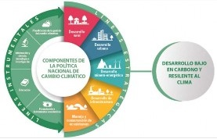 |
| National plan for adaptation to climate change (PNACC) |
Strategy you are looking for:
Help sectors and territories to:
- Identify your main threats and vulnerabilities , as well as your greatest strengths
- Work jointly on the implementation of policies, plans, actions and projects
- Reduce the risk of the impacts of climatic phenomena in the country
|
PNACC strategic lines
- Knowledge management
- Incorporate climate change management into environmental, territorial and sector planning
- Promote the transformation of development for resilience to climate change
|
| Members |
Ministry of Environment and Sustainable Development - MinAmbiente |
| National Planning Department - DNP |
| National Unit for Disaster Risk Management - UNGRD |
| Institute of Hydrology, Meteorology and Environmental Studies - IDEAM |
3.2. Risk and vulnerability
In recent years, the country has made progress in conducting vulnerability and risk analysis due to climate change, not only on a national scale by administrative units of departments and municipalities, but has also focused on the services of socio-ecological systems such as wetlands, and in productive sectors such as agriculture. This analysis, introduced in the Third National Communication on Climate Change (TCNCC), is based on 113 indicators distributed in the components of Threat, Sensitivity, and Adaptive Capacity, subdivided into six dimensions: Food Security, Water Resources, Biodiversity and Ecosystem Services, Health, Human Habitat and Infrastructure (see indicators in Annex A1).
Additionally, based on the TCNCC and the AR5 report of the Intergovernmental Group of Experts on Climate Change (IPCC), Colombia has sought to deepen the understanding of its vulnerability and risk to climate change. This has been done through initiatives such as the vulnerability and risk analysis to climate change of the floodplains of the Magdalena-Cauca macro-basin (IDEAM -TNCCC 1); and the vulnerability and risk analysis to climate change carried out by the Ministry of Agriculture and Rural Development and the Food and Agriculture Organization of the United Nations (FAO), with the support of IDEAM.
This has allowed the construction of better quality hazard, vulnerability, and risk maps, such as those presented in the figures below (see maps in more detail in Annex A2).
 |
 |
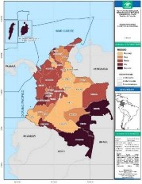 |
| The potential effects of climate change are represented in the Threat component, which was evaluated based on the exposed elements susceptible to impact due to changes in precipitation and temperature simulated for the RCP 6.0 scenario for the period 2011-2040.
The analysis included 38 indicators that represented the 6 dimensions mentioned, which allowed identifying that the entire Colombian territory has some level of threat from climate change, and that 56% of the departments are in the very high threat category , mainly in the Andean and Caribbean regions. |
Regarding vulnerability, 41 indicators were included that represent sensitivity related to biophysical, social and economic aspects, as well as 34 indicators that configure the capacity to adapt to climate change.
The analysis showed that 13% of the departments are in the very high category , mainly in the departments located in the Colombian Amazon along with San Andrés, Providencia and Santa Catalina. |
All the country's departments have some degree of risk from climate change.
In the very high category , the departments of San Andrés, Providencia and Santa Catalina located in the insular area of the country , as well as in the departments of Amazonas, Guainía and Vaupés, which are part of the Amazon region, were identified.
On the other hand, it is highlighted that departments such as Atlántico, Putumayo and Valle del Cauca presented high risk. |
3.3. Adaptation Priorities within the NDC Framework
Since the presentation of its first NDC, Colombia has shown significant progress in the achievement of its goals, which have laid the foundations for the goals presented in this update (a diagnosis of progress on the goals of the current NDC is you can see in Annex A4).
The adaptation component of the NDC in its updated version has greater ambition due to the fact that the goals established in 2015 (10 goals) have been reviewed and developed into proposals for more concrete actions to incorporate adaptation to climate change at different levels of the country planning.
The goals reflected in this chapter focus on areas such as: water resources, protection of coastal terrestrial and marine ecosystems, restoration, protected areas, infrastructure and agriculture, which are related to the risk dimensions presented in the TCNCC.
Seeking to take advantage of possible synergies, adaptation priorities are aligned with the risk and vulnerability dimensions identified as priorities for the country in the TCNCC, be consistent with the Sustainable Development Goals and their approach in the country, and with other international agendas such as, for example, the Sendai Framework for Action.
Regarding the TCNCC, as part of its Analysis of Vulnerability and Risk due to Climate Change, the country presented a battery of 113 indicators in the components of threat, sensitivity and adaptive capacity, distributed in six dimensions (food security, water resources, biodiversity and ecosystem services, human habitat, health and infrastructure). A description of the dimensions of the TCNCC, as well as the related indicators, can be found in Annex A1.
Colombia's priorities (goals) for 2030 are in the following table. It is noteworthy that detailed information on the goals established with respect to their objective, description, baselines, compliance milestones and measurement indicators can be found in the document attached to this NDC. The information is reflected through cards and is an integral part of the CA of Colombia.
Table 1. Updated adaptation goals for the NDC formulated in 2020
| Six (6) priority sectors of the economy (transport, energy, agriculture, housing, health, commerce, tourism and industry) will include climate change considerations in their planning instruments, and will be implementing adaptation actions. |
| Housing, City and territory
1. Incorporation of adaptation to climate change in sectoral instruments, through the development of guidelines, tools and criteria that guide the management of adaptation in the sector. |
Strengthen the processes of territorial planning and housing construction through the generation of guidelines, criteria and tools to reduce the vulnerability of the housing sector. |
 |
 |
|
| Water and basic sanitation
2. Develop protection and conservation actions in 24 water supply basins in municipalities susceptible to shortages due to low rainfall season and rainy season. |
Develop multisectoral interventions for conservation, protection and management in the watersheds and sources supplying priority aqueducts defined by the Ministry of Housing, City and Territory. |
 |
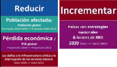 |
 |
| Water and basic sanitation
3. Develop structural and non-structural risk management actions for adaptation to climate change in 30% of the municipalities prioritized due to their susceptibility to shortages due to the dry season and the rainy season (2030). |
Strengthen resilience and the ability to adapt to climate-related risks that affect the sector through the implementation of structural and non-structural actions in 30% of the municipalities prioritized for their susceptibility to shortages due to the dry season and the rainy season. |
|
 |
|
| Water and basic sanitation
4. Reach 68% of domestic urban wastewater treatment by 2030. |
Increase the coverage and quality in the treatment of the wastewater flow in order to protect the basins and supply sources of the most polluted aqueducts and strengthen, with criteria for adaptation to climate change, the processes involved in the execution of the Wastewater Treatment Program (SAVER). |
|
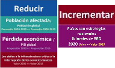 |
 |
| Water and basic sanitation
5. Reuse 10% of the domestic wastewater treated by the providers of the public aqueduct service by 2030. |
Propose intersectoral actions that contribute to generating regulations on the reuse of treated wastewater, taking into account criteria and technical information provided by the different sectors (Agriculture, Mines and Energy, Industry, Environment and Housing), and generate incentives for users of the water resource apply this practice, obtaining economic benefits and at the same time generating environmental benefits. |
|
 |
|
| Health
6. By 2030, adaptation actions will be formulated in disease prevention and health promotion, which contribute to reducing the cases of climate-sensitive diseases in 100% of the Territorial Entities in the health sector, at the departmental, district level and municipal categories 1, 2 and 3, and will be implemented in 40% of these. |
Formulate and implement adaptation actions aimed at strengthening the resilience of people and communities to variability and climate change and reduce cases of diseases sensitive to climate through strategies for disease prevention and health promotion in all the territorial entities of the country's health sector. |
 |
|
 |
| Health
7. By 2030, 40% of the institutions that provide health services in the public sector will implement adaptation actions in the face of possible events associated with variability and climate change. |
Reduce the vulnerability of the Public Sector Health Service Provider Institutions to the effects of climate variability and change, through the formulation and implementation of adaptation actions in the public sector Health Service Provider Institutions. |
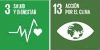 |
 |
|
| Mines and energy
8. Strategic line of resilient infrastructure: By 2025, a sectoral planning instrument for hydrocarbons, one for coal mining and one for electric energy have climate change guidelines aimed at ensuring the conditions of integral operation under new scenarios of operational demands and environmental. |
Contribute to the energy transformation of the country, in such a way that the competitiveness of the energy mining industries is guaranteed in the face of changing climate scenarios. |
 |
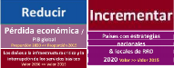 |
|
| Mines and energy
9. Strategic line of information for adaptation: By 2025, have an updated climate risk analysis methodology, together with a strategy to update periodically at the national and business levels. |
 |
 |
Transversal - information |
| Mines and energy
10. Strategic line for environmental management: By 2025, have an adaptation project based on ecosystems for the electricity sector that helps companies in the sector ensure compliance with their strategic objectives. |
 |
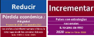 |
|
| Industry, commerce and tourism
11. At least 10% of small, medium and large companies in the prioritized sectors have implemented strategies, actions or projects to adapt to climate change.
This percentage must be evaluated based on the result of the Industrial Environmental Survey. |
Increase the participation of companies in prioritized sectors that implement strategies, actions or projects to adapt to climate change. |
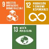 |
|
|
| Transport
12. Three (3) Tools implemented to improve the Geographic Information systems of the transportation infrastructure for risk management. |
Strengthen governance (effectiveness, quality, good guidance in sector interventions) of disaster risk management and climate change adaptation in transport sector institutions at the central and territorial level according to their competencies, including the improvement of systems of geographic information of the transport infrastructure. |
 |
|
 |
| Transport
13. Two (2) technical guidelines documents prepared to carry out risk studies for transportation infrastructure. |
Expand knowledge of the territory, risk factors and climate change that affect the different modes of transport. |
|
| Transport
14. Policy for Disaster Risk Management - DRM and Adaptation to Climate Change - ACC formulated for the sector. |
Include disaster risk management and climate change adaptation in transportation sector planning and development instruments. |
|
| Transport
15. Two (2) Methodologies for calculating the risk of transport infrastructure designed and implemented. |
Reduce the risk of disasters of the different modes of transport through prospective, preventive and corrective interventions as a result of knowing the risk. |
|
| Transport
16. Pilot project implemented for the applicability of the green road infrastructure guidelines. |
|
| Agriculture and rural development
17. Include climate change considerations in planning instruments for the agricultural sector (PIGCCS) and implementation of adaptation actions. |
Include climate change considerations in planning instruments for the agricultural sector and implement innovative adaptation actions. |
 |
 |
 |
| Agriculture and rural development
18.Ten (10) agricultural subsectors (rice, corn, potatoes, beef cattle, dairy cattle, sugar cane, cocoa, bananas, coffee and sugar cane), will have improved capacities to adapt to climate variability and / or climate change. |
Improve the capacities of 10 agricultural subsectors (rice, corn, potatoes, beef cattle, dairy cattle, sugar cane, cocoa, bananas, coffee and sugar cane) to adapt to climate variability and / or climate change. |
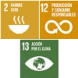 |
|
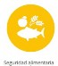 |
| Agriculture and rural development
19. Three (3) natural regions of the country with the greatest agricultural potential (Andean, Caribbean and Orinoquía) participating in the technical agro-climatic tables articulated with the national table and, one (1) million producers receiving agro-climatic information to facilitate decision-making in agricultural activities |
Achieve the coverage of the agroclimatic technical tables articulated with the national table in 3 natural regions of the country with the greatest agricultural potential (Andina, Caribe and Orinoquía), involving around 27 departments and 1 million producers receiving agroclimatic information to facilitate decision-making in agricultural activities. |
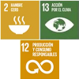 |
 |
|
| Environment (IDEAM)
20. By 2030 the country will have an Integrating Information System on Vulnerability, Risk and Adaptation to climate change (SIIVRA), which will allow monitoring and evaluating adaptation to climate change in Colombia articulated with the National Climate Change Information System (SNICC). |
Develop an Integrative Information System on Vulnerability, Risk and Adaptation to Climate Change, articulated to the SNICC, which allows analyzing vulnerability and risk from climate change and monitoring and evaluating adaptation in the country. |
 |
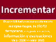 |
Transversal - information |
| Environment
21. One hundred thirty-five (135) Watershed Ordination and Management Plans - POMCA formulated and / or adjusted with considerations of variability and climate change. |
To have instruments for the management and management of hydrographic basins that contribute to reducing the risk and the socioeconomic and ecosystem impacts associated with climate variability and change. |
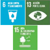 |
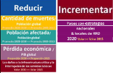 |
 |
| Environment
22. Delimitation and protection of 100% of the páramos of Colombia through management plans. |
Delimit the moors of Colombia and implement actions for their conservation, management and adaptation to climate change. |
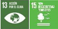 |
 |
 |
| Environment
23. 15% increase in the percentage of ecosystems or units of ecosystem analysis not represented or underrepresented included in the SIN |
Increase the ecosystem representation in SINAP as a contribution to the adaptation of the territories to climate change. |
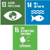 |
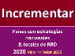 |
|
| Environment (PNN)
24. Increase of 18,000 hectares in the process of restoration, rehabilitation and / or ecological recovery in protected areas of the System of National Natural Parks and its areas of influence. |
Implement restoration, rehabilitation and recovery actions to improve the integrity of protected areas and their areas of influence to improve their capacity to adapt to climate change. |
 |
|
|
| Environment (ANLA)
25. Inclusion of climate change considerations in the instruments for environmental management and control of projects, works and / or activities under the jurisdiction of the National Environmental Licensing Authority as of 2020. |
Projects, works and / or activities within the competence of ANLA include and carry out measures against climate change within the framework of the environmental management and control instrument. |
 |
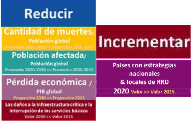 |
According to the actions and measures proposed in each of the projects, it will be possible to define the dimension of the TCNCC to which it contributes. |
| Environment (UNGRD)
26. Increase the percentage of the monitoring network with real-time transmission (from 24% to 35%) connected to early warning systems by 2030. |
Increase the adaptive capacity of the territory in the face of climate change by strengthening the hydrometerological network with timely information as an input to early warning systems and serve as a tool in disaster risk management. |
 |
 |
 |
| Environment
27. 50% update and implementation of the "National program for sustainable use, management and conservation of mangrove ecosystems" by 2030 |
Reduce the vulnerability of blue carbon ecosystems, with an emphasis on mangroves, through preservation, sustainable use and restoration strategies , as well as the formulation and implementation of management instruments, as measures that contribute to adaptation to the climate change. |
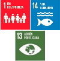 |
|
 |
| Environment
28. Adoption and implementation of 100% of the Plans for the Integrated Management and Management of Coastal Environmental Units (POMIUAC) with ecosystem-based adaptation actions (EbA) on mangroves and seagrasses, and other coastal ecosystems. |
Reduce the vulnerability of mangrove and seagrass ecosystems through the formulation and implementation of EbA measures in the UACs. |
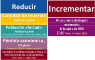 |
|
| Environment
29. Six (6) initiatives for adaptation to climate change and risk management for the sustainable use of mangroves (blue carbon ecosystem) in implementation, with a deadline of 2030. |
Improve adaptive capacity in mangrove areas through climate change adaptation and risk management initiatives. |
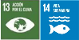 |
 |
|
| Environment
30. By 2030, the country will inter-institutionalize the processes of forest fire risk management, risk awareness, risk reduction and disaster management, defining guidelines and results with change management
climate, through 7 strategies. |
Develop strategies and actions that allow the improvement of the country's capacity in terms of knowledge of risk, risk reduction and the management of disasters related to forest fires and their articulation with the management of climate change. |
 |
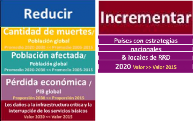 |
According to the actions and measures proposed by the goal, it will be possible to define which dimension of the TCNCC contributes. |
Alignment of NDC goals with PNACC strategic lines
For Colombia, the National Plan for Adaptation to Climate Change (PNACC) constitutes the mechanism that guides the management and organizes the national planning processes in matters of adaptation, and articulates the implementation of policies, plans, actions and projects to reduce vulnerability and increase adaptive capacity to the possible impacts of climatic phenomena in the country. Colombia is currently formulating the PNACC Action Plan with support from the Preparedness Program for National Adaptation to Climate Change financed with resources from the Green Climate Fund.
Said Plan seeks to promote effective implementation in adaptation through monitoring the phases of the process cycle (knowledge, planning and transformation), and indicates actions of means of implementation necessary to achieve the objectives set from the country's adaptation goals.. It also seeks to guide coordinated action between actors, public and private, through the consolidation and analysis of sectoral and territorial advances. The Action Plan will be finalized in 2021 and once validated, it will be sent to the UNFCCC to rest in the Central NAP.
The difference between the Communication in Adaptation (CA) and the PNACC is that the former presents the priorities and needs with specific goals and a long-term vision, in line with the Paris Agreement and its global goals, while the PNACC identifies national planning processes and objectives broadly and addresses the spectrum of country adaptation management in short, medium and long term periods. Thus, the PNACC and the CA are mutually feeding instruments.
The country seeks coherence between the different instruments used to communicate, report and plan adaptation in Colombia (Communication in adaptation (CA), National Communication (CNCC) - Biennial Transparency Report (BTR) - National Adaptation Plan (PNACC), in order to contribute to the effective management of the matter through the planning, application and communication of actions In this sense, an initial approach of the goals of the NDC with the objectives and strategies of the PNACC is presented below.
Figure 6. Alignment of the NDC goals with the strategic lines of the PNACC

Figure 6 shows that the goals set in the NDC are distributed in the three phases of the PNACC process. It should be noted that the majority (23) are associated with the first two phases: knowledge and planning. However, 16 of the 30 goals of the NDC reflect transformation options that will make it possible to meet the objective of having a more resilient and climate-adapted country.
3.4 Required support needs
As part of the Biennial Transparency Reports under the Paris Agreement, the possibility is provided for each Party to provide information related to impacts and adaptation to climate change (Article 13.8), and for developing countries to present information on support required and received. (article 13.10).
In preparing the AC, the country has taken into account the categories of information on required support that must be included in the BTRs. For Colombia, this constitutes an approach that ensures coherence in the needs and priorities that arise in this matter. This seeks to avoid an additional burden for countries when preparing the reports of Article 13, and generate relevant experiences in the framework of the negotiation of the Supplementary Guide for Communication in Adaptation that will take place in 2022.
The country has identified 132 needs with respect to financing, capacity building / building, and technology development and transfer (presented in Annex A4), despite not having a standardized methodology to identify them. It should be noted that the information presented does not fully reflect the country's needs and it will be necessary to continue working on these aspects. However, this initial approach will guide the country's work for the implementation of the commitments, future international cooperation and possible allocation of resources from the national budget.
Figure 7. Identified support needs

Finally, 11 types of needs have been identified for technology development and transfer, 5 for capacity building / strengthening and 10 for financing.
Figure 8. Identified needs in technology development and transfer

Figure 9. Identified needs in capacity building / strengthening
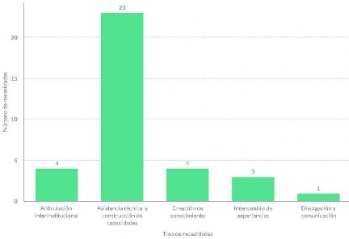
Figure 10. Identified financing needs

Methodological approach to the costing of adaptation priorities (goals) within the framework of the NDC (DNP, 2020)
Colombia is developing an estimate that allows an approximation of the costs that the country must incur to achieve its adaptation priorities (goals). With this purpose, an analysis is being carried out using two approaches, the convergence of which allows structuring a useful costing model for this and future updates. Both methodologies require iterative processes that will be updated over time according to the best information that is available.
Methodology for estimating climate finance needs for adaptation at the national level (from top to bottom)
The economic study of gaps (top-down methodology) by the National Planning Department (DNP) analyzes the difference between the economic growth scenario without climate change and the scenario under the impacts of climate change, estimating the effective investment in adaptation necessary to fill this gap. This methodology starts from the potential growth of macroeconomic production (that is, the expected growth of the economy) and estimates the additional investments in physical and human capital necessary to achieve this level of growth in a scenario that requires adaptation measures to climate change ( Barbier, 2015) (Lipschitz & Schadler, 2019).
As it is based on the production function of the economy, this methodology can be replicated more easily, given the availability of information related to macroeconomic data at the national level and the access to the necessary resources to carry it out.
This approximation offers a result relative to national GDP. The study, which is still in the process of review and adjustment, indicates that the annual investment in adaptation to climate change should be 0.2% of national GDP by 2030, to close the gap between potential economic growth and low economic growth. the impacts of climate change. In Colombian pesos (COP) for 2019, this corresponds to approximately 2 trillion pesos per year (approximately USD 600 million) until 2030. This figure should be taken as a minimum value, since it considers investment in human and physical capital, but not other measures which are also crucial for effective adaptation in the country (for example, natural capital measures).
Adaptation goal costing pilot (bottom-up)
The goal-level costing methodology (based on a bottom-up approach) seeks to estimate the cost of each adaptation goal by type of action, in accordance with current policy instruments in the country, in order to measure the financing needs to achieve 5 adaptation goals selected from the NDC update. The methodology used is based on an adjustment of existing methodologies used for similar exercises both in Colombia and in other countries, and had the validation of different actors by the Government of Colombia. As a result, there will be the development of a methodology that can be applied to the adaptation goals of the NDC proposed in this update, as well as to new goals proposed in future updates.
The main objective of this exercise is to support the government decision-making process related to adaptation costs, however, it is not a detailed estimate of adaptation actions. The detailed estimate of the budget must be carried out in parallel with the structuring of each action. Therefore, the methodology suggests following a pragmatic approach where, according to the existing information, different paths are followed when estimating costs, which recognizes possible ranges of uncertainty in the information. To meet the objective, a decision tree has been developed from which Colombia's adaptation goals are classified according to the availability of information and existing policies related to climate change, to allow the estimation of the costs of certain types of goals. based on approximate investment, operation and maintenance values. At the same time, among the advances, the realization of a pilot with 5 adaptation goals for this update stands out, as shown in the following table.
This approach seeks to make use of existing information to reduce uncertainty and complexity in capturing information, setting its calculation methodology based on the information available and facilitating its updating in the future. The table below shows the goals selected for this first costing phase, the classification of information availability, and the costing methodology used.
Table 2. Pilot study of costing adaptation measures from the bottom up
| Goal 26:
Increase to 35% the percentage of the network with real-time transmission (an increase of 11% equivalent to 310 stations nationwide), the time horizon would be 8 years (1 for planning and 7 for execution). |
Type 1: There is direct information on the investment, operation and maintenance costs for this type of goal, as well as consultancies and associated contracts . This is scaled against the activities required to reach the established milestones. |
Estimated cost of reaching 35% transmission in real time, based on:
- Number of stations required to reach the percentage aspirated
- Cost of each new station
- Annual operation and maintenance costs
- Administrative, consulting and contract costs
|
| Goal 21:
135 Watershed Management and Ordination Plans - POMCA formulated and / or adjusted with considerations of variability and climate change. |
| Goal 4:
Achieve 68% of domestic urban wastewater treatment (2030) |
| Goal 22:
Delimitation and protection of 100% of the paramos (37) of Colombia through management plans. |
Type 2: It has indirect or proxy information on the costs of investment, operation and maintenance for an equivalent activity. This is scaled against the activities required to reach the established milestones. |
Estimated cost of reaching the delimitation of 37 moors , based on:
- Costs incurred by environmental authorities in the formulation of protected areas or strategic areas in previous years (average cost per hectare)
- Fixed administrative costs, based on administrative costs calculated for other goals
|
| Goal 24:
Increase of 18,000 hectares in the process of restoration, rehabilitation and / or ecological recovery in protected areas of the System of National Natural Parks and its areas of influence |
4. Mitigation of GHG emissions
Recognizing the importance of incorporating climate change criteria in the short, medium and long term economic reactivation and vulnerability to climate change, the GHG mitigation goal for the 2020-2030 period is defined and presented. Through an ambitious and forceful goal, Colombia seeks to highlight the sense of urgency to take definitive actions to prevent extreme weather events that are increasingly hitting the national territory, such as hurricanes, landslides, and floods.
Colombia's updated goal is based on a long-term vision that is established by the aspiration towards carbon neutrality manifested by the country at the United Nations Climate Action Summit in September 2019, and which will be reflected in the Long-Term Strategy E2050, a medium-term vision to 2030 that is established through the Colombian Strategy for Low Carbon Development and the Comprehensive Strategy for Deforestation Control and Forest Management, and a short-term vision through the National Plan for Development.
Among the key advances in the execution of this long-term vision in terms of mitigation and that contribute to the achievement of the goal, are included the instruments created by Law 1931 on climate change, promulgated in 2018, including the National Quota Program Issue Tradables; the PIGCCS and the mitigation measures of each one of the ministries; the PIGCCT, the national carbon tax and the non-causation of the carbon-neutrality tax (Law 1819/2016 and Decree 926/2017); Law 1715 of 2014 on Renewable Energies; Resolution 1447 of 2018 of the Ministry of Environment and Sustainable Development on the monitoring, reporting and verification system of mitigation actions at the national level; the 1964 Law of 2019 on Electric Mobility; the 1972 Law of 2019 on air quality, in addition to important policy instruments such as CONPES 3874 for Comprehensive Solid Waste Management, CONPES 3919 for Sustainable Construction, CONPES 3934 for Green Growth, the National Circular Economy Strategy of 2019, among others.
In terms of reducing deforestation and protecting ecosystems, there is a broad and evolving regulatory and implementation framework, highlighting the delimitation of the agricultural frontier in 2018, the creation of the National Council to Fight Deforestation and other Associated Environmental Crimes in 2019, the leadership and signing of the Leticia Pact in 2019; Law 1930 on protection of paramo ecosystems, Decree Law 870 of 2017 and 1007 of 2018 on Payments for Environmental Services. Likewise, the implementation of the REDD + Amazon Vision Program from 2016, the Sustainable Development program low in Carbon for the Orinoquia and the signing of the Joint Declaration of Intent with Norway, United Kingdom and Germany on Reduction of Deforestation and Sustainable Development in 2015 and endorsed in 2019, among others.
The following sections seek to offer relevant and sufficient information aimed at facilitating clarity, transparency and understanding (ICTU) of Colombia's contribution to GHG mitigation, using as main guideline what is contained in Annexes 1 and 2 of Decision 4 / CMA.1, and with transparency as one of its primary axes.
Colombia's mitigation goal is established based on the projection and analysis of its reference scenario (trend growth in emissions in the absence of implementation of GHG mitigation actions) and the analysis and modeling of policy scenarios and reduction measures. of GHG emissions to reach the goal.
Colombia still presents great challenges regarding the consolidation and modeling of information, so not all the measures identified to date in the country have been included, to which is added the need to maintain continuous work that continues to incorporate actions of sectors and territories towards the fulfillment of the proposed goal.
4.1 Description of the baseline scenario
The reference scenario (VITO, Universidad de los Andes, CIAT, Universidad de Wageningen, SEI, ESMIA, 2020) uses two types of sectoral classifications: the IPCC categories and assignments to sectoral portfolios at the national level (intended to provide clear references allocation, management and reporting on these commitments) for which a standardization was made between IPCC categories and ministerial portfolios at the national level.
Figure 11. Disaggregation of emissions according to their IPCC classification
| IPCC level 1 |
2015 |
2020 |
2025 |
2030 |
| i {1} Energy |
86.67 |
88.60 |
106.47 |
124.80 |
| i {2} Industrial Processes and Product Use |
9.42 |
10.66 |
14.54 |
18.41 |
| i {3} AFOLU (Agriculture, Forestry and other land uses) |
117.94 |
170.44 |
186.45 |
174.50 |
| i {4} Waste |
19.55 |
21.60 |
25.24 |
28.09 |
| Total (Mt CO2 eq) |
233.58 |
291.30 |
332.70 |
345.80 |
Figure 11 shows the disaggregation of emissions according to their IPCC classification for the reference scenario, projected to 2030. For Colombia, the emissions of the AFOLU sector (Agriculture, Forestry and other land uses, for its acronym in English) represent a important proportion of the national inventory, and its disaggregation is shown in Figure 12 below.
Figure 12. Disaggregation of emissions from the AFOLU sector in Colombia
|

|
| Year |
2015 |
2020 |
2025 |
2030 |
| 3.A - Livestock |
39.37 |
48.76 |
54.70 |
56.56 |
| 3.B - Earth |
61.65 |
10231 |
111.80 |
97.36 |
| 3.C - Aggregate sources and non-CO2 emissions from land |
16.91 |
19.37 |
19.95 |
20.58 |
| Total (Mt CO2 eq) |
117.94 |
170.44 |
186.45 |
174.50 |
Of the emissions associated with land use (Land category {3B}), the projected emissions due to deforestation ({3B1aii 3B2bi 3B3bi 3B4bi 3B5bi 3B6bi}) amount to 87.38 Mt CO2 eq in the year 2030.
Table 3 presents the general technical characteristics of the reference scenario.
Table 3. Main characteristics of the reference scenario
| Definition of bottom-up and top-dow n in the context of estimating emissions |
- Bottom-up refers to the methodological approach in which activity data is collected at the regional level and aggregated at the national level.
- Top-down refers to the methodological approach in which the activity data are aggregated at the national level, and the regional estimates are calculated proportionally to the national estimate.
|
| Main Growth Drivers for Baseline and Mitigation Scenarios |
- Updated population projections between 1985-2050 based on the last 2018 census, provided by DANE.
- GDP growth according to the 2020 Medium-Term Fiscal Framework, with impacts from COVID-19.
- Deforestation modeling (National Reference Level for Forest Emissions presented to the UNFCCC in 2020).
- Individual projections for subsectors of the AFOLU sector, HFCs.
- Hydrocarbon supply and production scenarios without COVID-19 impacts and without a drop in oil prices in the first months of 2020.
|
| Technical characteristics of the update of baseline and mitigation scenarios |
- Estimates from the National Greenhouse Gas Inventory (INGEI) of the BUR2 are used as historical data for the period 2010-2014 as the base period for the projection from 2015 to 2030.
- The scenarios respond to two forms of disaggregation: by IPCC category for use in international communications, and by portfolios (ministries) for monitoring sectoral commitments, using sectoral growth rates.
- Global warming potential values from the 5th IPCC Report, page 731 (GWP-AR5) are used. (IPCC, WG1, 2013).
- Country-specific emission factors from national investigations (methodological level 2) are used as far as possible and factors from the IPCC database (methodological level 1) in the rest of the cases.
- The construction of the scenarios used as sources of information the most updated official data for each portfolio sector, adjusted to the IPCC categories.
- For the deforestation category, the projections of the Reference Level of Forest Emissions (NREF) submitted to the UNFCCC (Minambiente, IDEAM, 2019) were used, incorporating in the calculations the remaining carbon deposits after deforestation in alignment with the INGEI.
- The baseline scenario included the estimated impact of COVID-19 on the economy with an estimated economic decline rate of -5.5% in 2020.
- The reduction of emissions associated with mitigation measures that began to be implemented before January 1, 2015 is considered part of the baseline scenario.
|
The baseline scenario update included seven (7) new emission categories with respect to the previous NDC, due to improvements in the availability of information. These categories are listed in Table 4 below:
Table 4. Emission categories added to baseline and mitigation scenarios in the 2020 update
| 1Acii - Other energy industries: regarding the burning of fuels for coal production |
| 1A2i - Mining and quarrying |
| 1A3ei - Pipeline transport |
| 3B1ai - Forest land remaining as such (Fuelwood consumption) |
| 3B1b - Land Converted to Forest Land |
| 3B4 - Wetlands (emissions by diffusion in reservoirs for power generation) |
| 3C1 - Non-CO2 emissions from biomass burning |
The information presented as part of this update is based on previous communications and reports to the UNFCCC. The national data for the reference scenario were consolidated by calculating and aggregating sectoral emissions according to the data available at the national level, comprising all sectors of the economy and covering 100% of emissions and IPCC categories. According to information from INGEI (IDEAM, PNUD, MADS, DNP, CANCILLERÍA, 2016) for the year 2014, against which improvements were made related to updating the global warming potential values from GWP - AR2 to GWP - AR5, and methodological improvements for some subcategories of the AFOLU module.
In the coming years, Colombia hopes to optimize the information and data collection process, and standardize the preparation of baseline and mitigation scenarios. For each update, Colombia takes into account changes in factors that may significantly modify the projections and estimates that provide the basis for the scenarios, but does not use a dynamic baseline. Likewise, Colombia does not foresee specific conditions that lead to update the scenarios and the NDC outside the regular cycles of the Paris Agreement.
4.2. GHG mitigation goal
Following the guiding principles of using the best available information and seeking non-retrogression and progression of ambition, Colombia establishes its mitigation commitment, in terms of the country's maximum absolute emissions in the year 2030 (absolute emissions goal for a single year) as described below.
Table 5. Summary of the GHG emissions mitigation goal
| Goal type |
Goal of absolute emissions in one year |
| Year of deviation of the mitigation scenario from the baseline scenario |
2015 |
| Implementation period |
2020 - 2030 |
| Scope and coverage |
Sectors : the mitigation goal covers all sectors of the economy.
Greenhouse gases : it has coverage of the following greenhouse gases CO2, CH4, N2O, HFCs, PFCs, SF6. |
| Global warming potentials |
Global warming potential values from the 5th IPCC Report, page 731 (GWP-AR5) are used to estimate the baseline and mitigation scenario emissions. (IPCC, WG1, 2013) |
| Cooperative approaches |
Colombia intends to participate in cooperative approaches under Article 6 of the Paris Agreement, in accordance with the decisions adopted by the CMA on the matter and with the environmental integrity approach indicated by the San José Principles. |
Colombia's NDC is fair to the extent that it responds to the vulnerability of our territory to the impacts of climate change and puts on the table Colombia's contribution as a middle-income developing country. It is also ambitious as it significantly exceeds our 2015 emission reduction target, committing today to reducing emissions of 176 Mt CO2 eq. In this way, Colombia responds forcefully to the call of science, indicated in the IPCC Report of 1.5°C (IPCC, 2019), and includes all sectors of our economy.
Deforestation
Given its particular conditions, the goal of reducing emissions from deforestation part of the NDC is calculated independently and in a unified manner at the national level in line with the projections of the NREF until 2030, and will be monitored from the Forest and Carbon Monitoring System (SMByC). The stated mitigation goal contemplates a reduction in emissions from deforestation equivalent to reducing the deforestation rate to 50,000 ha / year in 2030.
The country plans to make use of cooperative and market approaches, including those of article 6.2 or those that imply the use of mitigation results of international transfer, for the fulfillment of the complementary goal to the NDC of reducing deforestation of natural forest to 0 hectares / year net to 2030.
The trajectory of the goal of reducing emissions from deforestation by 2030 includes an expected deforestation trend of 155,000 ha / year in 2022 and 100,000 ha / year in 2025, figures that are in accordance with the aspiration indicated in the Joint Declaration of Colombia with Norway, Germany and the United Kingdom on reducing deforestation and sustainable development (Republic of Colombia, the Kingdom of Norway, Federal Republic of Germany, United Kingdom of Great Britain and Northern Ireland, 2019), which includes a contribution to the country of up to USD 366 million by 2025 for the achievement of these results and other policy milestones in reducing deforestation.
Along the same lines, the importance of inter-institutional management of forest fires is recognized, which contribute to the emission of GHG and are, at the same time, exacerbated in frequency and magnitude as a consequence of climate change. Colombia has first developed an approach with risk management as the main focus, which can be seen in greater detail in the adaptation component of this update. In the coming years, Colombia hopes to strengthen its knowledge and information management with respect to GHG emissions caused by forest fires in the country, with a view to implementing actions to calculate a mitigation potential.
Exclusions
Colombia does not include all carbon pools in the NDC because, for some of the categories that involve them, there are still information gaps at the national level that will require progress in the coming years, in order to improve the required estimates. These categories correspond to marine and coastal ecosystems (that is, blue carbon ecosystems outside the forest category), high mountain ecosystems (páramos), and urban woodland.
The emission and / or removal categories that in the National GHG Inventory Report-NIR, have the annotations of Not Estimated (NE) and Not Applicable (NA) in 2014 are not accounted for by the NDC.
As in the NDC presented in 2015, carbon dioxide removals by the natural forest that remains as such (removals of category 3b1ai) that do not obey a restoration process are not counted, since the origin of these removals it is not anthropogenic.
Below is a list of carbon pools not included in Colombia's mitigation goal.
Table 2. Carbon pools not included in Colombia's mitigation goal in this update of its NDC
| Wetlands |
We stopped |
3B4. Wetlands |
Wetlands
Except for reservoirs for power generation |
3B4. Wetlands |
| Seagrasses |
3B4. Wetlands |
| Settlements |
Urban Woodland |
3B5. Settlements that remain as such |
| Woods |
Removals by natural forest that remains as such |
3B1ai - Forest Land Remaining> As Such (Natural Forest) |
Colombia recognizes the importance of high mountain ecosystems, marine and coastal ecosystems, as well as the solution to urban challenges and the use of opportunities for the inclusion of biodiversity and ecosystem services within Colombian cities for comprehensive management of climate change.
Given the challenges presented by the lack of information on the dynamics of carbon and other greenhouse gases in these ecosystems in the national territory, actions will be identified and developed that seek to strengthen the capacity to create knowledge related to the role of these ecosystems in the mitigation of GHG through the strengthening of the National Climate Change Information System, its different subsystems and platforms, and the respective articulation with entities of the National Environmental System SINA, within the framework of its different planning instruments, the PIGCC and the Policy National of Climate Change.
In this sense, the definition of work routes concerning the resolution of information challenges for decision-making on climate change management in said land cover will be developed within the framework of inter-institutional technical spaces.
For the carbon pool of harvested wood products, this update does not have a breakdown related to its end use to be able to apply the guidelines related to accounting for said pool. Colombia will work during the NDC implementation period to improve the accounting of said deposit and consequently the mitigation of GHG in categories 3B1ai and 3B1aiii. Likewise, Colombia will develop an accounting rule on emissions from fires and natural disturbances for the determination of corresponding exclusions from accounting in the NDC according to international best practices.
Methodological Approaches to Carbon Accounting
Colombia has developed the accounting system for the reduction of emissions and removal of GHG, a set of processes, technologies, protocols and accounting rules that determine the emissions, reductions of emissions and removals of GHG that are accounted for, with the objective of generating reports and demonstrate progress in meeting national climate change goals established under the UNFCCC. In this way, it seeks to tend towards the reasonable consistency of the national accounting of GHG reductions and removals, under the principles of transparency, accuracy, completeness, comparability, coherence, prevention of double counting and environmental integrity.
In order to effectively assign responsibilities to the actors in charge of implementation, Colombia has established, within the SISCLIMA framework, a homologation of GHG emissions between the IPCC categories and the portfolio sectors, which corresponds to the competencies of the portfolio sectors in the framework Colombian Institution (MinAmbiente-DCCGR, 2020). In addition, accounting rules have been agreed for the monitoring and recognition of GHG emission reductions and removals within the framework of the mitigation sector commitments (MinAmbiente-DCCGR, 2020).
The accounting of the NDC will be carried out in the National Accounting System, regulated by Resolution 1447 of 2018 of the Ministry of Environment and Sustainable Development, in accordance with the accounting rules set forth there, as well as those mentioned above established under SISCLIMA, and those future rules to be developed, including the issues of harvested wood products, natural disturbances, and in response to the guidelines of the cooperative and market approaches of Article 6 of the Paris Agreement or other international agreements.
Colombia intends to report in the Biennial Transparency Reports monitoring indicators for both GHG emissions and GHG emissions reduction for compliance with the NDC. For the emissions, the National Inventory of Greenhouse Gases will be taken as the main source, and for the reduction of emissions, the National Emission Reduction Registry (RENARE) will be taken as the main source.
Black carbon
Considering that black carbon is one of the main pollutants responsible for the deterioration of air quality and the main factor of environmental risk to health, Colombia contemplates, within the framework of its NDC, the adoption of measures to reduce pollutant emissions short-lived climate conditions (SLCPs), including black carbon. For this purpose, the National Strategy for the Mitigation of Short-lived Climate Pollutants has been drawn up, which seeks to improve the mechanisms for managing information related to short-lived climate pollutants, adopt and promote the use of tools to estimate the benefits associated with reduce their emission, strengthen institutional capacity, replicate successful cases of application of the tools adopted, and make visible the contribution of said tools to institutional strengthening and meeting goals (MinAmbiente, 2020).
In line with this, Colombia has defined a national goal to reduce black carbon emissions of 40% compared to the 2014 emissions level (IDEAM, MinAmbiente, Coalición del Clima y Aire Limpio, 2019). This target does not include black carbon emissions associated with forest and grassland fires, as there is insufficient information on this activity. In other words, considering a black carbon emission of 15,235 tons in 2014 (excluding fires), Colombia's maximum black carbon emission in 2030 will be 9,195 tons.
Figure 13. Black carbon emission reduction target by 2030

4.3. Measures to achieve the goal
Within the framework of its NDC, Colombia has identified a portfolio of measures whose implementation will support the fulfillment of its GHG mitigation goal. This portfolio consists of a list of 32 national measures (led by ministerial portfolios), 89 sub-national measures (led by territorial entities), 24 measures led by companies and 3 specific measures to reduce black carbon, for a total of 148 measures. These measures have been consolidated by the actors responsible for their implementation, in concert with the other actors in order to achieve the common mitigation goal. This list was approved at the intersectoral level as a package of measures that does not pretend to be exhaustive and on which new measures or increased potentials should continue to be incorporated by the actors in charge. The measures are varied in nature, incorporating public policy and regulatory actions, Nationally Appropriate Mitigation Actions (NAMAs), sector programs, individual projects; with implementation scales from the national to the municipal and business. These measures do not include those mitigation actions established prior to 2015, as these correspond to the baseline scenario.
Most of the sectoral mitigation measures come or will be reflected in the PIGCCS, formulated and being finalized. However, the mitigation potential of the sectoral measures has been modeled in the mitigation scenario (VITO, Universidad de los Andes, CIAT, Unviersidad de Wageningen, SEI, ESMIA, 2020) with respect to the updated reference scenario, recalculating with respect to to previous exercises.
The goal of reducing emissions from deforestation in the context of the NDC is presented as an intersectoral goal, due to the required interference of multiple portfolios for its materialization. The actions leading to this goal are multiple and are extensively reflected in the EICDGB (MinAmbiente, IDEAM, 2018), the CONPES National Policy for the Control of Deforestation and Sustainable Management of Forests and other related policy documents. Colombia recognizes the fundamental role that indigenous and Afro-Colombian communities play in the protection and sustainable use of forests in Indigenous Reservations and Collective Territories of Black Communities, which cover a very significant portion of the country's natural forests, particularly in the Amazon and the Pacific Coast.
The territorial mitigation measures come mainly from the PIGCCT or sustainable mobility projects in cities and correspond to measures with clear and quantitative implementation goals supported by governments, regional autonomous corporations and municipal governments to explicitly contribute to the NDC. For their part, corporate mitigation measures come from companies with established corporate mitigation goals which indicated their consent to explicitly contribute to the mitigation goal of the NDC.
The contribution of the territorial and business measures are not included in the mitigation scenario for this update, but are included qualitatively, with the exception of those referring to the Bogotá Metro and the Cundinamarca Regiotram. During the implementation period, Colombia hopes to quantify the potential of territorial and business measures in its mitigation scenario, as well as incorporate new measures that arise from other actors, to the extent that more and better information is available, characterizing them in detail applying additionality criteria and avoiding double counting in their modeling.
The country will indicate in the Biennial Transparency Reports the new measures that have been added to the NDC implementation portfolio, in addition to those circumstances in which the measures and / or their corresponding goals have been adjusted, modified or withdrawn from the portfolio, without detriment. of the aggregate fulfillment of the national GHG mitigation goal.
Annex M1 contains the list of sector measures with their respective leading ministries and the corresponding goals. Likewise, the territorial and business measures verified and with the consent of departments, regional autonomous corporations, cities and companies are listed. Likewise, the territorial and business measures verified and with the consent of departments, regional autonomous corporations, cities and companies are listed.
The black carbon reduction goal also considers the co-benefits associated with the sectoral GHG mitigation measures presented in this update. The GHG emission mitigation measures that contribute the most to the goal of reducing black carbon emissions are the replacement of traditional wood stoves with efficient stoves, the improvement of the brick industry, the measures associated with transportation, in particular the replacement of vehicles with diesel engines, and the panela NAMA. These GHG mitigation actions present additional co-benefits in terms of public health, due to the improvement of local air quality related to the reduction in emissions of criteria pollutants.
Colombia recognizes the need to quantify the co-benefits in terms of health associated with the improvements in air quality that result from the implementation of GHG mitigation measures, such as those reported through this update of our NDC. To this end, a national study will be carried out to quantify the health co-benefits associated with the improvements in air quality resulting from the implementation of greenhouse gas mitigation measures by the Colombian government in collaboration with the World Health Organization (WHO), Pan American Health Organization (PAHO) and partner organizations. The economic and health benefits will be calculated by analyzing the impact path of the CarbonH tool. This, in turn, will facilitate the integration and formulation of policies both from the environment sector and from the health sector and social awareness about the collateral benefits in terms of air quality and health associated with the implementation of climate change mitigation measures..
Means of Implementation
The Means of Implementation seek to establish the conditions that allow the creation of a favorable environment to carry out the actions required to meet the goals established in the NDC and the progressive increase in ambition.
For this, a common framework for action is necessary to identify strategic areas of national scope and, at the same time, integrate the particular characteristics of climate change management in sectors and territories. This common framework lays the foundations for a pragmatic approach to climate change mitigation and adaptation actions through means of implementation, and favors the creation of spaces and coordination mechanisms for decision-making and the participation of different actors.
The management of means of implementation in Colombia occurs through five areas that complement each other, in which a set of milestones are proposed, which serve as an articulating axis to identify the needs of the goals and proposed measures in mitigation and adaptation.
Figure 14. Milestones according to areas of the means of implementation to be reached by 2030

This articulation is supported by the identification of institutional support frameworks for implementation, public and private interest groups, vulnerable populations, strategic partners, coordination bodies, and definition of roles, responsibilities and scope for implementation, follow-up, monitoring and evaluation. of the implementation process. Additionally, there are thematic axes that cross-link mitigation measures and adaptation goals, in order to facilitate implementation.
Table7. Description of the five areas of means of implementation
| Planning |
It is a structural area, which acts as an enabling framework for the interaction of other areas.
Its purpose is to offer guidelines that help define and structure action plans for mitigation and adaptation measures to climate change, and their specific requirements in terms of means of implementation. This includes, for example, the need for new strategies or future projections, and territorial articulation.
This area also allows articulating the area of building and strengthening capacities as an integrating area, to make implementation more effective. |
| Education, training and awareness |
It includes formal education, education for work and human development and informal education, and other processes aimed at sensitizing the population about climate change.
This area seeks to highlight the importance of educational, training and awareness-raising processes to transform the behavior of society and, which is reflected in the implementation process in sectors and territories.
Likewise, this area contributes to transparency, access to information, research and participation, essential elements to advance towards the appropriation of climate change management in the country. |
| Information, science, technology and innovation |
It focuses on the consolidation of information systems, databases and sources that feed them, as well as research, technological development and innovation required for the implementation of climate change measures.
This area is supported by alliances with academia, thought centers and research centers that contribute to the generation of new knowledge, development of new technologies, transfer processes and technological appropriation. In addition, it seeks to articulate state efforts based on science and technology (eg Ministry of Sciences, Technology and Innovation) to consolidate an ecosystem of research on climate change with potential lines of work and financing, aligned with national priorities. |
| Financing and economic instruments |
In this area, it seeks to identify the financing needs to meet the goals and measures of the NDC, and integrates the sources of financing, financial schemes, project structuring; the costing and sustainability of the implementation. Likewise, it integrates the regulatory signals to integrate the externalities generated by the emission of Greenhouse Gases-GHG-, in the consumption and production processes. These financing requirements are defined through planning processes and identification of implementation needs, identified according to areas. |
| Capacity building and strengthening |
The integrating and articulating field is considered, as it enhances the implementation of other fields and feeds on their consolidation.
It seeks to create the ideal conditions to address climate change management in the country, giving the actors the tools for planning, knowledge transfer, technology development, and obtaining funds for the implementation of mitigation measures and adaptation at the local, regional and national level. |
Management approach and goal setting
Colombia considers in the management of climate change the areas established by the UNFCCC ( Building and strengthening capacities ; Development and transfer of technologies ; and Financing ), to which it integrates aspects of information, science and innovation, as well as economic instruments. To this, Colombia adds the areas of Planning , and Education, training and awareness , and adapts the set in accordance with the instrumental lines of the National Policy on Climate Change.
For each of the areas, a set of milestones are established, which are materialized through specific goals to be achieved by 2025 and / or 2030.
Table 8. Description of the goals of the five areas
| PLANNING |
Sectors and territories that integrate mitigation and adaptation to climate change as part of their planning and regulatory and investment decision-making for their implementation |
2030 |
100% of the national territory covered with Comprehensive Climate Change Plans (PIGCCT) formulated and in implementation. |
Seeks that all departments and cities are implementing the PIGCCT that they have formulated, through projects aligned with the action plan proposed in the respective plan |
| 2025 |
9 pilots executed, which integrate planning, for the implementation of actions of the PIGCCT |
It seeks to execute pilots framed in the action plans of the PIGCCT in execution, in each of the nine nodes of climate change in the country |
| 2030 |
100% of the Comprehensive Sectoral Climate Change Plans (PIGCCS) will be in implementation |
Seeks that all sectors are implementing their PIGCC through projects aligned with the action plan proposed in the respective plan |
| 2025 |
100% of the PIGCCS will be formulated |
This goal is focused on ensuring that by 2025 all sectors already have their PIGCC formulated, which will allow consolidating its implementation by 2030 |
| INFORMATION, SCIENCE, TECHNOLOGY AND INNOVATION |
Sectors and territories that integrate research, scientific knowledge, technological development and innovation, to identify opportunities and face the challenges posed by low-carbon, adapted and resilient development |
2030 |
One (1) research project executed in each of the established lines of research in Science, Technology and Innovation (CTeI) in climate change |
It is expected that in each of the lines of the PENIA - National Strategic Plan for Environmental Research - related to climate change, at least one project has been executed in CTeI. |
| 2025 |
Definition of 4 sub-lines of research within the framework of the National Strategic Plan for Environmental Research (PENIA), which direct research, information, technological development and innovation in climate change, according to the prioritized needs in conjunction with sectors and territories and that can be supplemented or modified according to the needs |
It is proposed that within the PENIA climate change lines the definition of at least 4 sub-lines that are aligned with the prioritized needs articulated with the PIGCCT |
| 2030 |
100% of the national territory with the incorporation of science, technology and innovation in the implementation of mitigation and adaptation actions coordinated by PIGCCT and with the PENIA |
It is expected that all departments have executed and ongoing projects focused on climate change CTeI aligned with the needs identified and prioritized with the PIGCCT and with the PENIA |
| 2025 |
A project in execution in each of the PENIA research lines (4 projects) in CTeI articulated with the PIGCCT and the goals of the NDC |
Each of the lines defined in the PENIA is expected to have at least one ongoing project focused on CTeI aligned with the needs identified and prioritized with the PIGCCT and with the goals of the NDC. |
| 2030 |
100% of the pilot of the National Climate Change Information System (SNICC) is in operation |
It is expected that the SNICC will be 100% conceptualized by 2025 and starting its implementation and that by 2030 the pilot will be 100% operational |
| 2025 |
National Climate Change Information System (SNICC) conceptualized |
| ECONOMIC INSTRUMENTS AND FINANCIAL MECHANISMS |
Financial schemes that respond to mitigation and adaptation goals, according to the sectoral and territorial characteristics.
Climate risk integrated into the planning of sectors and territories and financial protection instruments.
Economic instruments that modify consumption and production patterns and generate behavioral changes. |
2030 |
100% of the National Climate Financing Strategy (ENFC) according to strategic and transversal lines of action in implementation |
The purpose of the goal is to energize and implement the ENFC action plan in the short, medium and long term in accordance with the strategic and transversal lines, which are: development of economic and financial instruments; management and access to financing sources; Generation and strengthening of capacities; Knowledge and information management. |
| 2025 |
100% of the short-term action plan of the Climate Financing Strategy (ENFC), according to strategic and cross-cutting lines in implementation |
| 2030 |
100% of the National Program for Tradable Emission Quotas (PNCTE) in implementation |
The PNCTE is expected to be 100% up and running. |
| 2030 |
100% of the green taxonomy of Colombia with the principles, methodology and governance framework developed and in implementation |
It is intended that the green taxonomy is contributing to the mobilization of resources for the fulfillment of the goals of the NDC. |
| EDUCATION, TRAINING AND AWARENESS |
Educational system and training and awareness processes that generate behavioral changes for low-carbon, adapted and resilient development.
Sectors and territories that integrate mitigation and adaptation to climate change as part of their planning and regulatory and investment decision-making for their implementation |
2030 |
Goal 1: Update the National Environmental Education Policy to re-signify it and demonstrate in it the importance and urgency of addressing climate change education at all levels, in accordance with the national, regional and local context, from human rights approaches, intergenerational, differential and gender. |
It seeks to update and re-signify the National Policy for Environmental Education and associated regulations for the development of improvement actions that allow to demonstrate the importance and urgency of climate change in accordance with its reality at a global, national and local level and its integrality with environmental management. |
| 2030 |
Goal 2: Incorporate climate change in formal education (preschool, basic primary and secondary, middle and higher) and in education for work and human development, within the framework of institutional autonomy, as an essential component to promote a transition fair, from the human rights, intergenerational, differential and gender approaches. |
It seeks to effectively incorporate climate change in formal education and education for work and human development, providing continuous cycles of training in climate change from the first years of life to the productive age to strengthen public awareness and capacities especially of young people, trainers, future professionals and decision makers. |
| 2030 |
Goal 3: Integrate training, training and awareness-raising processes with a human rights, differential, gender and intergenerational approach into climate change policies, their instruments and regulations. |
It is expected that the climate change instruments generated or updated will incorporate education, training and awareness from formal education, education for work and human development and informal education with a human rights, differential, gender and intergenerational approach. |
| 2025 |
Goal 4: Strategies defined and being implemented in the PIGCCT and PIGCCS to integrate education, training and awareness processes , with human rights, intergenerational, differential and gender approaches. |
The PIGCCT and PIGCCS are expected to implement education, training and awareness strategies from formal education, education for work and human development and informal education with human rights, intergenerational, differential and gender approaches and thus strengthen the incorporation of change climate at different educational levels with territorial and sectoral specificities. |
Acronyms and acronyms
| ACPM |
Fuel Engine Oil |
| AFOLU |
Agriculture, forestry and other land uses (for its acronym in English) |
| ANLA |
National Environmental Licensing Authority |
| BAU |
From Business as Usual English, if everything remains the same |
| BECO |
Colombian Energy Balance |
| BTR |
Biennial Transparency Report (for its acronym in English) |
| BUR |
Biennial Update Report (for its acronym in English) |
| CBD |
Convention on Biological Diversity |
| CICC |
Intersectoral Commission on Climate Change |
| CMA |
Conference of the Parties serving as the meeting of the Parties to the Paris Agreement. |
| UNFCCC |
United Nations Framework Convention on Climate Change |
| UNCCD |
Convention to Combat Desertification |
| CO2 |
Carbon dioxide |
| CO2eq |
Equivalent in units of carbon dioxide |
| COB |
Biodegradable Organic Content |
| CONALDEF |
National Council for the Fight against Deforestation |
| CONPES |
National Council for Economic and Social Policy |
| COP |
Conference of the Parties |
| COVID-19 |
Corona Virus Disease 2019 (for its acronym in English) |
| CTeI |
Science, Technology and Innovation |
| CTCN |
Climate Technology Center & Network |
| DANE |
National Administrative Department of Statistics |
| DNP |
National Planning Department |
| E2050 |
Long Term Strategy E2050 |
| ETF |
Enhanced Transparency Framework (for its acronym in English) |
| FOB |
From English Free On Board, under the responsibility of the seller |
| GHG |
Greenhouse gases |
| GWh |
Gigawatt hour |
| GWP |
Global Warming Potential (for its acronym in English) |
| HFC |
Hydrofluorocarbons |
| ICTU |
Information to Facilitate Clarity, Transparency and Understanding (for its acronym in English) |
| IDEAM |
Institute of Hydrology, Meteorology and Environmental Studies |
| IGAC |
Agustín Codazzi Geographical Institute |
| INGEI |
National Inventory of Greenhouse Gases |
| INS |
National Institute of Health |
| IPCC |
Intergovernmental Panel on Climate Change (for its acronym in English) |
| IPPU |
Industrial processes and product use (for its acronym in English) |
| LEAP |
Low Emissions Analysis Platform (for its acronym in English) |
| MinAgriculture |
Ministry of Agriculture and Rural Development |
| MinAmbient |
Ministry of Environment and Sustainable Development |
| MBL |
Million barrels |
| MinCIT |
Ministry of Commerce, Industry and Tourism |
| MinHealth |
Ministry of Health and Social Protection |
| MRV |
Monitoring, Reporting and Verification |
| Mt |
Metric tons of CO2 equivalent. |
| MTA |
Agroclimatic Technical Table |
| NAMA |
Nationally Appropriate Mitigation Actions (for its acronym in English) |
| NDC |
Nationally Determined Contribution |
| NRCC |
Regional Climate Change Nodes |
| NREF |
Forest Emissions Reference Level |
| SDG |
Sustainable Development Goals |
| OECD |
Organization for Economic Cooperation and Development (for its acronym in English) |
| WHO |
World Health Organization |
| NGO |
Non Governmental Organization |
| PENIA |
National Strategic Plan for Environmental Research |
| GDP |
Gross domestic product |
| PIGCC |
Comprehensive Climate Change Management Plan |
| PIGCCS |
Comprehensive Sectoral Climate Change Management Plan |
| PIGCCT |
Comprehensive Plan for the Management of Territorial Climate Change |
| PINES |
Projects of National and Strategic Interest |
| PNACC |
National Plan for Adaptation to Climate Change |
| PNCC |
National Policy on Climate Change |
| PND |
National Development Plan |
| WWTP |
Residual water treatment plant |
| POMCA |
Watershed Management and Ordination Plans |
| SMEs |
Small and medium businesses |
| REDD + |
Reduction of emissions from deforestation and forest degradation (for its acronym in English) |
| RENARE |
National Registry for the Reduction of GHG Emissions and Removals |
| RUNAP |
Unique National Registry of Protected Areas |
| SAO |
Ozone Depleting Substances |
| SbN |
Nature-based solutions |
| SIGN |
National Learning Service |
| SIB |
Biodiversity Information System |
| SIIVRA |
Integrating Information System on Vulnerability, Risk and Adaptation |
| WITHOUT |
National Interconnected System |
| SINA |
National Environmental System |
| SINAP |
National System of Protected Areas |
| SISCLIMA |
National Climate Change System |
| SLCP |
Short-lived climate pollutants (for its acronym in English) |
| SMByC |
Forest and Carbon Monitoring System |
| SNCC |
National Information System on Climate Change |
| SSP |
Silvopastoral systems |
| TCNCC |
Third National Communication on Climate Change |
| UNGRD |
National Unit for Disaster Risk Management |
| UPA |
Agricultural Production Unit |
| UPME |
Mining-Energy Planning Unit |
| UPRA |
Rural Agricultural Planning Unit |
| USD |
US dollars (for its acronym in English) |
| UTO |
Ozone Technical Unit |
| Wp |
Watt peak |
Annexes
Annex A1. Additional information presented in the Third National Communication on Climate Change (TCNCC)
TCNCC Dimensions
| Hidric resource |
This dimension seeks to identify the relationship of human settlements with respect to water resources, against its use and availability. The component has as conceptual reference the National Water Study (IDEAM, 2014). The basic unit of analysis of the National Water Study is the hydrographic subzone, whose data were later municipalized. |
| Biodiversity and Ecosystem Services |
This dimension relates the ecosystem service of provision, with species categorized as "use" in analysis with threatened species listed in the national Red Books with threat category (Critically Endangered, Endangered and Vulnerable). Under this dimension, the change in natural plant covers to the year 2040 was modeled under the RCP 6.0 scenario. |
| Health |
This component identifies the climatic relationship with human health, either due to the differences in temperature and precipitation in climatic periods, as well as the relationship with vectors of associated diseases. |
| Human habitat |
This dimension seeks to identify those variables associated with housing and services associated with human settlements. Here elements of territorial management and institutional interaction are collected. |
| Infrastructure |
Under this dimension, indicators related to roads, air accesses, availability of electrical connection, and energy alternatives for adaptive capacity are presented. |
Indicators of threat, sensitivity and adaptive capacity
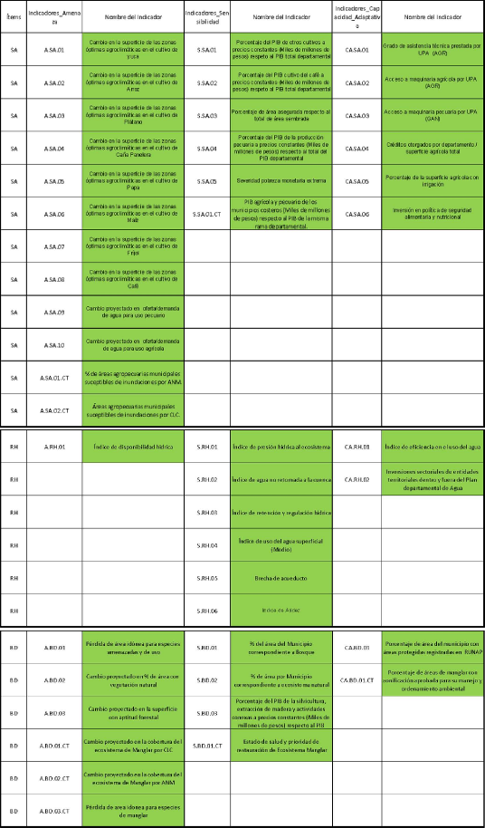
Annex A2. Hazard, vulnerability and risk maps at the departmental level in Colombia (prepared with information taken from the TCNCC, 2017)
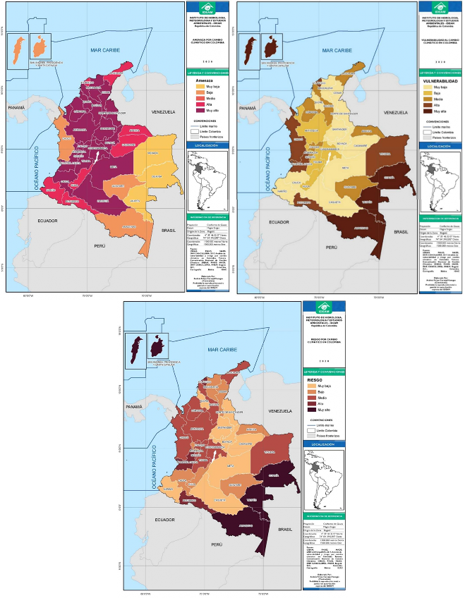
Annex A3. Reported support needs for Adaptation priorities
- Incorporation of adaptation to climate change in sectoral instruments, through the development of guidelines, tools and criteria that guide the management of adaptation in the sector to be applied to Land Use Plans, mitigable and non-mitigable high risk areas, and new buildings.
- Develop protection and conservation actions in 24 water supply basins in municipalities susceptible to shortages due to low rainfall season and rainy season.
- Develop structural and non-structural risk management actions for adaptation to climate change in 30% of the municipalities prioritized due to their susceptibility to shortages due to dry and rainy seasons.
- Reach 68% of the treatment of domestic urban wastewater.
- Reuse 10% of the domestic wastewater treated by the providers of the public aqueduct service.
- By 2030, adaptation actions will be formulated in disease prevention and health promotion, which contribute to reducing the cases of climate-sensitive diseases in 100% of the Territorial Entities in the health sector, at the departmental, district and municipal level of category 1, 2 and 3, and will be implemented in 40% of these.
- By 2030, 40% of the institutions that provide health services in the public sector will implement adaptation actions in the face of possible events associated with variability and climate change.
- "Strategic line of resilient infrastructure: By 2025, a sectoral planning instrument for hydrocarbons, one for coal mining and one for electrical energy have climate change guidelines aimed at ensuring comprehensive operating conditions under new scenarios of operational and environmental demands".
- "Strategic line of information for adaptation: By 2025 to have an updated climate risk analysis methodology, together with a strategy to update periodically at the national and business levels"
- "Strategic line of environmental management: By 2025, have an adaptation project based on ecosystems for the electricity sector that helps companies in the sector ensure the fulfillment of their strategic objectives."
- At least 10% of small, medium and large companies in the prioritized sectors have implemented strategies, actions or projects to adapt to climate change.
- Three (3) Tools implemented to improve the geographic information systems of the transport infrastructure for risk management.
- Two (2) technical guidelines documents prepared to carry out risk studies for transportation infrastructure.
- Policy for Disaster Risk Management - DRM and Adaptation to Climate Change - ACC formulated for the sector.
- Two (2) Methodologies for calculating the risk of transport infrastructure designed and implemented.
- Pilot project implemented for the applicability of the green road infrastructure guidelines.
- Include climate change considerations in planning instruments for the agricultural sector (PIGCCS) and implementation of adaptation actions.
- 10 agricultural subsectors (rice, corn, potatoes, beef cattle, dairy cattle, sugar cane, cocoa, bananas, coffee and sugar cane), will have improved capacities to adapt to climate variability and / or climate change.
- Three (3) natural regions of the country with the greatest agricultural potential (Andean, Caribbean and Orinoquía) participating in the agro-climatic technical tables articulated with the national table and one (1) million producers receiving agro-climatic information to facilitate decision-making in agricultural activities.
- By 2030, the country will have an Integrated Information System on Vulnerability, Risk and Adaptation to climate change (SIIVRA), which allows monitoring and evaluating adaptation to climate change in Colombia, articulated to the National Climate Change Information System (SNICC).
- 135 Watershed Management and Ordination Plans - POMCA formulated and / or adjusted with considerations of variability and climate change.
- Delimitation and protection of 100% of the paramos (37) of Colombia through management plans.
- 15% increase in the percentage of unrepresented or underrepresented ecosystems or ecosystem analysis units included in SINAP
- Increase of 18,000 hectares in the process of restoration, rehabilitation and / or ecological recovery in protected areas of the System of National Natural Parks and its areas of influence.
- Inclusion of climate change considerations in the instruments for environmental management and control of projects, works and / or activities under the jurisdiction of the National Environmental Licensing Authority as of 2020.
- Increase the percentage of the monitoring network with real-time transmission (from 24% to 35%) connected to early warning systems by 2030.
- 50% update and implementation of the "National Program for sustainable use, management and conservation of mangrove ecosystems" by 2030.
- Adoption and implementation of 100% of the Plans for the Management and Integrated Management of Coastal Environmental Units (POMIUAC) with ecosystem-based adaptation actions (EbA) on mangroves and seagrasses, and other coastal ecosystems.
- Six (6) climate change adaptation and risk management initiatives for the sustainable use of mangroves (blue carbon ecosystem) in implementation, with a deadline of 2030.
- By 2030, the country will inter-institutionalize the processes of forest fire risk management, risk awareness, risk reduction and disaster management, defining orientations and results with the management of climate change, through 7 strategies.
| NDC target number |
ector |
Subsector |
Title (of the activity, program or project) |
Description of the program / project |
Expected time period |
Stage within the technology development cycle
Mark the stage with an X |
Technology Type |
Intended use, impact and expected results |
| Basic investigation |
Applied research |
Technological development |
Innovation |
| 1 |
Ministry of Housing, City and Territory |
Vice Ministry of Water and Basic Sanitation |
Implementation of climate resilient technology and infrastructure |
Identify, promote and develop mechanisms aimed at increasing investments in structural actions for adaptation to climate change for the water and basic sanitation sector |
10
years |
|
|
X |
|
Infrastructure |
Increase the implementation of sustainable infrastructure in the provision of water, sewerage and climate-resilient public services |
| 6 |
MinHealth |
Health |
Design and implementation of an early warning system (EWS) for the health sector associated with climate variability. |
This project requires two phases: first, the baseline of those health events that have some relationship with climatic variables must be determined for each region of the country and, later, the second phase would already be formed in the design of a SAT, that generates early alerts in the country's territories, according to the possible increase in cases of health events that have some relationship with climatic variables. |
4
years |
|
|
X |
|
software |
Have mechanisms for identifying, analyzing and evaluating the risk of climate variability and risk scenarios for the definition of strategies and actions to reduce the cases of climate-sensitive diseases. |
| 6 |
MinHealth |
Health |
Design of a statistical tool that allows the analysis of information on climate-sensitive health events and supports public health surveillance actions for the Territorial Health Directorates (DTS). |
This activity aims to provide a tool with its respective operational guide, in order to guide the DTS in the analysis of information on climate-sensitive health events, and thus establish the historical behavior of such events in their territory. |
2
years |
|
|
X |
|
software |
Tool for conducting an analysis aimed at establishing measures for the prevention of climate-sensitive diseases and health promotion within the framework of adaptation to climate change. |
| 6 |
MinHealth |
Health |
Tool for monitoring and predicting Vector Borne Diseases. |
Adopt, validate and implement a vector-borne diseases monitoring and prediction tool , using climatic, socio-economic and vector transmission dynamics data, generating maps for decision-making in health. |
4
years |
|
|
X |
|
software |
It allows to have an input for territorial decision-making in surveillance and control of vector-borne diseases and to strengthen actions for disease prevention and health promotion. |
| 7 |
MinHealth |
Health |
Tool for the analysis of the vulnerability of the institutions that provide health services in the public sector to variability and climate change. |
Have a tool that contains the minimum variables to perform the vulnerability analysis of the institutions that provide health services in the public sector |
3
years |
|
|
X |
|
software |
Have the analysis of physical and economic vulnerability to climate change and variability at all stages of service provision. |
| 9 |
Ministry of Mines and Energy |
Electric Power - Hydrocarbons - |
Update of the climate risk analysis methodology |
Currently the methodology is developed for the national level, but not for the appropriation by the companies, therefore, it is initially required to update the climate risk analysis methodology and its subsequent socialization and dissemination among the different actors of the sector. |
1 year |
|
|
X |
X |
Knowledge |
The updating of the risk methodology will be validated by companies in the energy mining sector. |
| 10 |
Ministry of Mines and Energy |
Electric Power - Hydrocarbons - |
Benefits of EbA in the energy mining sector |
Quantification of ecosystem services for the energy mining sector. The definition of adaptation measures for the territory is already in place, but it is necessary to quantify the benefits for companies in the sector, due to the increased resilience of the ecosystems intervened. |
1 year |
|
X |
|
|
Knowledge |
Relationship between the benefits of Ecosystem-Based Adaptation for the profitability of the mining-energy industry |
| 11 |
MinCIT |
Industry |
Program to promote innovation with a focus on adaptation to climate change. |
Identification of specific projects and activities on technology and innovation issues that contribute to companies in their adaptation processes. |
1 year |
X |
X |
|
|
Does not apply |
Portfolio of measures and initiatives and projects for the transfer of knowledge to companies.
Definition of a national strategy to increase the introduction of technologies that support the adaptation to climate change of companies, taking into account their cost effectiveness and that include, among others, those focused on water use in the value chain of the sectors of greater vulnerability to climate change, and early warnings.
It is expected that, with the results of this phase, the program can be replicated and favor the evolution and transfer of applied research on the subject. |
| 11 |
MinCIT |
Industry |
Programs of incentives for access and process development, goods and services adaptation to climate change in the industry sector. |
Identification of tariff, commercial or regulatory bottlenecks in specific goods and services, including the promotion of processes and technology, that provide the company with improvements in terms of adaptation and provide possible solutions. |
1 year |
|
X |
|
|
Does not apply |
Lines of credit, regulatory changes, technical assistance, support for companies to acquire these goods and services. |
| 11 |
MinCIT |
Industry |
Calls with Ministries in climate change research for the industrial sector. |
Have the resources to design an annual call for applied research in adaptation of the industrial sector. |
5 years |
|
X |
|
|
Does not apply |
Projects for the transfer of knowledge to companies. Annual research products should be obtained, such as prospective plans, implementation of projects in the preliminary phase, information systems, or others. |
| 11 |
MinCIT |
Industry |
Geographic Information System (GIS) that is integrated into the PIGCCS monitoring, reporting and verification system - MRV. |
Conceptualization, design and implementation of the (GIS) in a web application that, takes into account the vulnerability of the sector, and the progress in the country's adaptation indicators. |
2.5 years |
|
|
X |
|
software |
Collect, make visible in time and space information applied to the adaptation of the industry sector, accessible to the different stakeholders for decision-making.
Integrated information system for decision-making on climate change in the industry and tourism sector in the medium and long term in the adaptation component. |
| 11 |
MinCIT |
Industry |
Design and implementation of a web page or application for the exchange and visibility of experiences in adaptation of the industry and tourism sector to climate change. |
Interactive web application on adaptation information for the industry sector that favors the strengthening of a business network around adaptation. |
1.5 years |
|
|
X |
|
software |
Web tool visible to the different actors |
| 12 |
MinTrans port |
Carter |
Tertiary road network georeferencing |
Georeferencing as a fundamental aspect for the analysis of geospatial data, the basis for the correct location of the map information and the proper fusion and comparison of data from different sensors in different spatial and temporal locations |
3 years |
x |
x |
x |
x |
To define |
Processing of satellite images for the analysis, intervention and monitoring of the sections where projects with adaptation and / or risk management actions are being implemented |
| 12 |
MinTransport |
River |
River network georeferencing |
x |
x |
x |
x |
To define |
| 12 |
MinTransport |
Iron |
Railroad network georeferencing |
x |
x |
x |
x |
To define |
| 12 |
MinTransport |
Carter |
Mobile application development |
Mobile applications designed to be executed on phones, tablets and other mobile devices , which allow road administrators and Territorial Directorates to provide information related to previously established variables to manage risk and enable actions to adapt to Climate Change, with the lowest rate of uncertainty |
3 years |
|
|
x |
x |
Android and IOS software |
Mobile application development to register emergencies and prevention requirements, in the construction of historical data and the generation of variables for calculating risk and / or monitoring the results of adaptation measures. |
| 12 |
MinTransport |
River Road, Railroad |
Web development for information consultation |
Improve the information repository so that, although in the background, it has an impeccable appearance, fast operation and good performance to allow the best user experience. |
3 years |
|
|
x |
x |
Android and IOS software |
Consultation of data and information to interested value groups. Data as a fundamental basis of information is currently consolidated, as a source for decision-making and needs to be managed to be effective, facilitating agile, timely and secure consultation by the
institutional value groups and their various areas. |
| 17 |
MinAgriculture |
All included in the PIGCCS Agricultural Sector |
Analysis of the results of the implementation of measures |
The implementation of measures needs an evaluation analysis including their cost-effectiveness. |
3 years |
|
X |
X |
|
Inclusion of financial analysis with a vision of sustainability within the production chains. |
The analysis of measures during and after their implementation allows supporting the comprehensive convenience of their implementation over the years so that producers can take them independently and thus adapt to climate change. |
| Improved methods for estimating and measuring water demand in the agricultural sector |
Measurements of the water footprint and consumption modules in different production systems will be carried out, determining the real demand in different territories, differentiated by their climatic and ecosystem characteristics . |
3 years |
|
X |
X |
X |
Instruments and systems for measuring and modeling water requirements. |
It is necessary to improve the estimation of the sector's water demand to improve its information, as well as to promote, design and apply incentives for its efficient use and reuse that contribute to the management of climate change. |
| Effects of climatic variables on changes in the distribution of pests and their impacts on production |
Specific studies that present the effects of climate change and variability in the appearance of new pests of economic importance in the agricultural sector and their behavior. |
4 years |
|
X |
X |
|
Specific studies and analyzes with field work. |
The studies are used to be able to act in the most appropriate way against the appearance or increase in incidence or severity of attack of pests associated with events of variability and climate change that may affect agricultural production . |
| 18 |
MinAgriculture |
Rice, corn, potatoes, beef cattle, dairy cattle, sugar cane, cocoa, bananas, coffee and sugar cane |
Identification of viable adaptation measures according to the subsector |
The identification of adaptation measures to be implemented will be based on the knowledge of the chains by technicians and producers and on the diversity of territories in which they can be applied. |
3 years |
|
X |
|
X |
N / A |
With the adequate identification of measures, there will be less uncertainty in the results of their implementation, more possibilities of replication in the producers and the sustainability of the adaptation measures against CC will be achieved, avoiding further deterioration of natural resources due to agricultural activities. |
| 20 |
MinAmbient |
Institutional arrangements
for information gathering |
Institutional arrangements for information gathering |
Institutional arrangements with the institutions that generate information so that their methodological instruments (censuses, surveys, administrative records) include questions or information related to the threat and vulnerability (sensitivity and capacity to adapt) to variability and climate change. |
5 years |
|
|
X |
|
Information system |
Concerted institutional arrangements that allow obtaining information related to vulnerability, risk and adaptation to climate change, based on the methodological instruments used by the entities in charge of generating information in this regard. |
| 20 |
MinAmbient |
Information systems interoperability |
Information systems interoperability |
Promote and arrange the interoperability of the information systems of social organizations |
5 years |
|
|
X |
|
Information system |
Achieve interoperability with the information systems of social organizations, which allows having territorial information on vulnerability, risk and adaptation to climate change |
| 21 |
MinAmbient |
Water |
Laboratory for geographic analysis |
Have a laboratory with the necessary equipment to process geographic data that relate the effects of climate variability and change in basin planning. |
2 years |
|
|
X |
|
Software; Equipment; Training and knowledge transfer |
Laboratory installed and in operation for geographic analysis at the basin level (processing of satellite images for the analysis of the points where projects with adaptation actions are being implemented) |
| 21 |
MinAmbient |
Water |
Strategy for the Incorporation of Climate Change in the POMCA |
Establish and define the guidelines and methodological route of the complementary studies required to incorporate the climate change component in the hydrographic basin management processes (POMCAS) |
2 years |
|
X |
|
|
Guidelines and Guides |
Dynamic subscaling at the hydrographic subzone level Configuration of additional scenarios related to climate change (Natural Ecosystems - Population - Productive Systems)
Hydrological - sedimentological and water quality modeling
Change in supply and demand
Risk management |
| 21 |
MinAmbient |
Water |
National Research Program for the Comprehensive Management of Water Resources |
Promote the management of projects that allow progress in understanding the effects of climate change on the availability of water resources |
4 years |
|
X |
|
|
Methodologies; Modeling for analysis of the effects of climate change on water availability. |
Validated models for the analysis of the effects of climate change on water availability and incorporated into IWRM. Application of results in decision making |
| 21 |
MinAmbient |
Water |
National Program for the Monitoring of Water Resources |
Formulation of Regional Institutional Water Monitoring programs - PIRMA |
4 years |
|
|
x |
|
Monitoring network designs; Installation and operation of Equipment; Protocols Disclosure and communication mechanisms |
Monitoring systems designed and in operation, which provide information in the different territories, for decision-making in relation to climate change. |
| 21 |
MinAmbient |
Water |
Water Resources Information System - SIRH |
Design and operation of the modules of instruments for planning hydrographic basins and administration of water resources |
2 years |
|
|
x |
|
Software; Equipment; Protocols; Training; Knowledge transfer |
Mechanisms for reporting, monitoring and evaluating basin planning and water resource management instruments.
Democratization of information on environmental determinants and basin planning performance in relation to climate change |
| 22 |
MinAmbient |
Directorate of Forests, Biodiversity and Ecosystem Services |
Development of spatial inputs for the integral management of the moors |
Have the necessary equipment so that Environmental Authorities can process geographic data and develop spatial models for the comprehensive management of the moors. |
2 years |
|
|
X |
|
Spatial geographic information systems. |
Processing of satellite images for the integral management of the moors that contributes to improving the information to develop adaptation actions, strengthen resilience and reduce vulnerability to climate change. |
| 22 |
MinAmbient |
Directorate of Forests, Biodiversity and Ecosystem Services |
Development of agricultural elements for reconversion. |
Innovation for the structuring of a technological package focused on the reconversion of agricultural activities in the páramos |
5 years |
|
|
|
X |
Technological Package for the productive reconversion of agricultural activities. |
Agricultural productive reconversion in the páramos as a measure of adaptation to climate change. |
| 22 |
MinAmbient |
Directorate of Forests, Biodiversity and Ecosystem Services |
Ecological restoration within the substitution of productive activities |
Innovation for the structuring of a technological package focused on the substitution of productive activities in the moors. |
5 years |
|
X |
|
|
Technology Package containing designs and strategies for ecological restoration with a view to replacing activities. |
Ecological restoration in the páramos as a measure of adaptation to climate change. |
| 22 |
MinAmbient |
Directorate of Forests, Biodiversity and Ecosystem Services |
Productive restoration within the substitution of productive activities |
Innovation for the structuring of a technological package focused on productive restoration as an alternative for the substitution of agricultural activities in the páramos. |
5 years |
|
X |
|
X |
Technological Package for the development and transformation of biodiversity products in the framework of productive restoration as an alternative to substitute activities. |
Development and transformation of biodiversity products in the páramos as an adaptation measure to climate change. |
| 24 |
MinAmbient |
PNNC |
Innovation for the propagation of plant species in high mountain ecosystems |
PNNC has been researching and developing learning around the propagation of species for several years , mainly in high mountain ecosystems, it is necessary to consolidate the technology developed, prepare operational documents, carry out large-scale applications and disseminate results. |
2 years |
|
|
|
X |
|
Consolidating the processes for the propagation of species will facilitate the implementation of large-scale ecological restoration processes and the dissemination of results can position the country as an expert and advisor on the matter. |
| 25 |
MinAmbient |
|
Design of a spatial analysis tool for monitoring adaptation and mitigation measures for projects that include licensing. |
Have the spatial identification of adaptation and mitigation measures of projects that comply with the obligation |
2 years |
|
|
X |
|
Spatial analysis tool |
Location, monitoring and follow-up of compliance with the incorporation of climate change in licensing allows spatial analysis of the adaptation or mitigation measures implemented by the projects in their environmental management and control instrument. |
| 25 |
MinAmbient |
|
Propose the design of the internal information monitoring system and propose an articulation plan with climate change information systems |
Propose an internal system for monitoring and articulating climate change information that provides tools for both users and professionals to define impact indicators around the incorporation of change
climate in licensing. |
|
|
X |
|
|
Monitoring system |
The internal system of articulation of climate change information will allow identifying the use of information by actors such as the Ministry of Environment and Sustainable Development and / or IDEAM in compliance with the National Policy on Climate Change, as well as other
options. |
| 26 |
MinAmbiente / Presidency |
Disaster Risk Management and Environment |
Calibration Laboratory for Electronic and Conventional Climatological Instruments |
Modernization of the calibration and maintenance processes of the sensors and equipment that make up the hydrometeorological network. |
5 years |
|
|
X |
X |
Software and equipment |
Strengthening of the calibration programs for the instruments of the Hydrometeorological Network, in order to guarantee the traceability and quality of the data generated in it.
Greater agility in maintenance that results in data reliability for fewer out-of-service stations.
Guarantee the continuity and quality of the data series for monitoring climate change. |
| 27 |
MinAmbient |
Marine-coastal areas |
Strengthening of the "Information system for the integral management of mangroves in Colombia" |
Strengthen, implement and adopt the "Information System for the integral management of mangroves in Colombia " for adequate decision making |
3 years |
|
|
X |
|
Information system (portal and |
The environmental authorities (twelve autonomous and sustainable development corporations, and four public environmental establishments ) report on the management of mangroves in SIGMA, and are based on it for decision-making, which results in more efficient measures and effective for adaptation to climate change. |
| 28 |
MinAmbient |
Marine-coastal areas |
Update of blue carbon ecosystem coverage |
Determination of mangrove and seagrass covers in the coastal environmental units of the Caribbean and Colombian Pacific. |
18 months |
x |
x |
x |
x |
Geographic information systems and software |
Processing of satellite images and application of a methodology articulated with IDEAM for updating the coverage of blue carbon ecosystems. |
| 29 |
MinAmbient |
Marine-coastal areas |
Development of a technological platform for the recording of M&E results of blue carbon initiatives for adaptation |
Development of a module for recording the results of monitoring and evaluation (M&E) of initiatives to adapt to climate change or using mangroves and seagrasses (blue carbon ecosystems) in the marine environmental information systems (SIAM) of Colombia, interoperable with the Information System for Vulnerability, Risk and Adaptation (SIVRA) and the National System of Climate Change (SNCC). |
2 years |
|
|
X |
|
Virtual platform for data and information registration; Interoperability between systems |
Use of the technological platform for the recording, processing and analysis of information, and the reporting of results achieved through the M&E schemes of initiatives for adaptation to climate change implemented in blue carbon ecosystems. |
| 29 |
MinAmbient |
Marine-coastal areas |
Research program for the conservation and sustainable use of mangroves and seagrasses for the management of climate change |
Basic and applied sciences program for the creation of knowledge on the role that mangrove and seagrass ecosystems have in the territories for adaptation to climate change and risk management, while progressing in the construction of knowledge local over these ecosystems as potential carbon reservoirs of importance for their conservation and use of other ecosystem services. |
3 years |
X |
X |
|
|
Advanced research program |
The program encourages the creation of new lines of research that allow the development of new technologies supported by the attributes of marine-coastal biodiversity that are strategic for adaptation to climate change and the generation of additional benefits for GHG mitigation. |
| 29 |
MinAmbient |
Marine-coastal areas |
Creation of a subsystem for monitoring and evaluation of initiatives for adaptation to climate change in mangrove and seagrass areas |
Create a monitoring and evaluation (M&E) subsystem of initiatives (programs and projects) for adaptation to climate change using or being implemented in marine and coastal ecosystems, with particular emphasis on mangroves and seagrasses. This must be articulated and integrated, and also must be interoperable , with the national monitoring and evaluation system. |
2 years |
|
|
x |
|
Technological development |
The system must allow articulation of actors coastal marine of jurisdiction (institutes affiliated research System National Environmental - SINA, Regional Autonomous Corporations and Sustainable Development - CAR, Public Establishments Environmental - EPA, Ministry of Environment and Desarroll or Sustainable) in order to establish criteria, methodologies for the Monitoring and Evaluation of adaptation, and procedures for the management of data and information for decision-making and feedback to the comprehensive territorial and sectoral climate change management plans . |
| 30 |
MinAmbient |
Disaster Risk Management, Climate Change and Forests |
Information systems for the verification of active forest fires through remote sensors. |
Implementation of an information system that identifies active forest fires from hot spots. It includes access to satellite systems, remote sensors and drones. |
10 years |
|
|
X |
X |
Software and equipment |
Strengthening of institutions in the identification of forest fires and the implementation of early warning systems.
Better time of action in the management of forest fires from the use of technology, this allows to anticipate and act in the face of possible risks generated. Additional data may be available to feed tools that can be included in the management of climate change. |
| 30 |
MinAmbient |
Disaster Risk Management, Climate Change and Forests. |
Modeling system based on heat points and making susceptibility maps. |
Identification of areas sensitive to vegetation cover fires at the municipal level. |
10 years |
|
|
X |
X |
Software and equipment |
Institutional strengthening for the development of cartography of susceptibility of ecosystems to forest fires.
Generation of maps by regions with the highest annual incidence of fires (heat sources) with daily data, which allows managing actions for the prevention of forest fires.
The information obtained can be used for inventories of loss of vegetation cover and measure the effects of forest fires such as the release of carbon into the atmosphere. |
| NDC Goal Number |
Sector |
Subsector |
Title (of the activity, program or project) |
Description of the program / project; |
Expected time period |
Intended use, impact and expected results |
| 1 |
Housing, City and Territory |
Housing, City and Territory |
Interinstitutional Strengthening |
The strategy for inter-institutional strengthening in the adaptation component is focused on providing technical assistance to municipalities and regions to improve local capacities in terms of adaptation, risk management, resettlement processes, management of liberated areas and adaptation criteria. of buildings in the face of climate change. |
5 years |
Given that the adaptation measures are in the formulation stage, the participation of the actors who have interference in the aforementioned issues is of vital importance for the generation of practical, effective and useful tools for the territorial entities, it is a transversal process to all activities for the fulfillment of adaptation goals. |
| 3 |
Ministry of Housing, City and Territory |
Vice Ministry of Water and Basic Sanitation |
Strengthen the management of knowledge in adaptation to climate change of the providers of public services of aqueduct, sewerage and cleaning and territorial entities |
Strengthen the management of knowledge of adaptation to climate change among providers and territorial entities, to facilitate decision-making at the local and national level regarding the management of the negative and positive impacts of climate change and variability, in such a way that the vulnerability of the sector is reduced and / or its resilience is increased |
10 years |
The measure seeks to influence knowledge management of all stages of the sector's value chains, which has an impact at the national, regional and local levels. The measure seeks to include the homologation of DRM issues with the ACC, in such a way that all actors in the sector have clear guidelines and criteria for decision-making; This includes a strengthening of socialization and technical assistance, from the generation of technical information to a greater detail of climate change related to the sector |
| 4 |
Ministry of Housing, City and Territory |
Vice Ministry of Water and Basic Sanitation |
Generation of regulatory, technical and financial enablers in wastewater management through the interministerial agenda |
Identify the possible impacts and opportunities in the provision of the public sewerage service under the different climate change scenarios through exchanges of successful project experiences with sector experts |
3 years |
Strengthen the knowledge management process in adaptation to climate change for the sector, through the identification and understanding of the relationship that may exist between present and future climate variability and change and the functioning of the systems for the provision of sewer service; in addition to the generation of inventories and diagnoses at the national level of the current infrastructure for the provision of the sewerage service. |
| 5 |
Ministry of Housing, City and Territory |
Vice Ministry of Water and Basic Sanitation |
Improve knowledge about the potential in the reuse of domestic wastewater (MinAmbiente - MinVivienda) |
Identify the impacts and opportunities that the implementation of the reuse of treated wastewater can generate against the assurance of the efficient provision of domestic public services |
10 years |
From the implementation of pilots and the preparation of economic and environmental studies, assess the short and long-term cost that providers could assume (administrative procedures, investment in technology and operation) when implementing the reuse of treated water.
Likewise, evaluate the economic and administrative outlook of not implementing reuse for providers in situations of water shortage and / or contamination of sources increased by the effects of variability and CC |
| 6 |
MinHealth |
Health |
Program for building capacities in the climate and health component aimed at the country's territories. |
Capacity building to strengthen the analysis of climate-sensitive diseases in the context of each territory and, in this way, identify the resources for characterization, measurement and analysis of the profile of climate-sensitive diseases according to the territorial context. |
2 years |
Strengthening the capacities of human talent makes it possible to strengthen the analysis of climate-sensitive diseases in the context of each territory, to guide the decision-making of the actors involved. |
| 6/7 |
MinHealth |
Health |
Program for the construction of capacities in the climate and health component aimed at the Ministry of Health. |
Building capacities to strengthen the analysis of climate-sensitive diseases in the context of each territory and the adaptation actions that must be taken into account according to the possible occurrence of extreme climatic events, in order to be taken into account in the formulation of public politics. |
2 years |
It allows to strengthen the planning and the elaboration of public policies, from the different areas of the Ministry of Health, including the component of climate variability and climate change in those that are considered necessary. |
| 7 |
MinHealth |
Health |
Exchange of experiences with countries that are implementing adaptation measures in the provision of health services. |
Exchange of experiences and lessons learned in the framework of the implementation of adaptation actions implemented in the provision of the health service and that can be replicated in the country and support the implementation of the adaptation component of the Comprehensive Climate Change Management Plan of the Health Sector - PIGCCS. |
2 years |
Knowing about successful experiences allows us to identify the routes of action to generate incentives for the private sector to implement adaptation measures. |
| 10 |
Mines and Energy |
Energy miner |
Intersectoral tables for work in the territory |
Intersectoral work is required, mainly with the Ministry of Environment and Sustainable Development and sustainable authorities. |
6 months |
Given the vision of reducing social conflict that can be generated by the changing climate together with the activities of the sector, an instance is required in which the territorial actors articulate with the State institutions, but not with a single sector. Therefore, it is advisable to define the different socioeconomic activities of the territory and under the same objective of increasing the sustainability of the territory, to ensure the availability of resources for all socioeconomic activities; Based on this, the local actors and national institutions that must have a presence in the established instance will be defined. |
| 11 |
MinCIT |
Industry |
Taking advantage of international agreements on assistance and cooperation in order to strengthen the mechanisms for exchanging experiences with countries that are implementing adaptation measures in the industry and tourism sector through the private sector. |
Exchange of successful experiences in the framework of the implementation of adaptation actions financed by the private sector that can be replicated in the country. |
6 months |
Knowing about successful experiences allows us to identify the routes of action for the generation of incentives for the private sector to implement adaptation measures. |
| 11 |
MinCIT |
Industry |
Technical assistance and capacity building for the development of a national climate finance strategy that includes, in particular, the industry and tourism sectors. |
To overcome the current limitation of financing resources for climate action and enable the operation and capitalization of the country's national climate change fund, through the determination of financial costs and investment needs for the implementation of our NDC; the identification of a series of financing resources (international, national, public and private) and to give particular importance to the public budget for climate action and ensure its sustainability over time. |
2 years |
Preparation of the national sectoral climate finance strategy |
| 11 |
MinCIT |
Industry |
Design and implementation of a portfolio of adaptation measures for the industry and tourism sector. |
Prioritization of sectors according to their vulnerability to climate change, including social and economic variables. Design and implementation of a group of viable measures for the productive processes most vulnerable to climate change, based on a cost-benefit analysis of investments and opportunities, conditioned to the territory and the hydroclimatological risks they face. |
1 year |
Facilitate the progress of the implementation of measures (actions and adaptation strategies of the industry and tourism sector in terms of the efficient use of resources, such as water, energy, etc., integrating adaptation schemes based on technologies, communities, ecosystems and infrastructure. |
| 11 |
MinCIT |
Industry |
Design and implementation of a comprehensive program for the CIT sector to strengthen capacities in climate risk management and adaptation of the industry and tourism sector as a factor of sustainability and competitiveness. |
Program that incorporates different mechanisms of the CIT sector to strengthen capacities and transfer of knowledge to the different actors (internal and external) of the sector in terms of: 1) Understanding how to measure vulnerability to climate change and the importance of climate change adaptation sector, the measures applicable to the industry from local, national and international experiences. 2) The environmental, economic and social benefits of the efficient use of resources, especially water, energy, raw materials of natural origin in value chains. The benefits of reducing vulnerability to climate change in production processes . 3) Knowledge of the portfolio of adaptation measures, the strategies to manage climate irrigation in the industry, and the reduction of dependency or closing of cycles in the use of natural resources. 4) The existing methods, mechanisms and instruments for the implementation of adaptation strategies, actions or projects. |
2 years |
Strengthen the sustainable development of the industry and tourism sector, through the creation of capacities to recognize the impacts and opportunities of climate change as a factor of productivity and competitiveness, overcome gaps and gaps for decision-making that promote transformation actions and strategies towards a climate resilient sector. |
| 11 |
MinCIT |
Industry |
Study of macroeconomic impacts of frequent events (droughts, floods) of climate change on the industrial sector in Colombia and prospects. |
Study that integrates the economic and climate change variables of the sector, provides sectoral prospects and productivity and competitiveness indicators |
1 year |
Provide base scenarios for public policy decision-making in terms of helping to increase the capacities of companies to bring climate change to the center of company decision-making. |
| 11 |
MinCIT |
Industry |
Technical assistance for companies to incorporate climate risk into their operational risk matrices and take advantage of the opportunities of climate variability and change. |
Program to support the industry in the identification of its hydroclimatological risks. |
2 years |
Design and implement tools and incentives to bring climate change to the center of business decision-making. |
| 13/15 |
MinTransport |
Road, River, Rail, Air |
Strengthening of early warnings - Generation of knowledge |
Have personnel trained in GIS to support IDEAM, in order to improve knowledge of the hydrometeorological conditions associated with the Transport infrastructure |
2 years |
With the personnel specialized in GIS that supports IDEAM, the Transport sector will be able to have information on a better scale (more local scale) to provide the climatological variables required to incorporate the methodologies under development for analysis of the Risk due to mass movements and flooding (variables triggers associated with climate variations) |
| 13/15 |
MinTransport |
Carter, aerial |
Generation of technical guidelines to carry out risk studies in transport infrastructure (road and air) and a methodological guide with a multi - threat approach for the quantitative calculation of Risk in road infrastructure |
Technical assistance for the development of guidelines applicable to various interested value groups: municipalities, departments, concessionaires in charge of this type of infrastructure
Technical assistance for the structuring of a methodology based on the progress obtained and specifying the holistic vision required by the subject. |
2 years |
The processes of co-creation of the methodologies through institutional strengthening processes will make it possible to have personnel with the necessary knowledge to understand the processes for identifying impacts and their subsequent application and monitoring for projects developed in the sector. |
| 19 |
MinAgriculture |
Agricultural |
Strengthening of local capacities |
Strengthening of local capacities through Training and / or Workshops on topics related to: Agroclimatic Literacy ∗ Interpretation and proper use of information ∗ Concepts related to probability, uncertainty, climate variability. Information on environmental alerts, in risk areas, basic knowledge and tools to interpret climate data, etc., the above in accordance with the dynamics of the regions where the agroclimatic technical tables are in operation. |
3 years |
Installed capacity to achieve the governance and sustainability of the Agroclimatic Technical Tables. |
| 22 |
MinAmbient |
Directorate of Forests, Biodiversity and Ecosystem Services |
Exchange of experiences with countries that are implementing measures to adapt to climate change in the agricultural sector in the páramos. |
Exchange of successful experiences in the framework of the implementation of actions to adapt to climate change in the agricultural sector in the moorlands that can be replicated in the country. |
1 year |
Learn about successful experiences in the implementation of adaptation measures to climate change in the agricultural sector in the páramos. |
| 22 |
MinAmbient |
Directorate of Forests, Biodiversity and Ecosystem Services |
Technical assistance and capacity building for the development of a national strategy on climate finance for páramo producers in transition towards sustainable and agro-ecological schemes. |
Identification of mechanisms, strategies or schemes for financing (international, national, public and private) that recognize the climate action of agricultural producers in the páramos in transition towards sustainable and agroecological schemes and ensure their sustainability over time.
Likewise, it is necessary to strengthen the existing schemes for the financing of activities in the páramos in accordance with current regulations, as well as provide new schemes and tools for those inhabitants of the páramo who carry out reconversion and substitution of agricultural activities. |
2 years |
Develop a national climate financing strategy for páramo producers in transition to sustainable and agroecological schemes and articulate it with existing payment schemes, which contributes to improving adaptation capacity and reducing vulnerability to climate change. |
| 22 |
MinAmbient |
Directorate of Forests, Biodiversity and Ecosystem Services |
Capacity building for the development of a national strategy on climate finance for the replacement and relocation of small traditional miners in the páramos. |
Capacity building to create financing strategies, schemes or mechanisms that recognize the climate action of the small traditional miners of the páramos that replace mining activities with more sustainable ones. Likewise, it is necessary to strengthen the existing schemes for financing activities in the páramos in accordance with current regulations, as well as provide new schemes and tools for those inhabitants of the páramo who carry out substitution activities for small traditional mining. |
2 years |
Develop a national climate finance strategy for the replacement and relocation of small traditional miners in the páramos, which contributes to improving the capacity for adaptation and reducing vulnerability to climate change. |
| 22 |
MinAmbient |
Directorate of Forests, Biodiversity and Services |
Capacity building for participatory implementation of the High Mountain Monitoring Strategy - EMA |
Capacity building to implement the Alta - EMA Monitoring Strategy in the framework of environmental governance in a participatory manner with the inhabitants of the páramos. |
1 year |
Capacity building to implement the Alta - EMA Monitoring Strategy in a participatory way with the inhabitants of the páramos within the framework of governance and based on the dialogue of knowledge, which allows to improve the adaptation capacity and reduce vulnerability to change climate. |
| 23 |
MinAmbient |
PNNC |
Strengthening the capacities of environmental authorities |
Technical strengthening of teams of environmental authorities on issues related to the route for the declaration of protected areas of SINAP Virtual diploma in application of technical criteria (biophysical includes analysis of representativeness, socio-economic and cultural) for the design of protected areas based on of the different phases identified in the route. |
3 years |
Environmental authorities strengthened in the implementation of the route for the declaration of protected areas, this will contribute to the consolidation of the declaration processes and the increase of the ecosystem units represented in the SINAP, which will increase the adaptive capacity of the territories in the face of climate risk. |
| 25 |
MinAmbient |
|
Development of dissemination elements and communication tools with stakeholders on climate change considerations in licensing |
Develop communication elements, information dissemination and communication tools with stakeholders on climate change considerations in licensing. |
1 year |
Information communication activities in order to provide simple and practical technical elements to users on the internal processes for incorporating climate change in licensing. Identify elements of dissemination and assertive communication for ANLA stakeholders related to the climate change goal |
| 26 |
MinAmbiente / Presidency |
Disaster Risk Management and Environment |
Technical assistance and capacity building for the modernization of the processes of acquisition, maintenance and calibration of the instruments that make up the Hydrometeorological Network. |
It is necessary to advance in the development of training tools and knowledge transfer in the different technological, operational and conceptual processes, which support the acquisition, calibration and maintenance of the instruments that are part of the hydrometeorological stations that make up the Network. |
5 years |
Generate a national recurrent training strategy that allows having trained human resources for the processes of acquisition, calibration and maintenance of instruments, transversal to the different Institutions that carry out hydrometeorological monitoring in the country and / or that are part of the National System for the Disaster Risk Management. In order to guarantee the continuity and quality of the data that allow the monitoring of climate change and the monitoring of extreme events of hydrometeorological origin. |
| 26 |
MinAmbiente / Presidency |
Disaster Risk Management and Environment |
Technical assistance and capacity building for the development of a national strategy for financing hydrometeorological monitoring. |
Transversal strategy for the institutional sectors (public and private) users of hydrometeorological information, including the identification of the structure of operating, investment and maintenance costs required to fulfill the proposed goal, in order to identify possible sources of resources. of financing (international, national, public and private), and to establish joint activities that allow to give sustainability to the Hydrometeorological Network in time. |
5 years |
Generation of a national strategy for the generation of hydrometeorological information that allows having trained human resources as a fundamental input for the different activities of the Society and the Institutions. In order to guarantee the continuity and quality of the data that allow the monitoring of climate change and the monitoring of extreme events of hydrometeorological origin. |
| 26 |
MinAmbiente / Presidency |
Disaster Risk Management and Environment |
Technical assistance and capacity building at local and regional levels for the management of information from the hydrometeorological monitoring networks. |
Building and strengthening capacities in Departmental and Municipal entities, Regional Autonomous Corporations and local communities to recognize the benefits and needs of having early warning systems for hydrometeorological events that provide information to reduce the vulnerability of the territories |
10 years |
Territorial and local actors recognize and appropriate the importance of having early warning systems for extreme hydrometeorological events and in understanding and analyzing information from hydrometeorological networks, as a strategy to reduce the vulnerability of territories and communities. Increased capacity to install instruments connected to the national level to improve the implementation of early warning systems in Colombia. |
| 27 |
MinAmbient |
Marine-coastal areas |
Network for community governance and research on traditional knowledge in mangroves in Colombia |
Design, consolidate and implement a mangrove governance network that allows consolidating the forms of self-government in the mangrove.
Encourage, promote, consolidate and evaluate the community's own research that has traditionally been related to the mangrove for the sustainable use of ecosystem goods and services. |
4 years |
Governance instances of ethnic minorities (black and indigenous communities) strengthened and in operation for the integral management of the mangrove ecosystem.
Knowledge |
| 27 |
MinAmbi ent |
Marine-coastal areas |
Landscape-level mangrove restoration |
Design, implement and monitor restoration actions for deforested and degraded mangroves on the Colombian coast |
4 years |
1000 hectares of mangroves under restoration as a measure of adaptation to climate change, both for the mangrove and for the communities that are related to it |
| 28 |
MinAmbient |
Marine-coastal areas |
Capacity development for the formulation of strategies for adaptation to climate change (under the EbA approach) in coastal areas aimed at coastal environmental authorities. |
Strengthen the institutional capacity of environmental authorities to facilitate the implementation of EbA actions in the Coastal Environmental Units. |
2 years |
Develop skills and competencies in the staff of environmental authorities for the implementation and monitoring of EbA actions on blue carbon ecosystems that allows the formation of a community of practice |
| 28 |
MinAmbie nte |
Marine-coastal areas |
Program for the development of community capacities in EbA in priority coastal areas |
Link local communities in training processes for EbA in the framework of the implementation of the POMIUAC. |
5 years |
Promote informed and experienced communities to form a network of extension agents that allows replicating knowledge and experiences among the coastal communities of the country. |
| 29 |
MinAmbient |
Marine-coastal areas |
Make a portfolio of Climate Solutions based on Nature using mangroves and seagrasses for adaptation |
Exchange of successful experiences for the development of a Portfolio of Climate Solutions based on Nature (SCbN) as an option for adaptation to climate change using marine and coastal biodiversity, with special emphasis on mangrove and seagrass ecosystems, built in the context of the marine-coastal regions of Colombia. |
1 year |
Have a portfolio that facilitates the formulation and implementation of climate change adaptation initiatives through SCbN applicable to the marine and coastal areas of the Pacific, Caribbean and Insular regions of Colombia, contributing to the increase of their resilience and reduction of vulnerability facing the adverse effects of climate change. |
| 29 |
MinAmbient |
Marine-coastal areas |
Development of local capacities in climate change, blue carbon and adaptation based on ecosystems aimed at environmental authorities with jurisdiction in the marine and coastal zone |
Training and preparation program for the formulation and implementation of initiatives for adaptation to climate change using mangrove ecosystems and seagrasses aimed at Regional Autonomous Corporations and for Sustainable Development - CAR, Environmental Public Establishments - EPA, Mayors and departments with coastal jurisdiction. |
1 year |
The human talent of the institutions and environmental authorities of the coastal marine territory will be prepared to formulate adaptation initiatives according to their risk scenarios associated with climate change and climate variability in mangrove areas and seagrasses, among other marine-coastal ecosystems to increase their resilience. Human talent will be trained to prioritize territorial resources for adaptation and will be prepared to manage national and international resources to co-finance the adaptation initiatives that they formulate. |
| 30 |
MinAmbient |
Disaster Risk Management, Climate Change and Forests |
Technical assistance for the application of protocols in order to make maps of forest fire risk zoning with the Environmental Authorities. |
It is necessary to carry out together with the environmental authorities the construction of capacities in the application of protocols for the elaboration of the maps of zoning of risks to forest fires and the maps of susceptibility of regional ecosystems. |
Permanent |
Generation of maps of ecosystem susceptibility and application of protocols for the zoning of risks to forest fires.
It is expected from the generation of knowledge to be able to articulate the results with the national procedures for the management of forest fires in the national territory (knowledge of risk, risk reduction and disaster management) and to be able to feed the inventory of measures of adaptation to climate change. |
| 30 |
MinAmbient |
Disaster Risk Management, Climate Change and Forests |
Technical assistance and capacity building in the National Technical Advisory Commission for forest fires, for the development of national strategies for financing forest fire management. |
Cross-cutting strategy with the sectors that make up the National Technical Advisory Commission for responsible forest fires and users of the information, investment and operationalization of the strategies presented in the proposed goal, for the development of joint activities in risk management for forest fires. |
10 years |
Strategies, procedures and protocols developed within the framework of the National Technical Advisory Commission for forest fires, for the strengthening of national and territorial capacities in managing the risk of forest fires.
Inputs are generated for climate change management, especially inventories of climate change adaptation measures within which measures with nature-based solutions (NBS) can be prioritized. |
| 30 |
MinAmbient |
Disaster Risk Management, Climate Change and Forests |
Technical assistance and capacity building at local and regional levels for the application of the strategies proposed in the goal of forest fires through technology transfer and the development of procedures and protocols. |
Strengthening capacities at regional and local levels, Environmental Authorities and communities for the development of monitoring strategies, early warning systems and application of protocols and procedures for the management of forest fires through knowledge of risk, risk reduction and disaster management. |
10 years |
Processes and protocols adopted, developed and appropriate by departmental, municipal and community actors for disaster risk management due to fires.
Capacities installed in the territories for the development of procedures, protocols and actions in risk management for forest fires. Generation of information for the analysis of the behavior of forest fires and their relationship with climate variability and climate change. |
| NDC Goal Number |
Sector |
Subsector |
Title (of the activity, program or project) |
Description of the program / project |
Estimated amount |
Expected time period |
Expected financial instrument (grant, concessional loan (concessional), unfavorable loan (non-concessional), capital, guarantee, or other) |
Contribution to Technology Transfer [YES or NO] |
Contribution to Capacity Building [YES or NO] |
Intended use, impact and estimated results |
| Local Currency (Pesos) COP |
USD |
| 1 |
Ministry of Housing City and Territory |
Housing City and Territory |
Adaptation guidelines to climate change articulated with risk management, to be incorporated into the POT |
The definition of adaptation guidelines to climate change and their corresponding articulation with those that already exist in the area of disaster risk management in the country, constitute an opportunity to advance in the generation of integrative conceptual and methodological agreements that allow incorporating these elements in the POT.
The definition of these guidelines requires a consultancy that at least includes the following components:
- Analyze and articulate the existing inputs produced by the different national and territorial entities to incorporate guidelines on risk management and / or climate change in the Territorial Organization Plans - POT.
- Definition of the analysis methodology for the identification of critical points, the formulation of adaptation guidelines to climate change and the implementation mechanisms.
- Definition of the terms that allow standardizing, integrating or differentiating, as the case may be, concepts and scope of Disaster Risk Management and Adaptation to Climate Change within the framework of land use planning.
- Definition of the critical points of land use planning and adaptation to climate change
- Formulate the guidelines for adaptation to climate change articulated at the national, regional and local levels with disaster risk management to be incorporated into the Land Use Plans
- Establish the mechanisms for implementing the guidelines for adaptation to climate change to be incorporated into the Land Use Plans
Generation of the technical document with guidelines for adaptation to climate change articulated at the national, regional and local levels with disaster risk management to be incorporated into land use planning plans. |
2,335,974,113 |
630,000 |
2 years |
Donation |
YES |
YES |
Contract a consulting study for the generation of adaptation guidelines articulated with risk management, to be incorporated into the POT. |
| 1 |
Ministry of Housing City and Territory |
Housing City and Territory |
Adaptation guidelines for settlements in areas of high mitigable risk |
The adaptation guidelines for settlements in areas of high mitigable risk aim to provide municipalities with tools for the formulation of short, medium and long-term strategies that allow progress towards the consolidation of more resilient settlements in the most vulnerable areas of the municipality.
- Definition of the analysis methodology for the formulation of the considerations
- Define climate change considerations to be included in the Plan for settlements in mitigable high risk areas
Formulation of the Plan for the adaptation of settlements in areas of high mitigable risk, as well as the procedure for its implementation. |
1,371,647,601 |
370,000 |
2 years |
Donation |
YES |
YES |
Contract a consulting study for the generation of adaptation guidelines for settlements in areas of high mitigable risk. |
| 1 |
Housing City and Territory |
Housing City and Territory |
Legal and technical tools for the release and protection of areas with non-mitigable high risk conditions |
The definition of legal and technical tools for the release and protection of areas with a high non-mitigable risk condition that allow preventing the generation of risks associated with climate change and consolidating areas that increase the adaptation capacity of municipalities |
or Estimate |
To define |
To estimate |
To define |
Yes |
YES |
Hire a consulting study to generate legal and technical tools for the release and protection of areas with a high risk condition that cannot be mitigated |
| 1 |
Ministry of Housing City and Territory |
Housing City and Territory |
Criteria for adaptation to climate change applicable to new buildings |
The formulation of adaptation criteria to climate change applicable to new buildings is intended to generate measures from the design stage that take into account the local variability of future climate conditions and whose analysis is reflected in the design stage and construction; measure, which must be articulated and promoted with the national bank, allowing the generation of preferential rates for houses that are built or acquired with adaptation criteria.
For the formulation of these criteria, the hiring of a consultancy is required that at least carries out the following activities:
- Analysis and evaluation of the negative impacts on housing due to hydroclimatological threats that can be reduced with adaptation measures
- Definition of criteria that guarantee improvements in habitability according to the results of the analysis of the negative impacts on homes due to hydroclimatological threats
- Definition and selection of constructive adaptation specifications applicable to new homes for the design and construction stages
- Generate a guide or instructions for the implementation of the defined adaptation criteria and constructive specifications |
1,355,396,468 |
365,000 |
2 years |
Donation |
YES |
YES |
Contract a consultancy study for the generation of adaptation criteria to climate change applicable to new buildings. |
| two |
Ministry of Housing, City and Territory |
Vice Ministry of Water and Basic Sanitation |
Implementation of pilot projects for the conservation, protection and / or management of supplying basins. |
Implement at least six (6) pilot projects for conservation, protection or management in the watersheds and / or supply sources of municipalities most susceptible to water shortages and carry out their monitoring in order to evaluate their effectiveness and replicability. |
$ 2,286,748,296 |
620,623.49 |
4 years |
Donations, Capital |
YES |
YES |
It seeks to develop activities for the protection, restoration and reconversion of productive systems, seeking representativeness of projects with purchase and without purchase of properties, which allow the assurance of water resources for populations in basins susceptible to water shortages. |
| 4 |
Ministry of Housing, City |
Vice Ministry of Water and |
Optimization of domestic wastewater treatment systems |
Optimization of current and projected Municipal Wastewater Treatment Systems with sustainable infrastructure guidelines capable of facing the challenges of present and future variability and climate change. |
$ 360,540,962 |
97,868.12 |
10 years |
Donations, Capital |
YES |
YES |
Based on the prioritization carried out by the SAVER program, optimize or build sustainable infrastructure capable of facing the challenges of climate change; as well as managing information about technology that facilitates adaptation. |
| 6 |
MinHealth |
Health |
Identify and establish financing mechanisms for the implementation of adaptation measures to climate change from public health by the Territorial Health Directorates. |
Funding mechanisms must be identified and established to implement adaptation measures, from disease prevention and health promotion, aimed at reducing the possible health effects of climate-sensitive diseases. |
In estimate |
|
3 years |
Donation |
YES |
YES |
Through the established financing mechanisms, it is intended to reduce the vulnerability of the territories to the increase in cases of considerable diseases that are sensitive to climate variations and climate change. |
| 7 |
MinHealth |
Health |
Identify and establish financing mechanisms for the implementation of adaptation measures to climate change by the institutions that provide health services. |
Funding mechanisms must be identified and established to implement adaptation measures in the different IPS of the country, in preparation for the possible impacts associated with the occurrence of extreme weather events. |
In estimate |
|
5 years |
Donation |
YES |
YES |
Through the established financing mechanisms, the intention is to reduce the vulnerability of the country's IPS to the impacts of climate variability and change. |
| 9 |
Mines and Energy |
Electric power |
AbE measure for the electric power sector |
Implementation of an adaptation measure based on ecosystems in a contributing basin of a hydroelectric plant |
760,000,000 |
200,000 |
2 years |
Capital |
DO NOT |
YES |
Implementation of a pilot project, with potential for replication at the national level for the electric power generation sector, in such a way as to reduce the vulnerability of the sector, ensuring the continuity and competitiveness of the generation of electric power with water sources in scenarios of water shortage, progressive increase in temperatures and / or progressive reduction of rainfall. |
| 11 |
MinCIT |
Industry |
Implementation of the comprehensive program of capacity building in adaptation of the industry and tourism sector |
Implementation of the sector capacity building program on issues of adaptation to climate change. |
500,000,000 |
130,600 |
2 years |
Donation |
DO NOT |
YES |
Through the implementation of the sector capacities program, better results will be obtained in the analysis of information related to vulnerability and risk for the sector, which contributes to contribute with inputs for decision-making in the sector. |
| 11 |
MinCIT |
Industry |
Implementation of science and technology actions in adaptation of the industry and tourism sector. |
Development and transfer of technology on issues of adaptation to climate change for the sector. |
790,000,000 |
206,200 |
3 years |
Donation |
YES |
YES |
Creation of a research group and transfer of technological resources on issues of adaptation to climate change. |
| 11 |
MinCIT |
Industry |
Technical assistance for the implementation of adaptation projects in the prioritized sectors of the industrial sector. |
Development of adaptation projects to climate change for the sector. |
2,000,000,000 |
538,200 |
3 years |
Donation |
YES |
YES |
Reduction of the vulnerability of the benefited companies, which serve as a demonstration case. |
| 11 |
MinCIT |
Industry |
Strategies to facilitate the access of industries to financial credit resources, so that they incorporate the best available techniques and adaptation measures of the industry and tourism sector . |
Provide reimbursable and non-reimbursable financial tools to companies for the implementation of adaptation actions and projects, starting by priority sectors . Greater incorporation of climate risk in the banking offer, strengthening of risk funds. |
2,000,000,000 |
538,200 |
3 years |
Donation |
DO NOT |
YES |
Creation of financial and non-financial instruments for the valuation of opportunities in terms of pecuniary resources granted to companies for climate adaptability. |
| 12 |
MinTransport |
Tertiary, river and rail road |
Georeferencing program and data capture from the source |
Implementation of the GIS program and data capture in a central repository |
1,200,000,000 |
|
3 years |
Donation |
YES |
YES |
A geographic information system (GIS) will be obtained to describe and categorize the transport infrastructure in charge with respect to its geographical location in order to visualize and analyze the interventions carried out, the results of the adaptation actions and compare the variables used with hazard maps made in the country. |
| 12 /
13 /
14 /
15/
16 |
MinTransport |
Road, rail, river, Air |
Implementation of the transport sector capacity building program |
Implementation of the sector capacity building program on DRM and ACC issues |
500,000,000 |
|
3 years |
Donation |
DO NOT |
YES |
Through the implementation of the sector capacities program, better results will be obtained in the analysis of the information related to vulnerability and risk for the sector, which contributes to contribute with inputs for decision-making in the sector regarding climate change and risk management |
| 13 |
MinTransport |
Carter |
Methodological guide with a multi- threat approach for the quantitative calculation of Risk in road infrastructure |
Preparation of the methodology with a multi - threat approach for the quantitative calculation of Risk in road infrastructure |
800,000,000 |
|
2 years |
Donation |
YES |
YES |
The methodology to be developed will enable the establishment of technical prioritization of intervention with a lower degree of uncertainty and adaptation actions based on physical, social and environmental variables in the territory in contribution to the sustainable development of the country |
| 13/15 |
MinTransport |
Carter |
Strengthening of early warnings - Generation of knowledge |
Personnel trained in GIS, to improve knowledge of the hydrometeorological conditions associated with the road transport infrastructure |
384,000,000 |
|
2 years |
Donation |
DO NOT |
YES |
Trained personnel to improve the supply and scale of information on climate issues. |
| 14 |
MinTransport |
Road, railway, river, |
Technical assistance for the construction of the Policy for Disaster Risk Management - DRM and Adaptation to climate change - ACC of the sector. |
Technical assistance for the construction of the Policy for Disaster Risk Management - DRM and Adaptation to Climate Change - ACC of the sector. |
200,000,000 |
|
2 years |
Donation |
DO NOT |
YES |
Have the technical inputs for the construction of the DRM and ACC sector policy, which will guide the action of the sector in climate change |
| 18 |
MinAgriculture |
Rice, corn, potatoes, beef cattle, dairy cattle, sugar cane, cocoa, bananas, coffee and sugar cane |
Development of the project "Agriculture low in emissions and resilient to variability and climate change in Colombia" |
It will seek to strengthen the capacity of the agricultural sector to mitigate and adapt to climate change and increase efficiency with the efficient use of natural resources in the productive systems in the prioritized regions. |
306,000,000,000 |
85,000,000 |
7 years |
Donation, Credit and matching contributions |
YES |
YES |
Adequate implementation of actions based on the knowledge acquired, taking into account the climate change management needs that are evident and that contribute to the productivity of the production systems within the framework of the project presented to the FVC. |
| 19 |
MinAgriculture |
Agricultural |
Operation of the agroclimatic technical tables |
Logistic and technical development for the operation of the agroclimatic technical tables in three regions of the country with agricultural potential. |
5,000,000,000 |
1,353,980 |
5 years |
Donation and counterpart |
YES |
YES |
Governance and sustainability of the agroclimatic technical tables at the regional and national level. |
| 20 |
MinAmbient |
|
Development of participatory action research |
Participatory action research based on the formation of transdisciplinary teams. |
4,000,000,000 |
1,097,379 |
10 years |
Donation and agreements with international agencies |
YES |
DO NOT |
Develop three (3) research projects that allow the active participation of knowledgeable people in order to identify, evaluate and improve information on the effects and impacts of climate change in the territories, among other associated aspects. |
| 20 |
MinAmbient |
|
Strengthening of institutional capacity to maintain and operate SIIVRA |
It is expected to develop an institutional capacity strengthening strategy during the first year after the development of SIIVRA.
However, the foregoing, it is necessary to strengthen the institutional capacities of IDEAM, regarding the people who will be in charge of operating and maintaining SIIVRA, involving both thematic specialists on vulnerability, risk and adaptation to climate change, as well as systems specialists. This activity must be carried out continuously.
Then there will be the implementation and evolutionary maintenance phases, which implies the work of professionals in systems and issues of vulnerability, risk and adaptation to climate change. |
500,000,000 / year |
137,172 / year |
Continuous |
Donation |
DO NOT |
YES |
Structuring and development of a program for capacity building that will strengthen the knowledge of the different modules of SIIVRA, the way in which it integrates information from other entities or systems and the logic of calculating indicators, indices and reports. |
| 20 |
MinAmbient |
|
Strengthening of local information tools and systems and of social organizations |
Strengthen the tools and information systems of indigenous, Afro-descendant and peasant organizations or other systems at the local level in accordance with their needs and requirements. |
2,000,000,000 |
548,689 |
5 years |
Donation |
DO NOT |
YES |
Support for local information systems and social organizations that allow the collection and integration of information related to vulnerability, risk and adaptation to climate change. |
| 20 |
MinAmbient |
|
Promotion of the proper use and management of SIIVRA |
Promote in the different educational spaces, in the institutions of the environmental, union and territorial sector, the good use and management that should be given to SIIVRA. |
150,000,000 |
41,152 |
Permanent activity |
Donation |
YES |
YES |
Structuring of a program for the good use and management of SIIVRA, which allows the system to be made known in different spaces, as well as the appropriate way to manage it and to use the information on vulnerability, risk and adaptation to climate change that will be generated periodically in the system. |
| 20 |
MinAmbient |
|
Generation of spaces for exchange, participation and dialogue of knowledge |
Generate communication spaces, in order to publicize the functionalities of SIIVRA with regard to information on vulnerability, risk and adaptation to climate change. Additionally, it is expected to sensitize and conceptually train in comprehensive, territorial and differentiated approaches, so that information management and vulnerability, risk and adaptation analyzes are carried out from the perspective of the aforementioned approaches. |
200,000,000 |
54,869 |
5 years |
Donation |
YES |
YES |
Development of a socialization program of the SIIVRA functionalities with different audiences, and communicating in an appropriate way according to the context, the potentialities in the use of the system.
Additionally, we hope to have transdisciplinary teams with knowledge of comprehensive, territorial and differentiated approaches for information management and conducting vulnerability, risk and adaptation analysis. |
| 21 |
MinAmbient |
Water |
Implementation of the Water Governance program |
Implementation of the Water Governance program, with emphasis on issues of adaptation to climate change |
1,800,000,000 |
465,000 |
4 years |
Donation |
DO NOT |
YES |
Through the implementation of the Water Governance program, it will be possible to strengthen the different actors related to IWRM, in understanding and making decisions regarding the possible effects of climate change on water resources. |
| 22 |
MinAmbient |
Directorate of Forests, Biodiversity and Ecosystem Services |
Implementation of actions aimed at participatory delimitation processes |
Search for resources for the implementation of actions necessary to strengthen the processes of participatory delimitation and comprehensive management in the páramos |
1,000,000,000 |
267,451 |
2 years |
Donation |
DO NOT |
YES |
Through the implementation of actions to strengthen the participatory delimitation processes, better results will be obtained in the integral management of the moors, which contributes to improving the capacity for adaptation and reducing vulnerability to climate change. |
| 22 |
MinAmbient |
Directorate of Forests, Biodiversity and Ecosystem Services |
Execution of environmental management plans for the moors |
Search of resources for the implementation of the strategic components of the páramos management plans. |
2,000,000,000 |
534,900 |
10 years |
Donation |
YES |
YES |
Through the implementation of the actions provided for in the management plans of the moors, it contributes to the conservation and sustainable use of these ecosystems for the provision of ecosystem services and adaptation to climate change. |
| 22 |
MinAmbient |
Directorate of Forests, Biodiversity and Ecosystem Services |
Implementation of the High Mountain Monitoring Strategy - EMA |
Search for resources for the implementation of the high mountain monitoring strategy - EMA. |
1,000,000,000 |
267,451 |
Eight years |
Donation |
YES |
Yes |
Monitoring high mountain ecosystems allows us to know the changes over time and the management and intervention needs for their protection, as well as being a tool for adapting to climate change for the communities in this ecosystem. |
| 23 |
MinAmbient |
PNNC |
Exchange of experiences between communities of the declaration processes to other already declared protected areas. |
Development of 5 exchanges of experiences require planning, dissemination, logistical and operational aspects. |
350,000,000 |
|
5 years |
Donation |
DO NOT |
YES |
Generation of trust among the actors that participate in the declaration processes , which facilitates the implementation of the declaration route. |
| 23 |
MinAmbient |
PNNC |
Implementation of the technical and financial strengthening program to advance on the route for the declaration of protected areas of SINAP in each of the priority declaration processes in the national and regional management areas. |
The 15% increase in ecosystem representation in SINAP requires technical and financial resources that make it possible to implement the declaration route in the declaration process at the national and regional level of management. |
10,000,000,000 |
|
5 years |
Donation |
DO NOT |
YES |
It will contribute significantly to the fulfillment of the indicator of increasing the ecosystem representativeness in SINAP by 15%. |
| 23 |
MinAmbient |
PNNC |
Implement the agreements generated in the declaration or actions necessary for the planning and management of protected areas. |
Said agreements in the implementation of the protected area are related to the governance scheme for administration and management. In compliance with these agreements, the active participation of local communities and resources must be guaranteed for the actions contemplated in the consultation agreement for the declaration of the area. |
69,930,000,000 |
|
6 years |
Donation |
DO NOT |
YES |
Protected areas will contribute to the conservation of biodiversity, the protection and management of marine and terrestrial ecosystems, as well as natural habitats, with which it will be possible to guarantee the ecosystem goods and services that they provide, which are necessary for the development of territories. Likewise, protected areas will contribute to adaptation to climate change and mitigation, the fight against desertification and land degradation. |
| 23 |
MinAmbient |
PNNC |
Identification of conservation priorities in the different management areas of SINAP. |
Identification and spatialization of conservation gaps in the SINAP management areas, considering phenomena of climate variability, climate change scenarios, ecosystem services and states of pressure on ecological units , among others; as an input for the prioritization of conservation nuclei in which the route for the declaration of SINAP areas can be implemented. |
3,000,000,000 |
|
5 years |
Donation |
DO NOT |
YES |
Identification of priority conservation core areas for the implementation of the protected areas declaration route and to consolidate the declaration processes. |
| 23 |
MinAmbient |
PNNC |
Increase the management categories of SINAP for the conservation of natural and cultural heritage. |
Design categories of management of protected areas of public governance at the local management level (municipalities ) and categories of management of protected areas of community governance. |
400,000,000 |
|
2 years |
Donation |
DO NOT |
YES |
Increase the ecosystem representation in SINAP through new management categories that allow the incorporation of strategic ecosystems for conservation. |
| 23 |
MinAmbient |
PNNC |
Virtual diploma in definition of technical criteria for the declaration of protected areas of SINAP and analysis of ecosystem representativeness |
The diploma will be aimed at professionals from new areas of each of the environmental authorities with competence in the declaration of protected areas of the National System of Protected Areas (SINAP) |
200,000,000 |
|
4 months |
Donation |
DO NOT |
YES |
The diploma will have the impact of increasing the technical capacities of professionals who advance in the implementation of the declaration route in processes of national and regional management . Likewise, it will allow the identification of ecosystems that need to be included in SINAP. |
| 23 |
MinAmbient |
PNNC |
Communication strategy that allows increasing knowledge and making the benefits and contributions of SINAP to society visible to the population and contributing to its strengthening |
Through the communications strategy it will be possible to reach the general population and increase knowledge, making the benefits and contributions of SINAP to society visible to the population .
Likewise, it will contribute to promoting the registration of private properties as SINAP areas through the category of Natural Reserves of Civil Society (RNSC). |
1,000,000,000 |
|
5 years |
Donation |
DO NOT |
DO NOT |
Make it possible for the general population to know the benefits and contributions of SINAP's protected areas to society and to the economic and productive sectors. |
| 24 |
MinAmbient |
PNNC |
Implementation of restoration processes , under current guidelines |
The planning and implementation of restoration processes in 18,000 Ha requires resources |
180,000,000,000 |
|
10 years |
Donation |
DO NOT |
YES |
18,000 Ha in the process of restoration, rehabilitation and recovery, in SPNN and the area of influence. |
| 24 |
MinAmbient |
PNNC |
Investigation of the potential uses of native species |
Required research must be funded. |
3,500,000,000 |
|
5 years |
Donation |
YES |
YES |
Research that supports the potential use of native species and offers alternatives to communities. |
| 24 |
MinAmbient |
PNNC |
Research and innovation for the propagation of species in ecosystems vulnerable to climate change |
It is necessary to finance the required research and resources to consolidate the technologies developed, prepare the operational documents, carry out large-scale applications and disseminate results. |
2,000,000,000 |
|
10 years |
Donation |
YES |
YES |
Protocols and documents that support the propagation of species in ecosystems vulnerable to climate change. |
| 24 |
MinAmbient |
PNNC |
Exchange of experiences between protected areas of countries of the Independent Association of Latin America and the Caribbean (AILAC) |
The exchanges of experiences require planning, dissemination, logistical aspects and the generation of joint products |
2,000,000,000 |
|
10 years (yearly) |
Donation |
YES |
YES |
Updated staff and technical guidelines, shared methodologies, adaptation indicators associated with restoration, for the AILAC group |
| 24 |
MinAmbient |
PNNC |
Construction of local capacities in ecological restoration processes |
Capacity building requires content generation, informative materials, implementation sessions |
2,000,000,000 |
|
10 years |
Donation |
DO NOT |
YES |
Social actors who appropriate restoration actions and recognize their environmental, social and economic benefits. |
| 25 |
MinAmbient |
|
Control panel design with information from environmental licenses that incorporate climate change considerations |
Have a dashboard within the entity that can extract information related to climate change from the licensing resolutions. |
100,000,000 |
26,500 |
2 years |
Donation |
YES |
DO NOT |
Through the implementation of the climate change control board program in licensing, the process of Monitoring and Evaluation of compliance with the incorporation of climate change in licensing will be improved . |
| 25 |
MinAmbient |
|
Internally strengthen the evaluation and monitoring teams of the institution regarding the inclusion of climate change considerations in the licensing process. |
Develop relevant aspects of education, training and public awareness, and develop information communication tools for professionals in the biotic, abiotic and socioeconomic media of each of the sectors and regions in which the evaluation and monitoring subdivision is subdivided. . |
100,000,000 |
26,500 |
2 years |
Donation |
YES |
YES |
Through the implementation of the capacity program, the entity and the productive sectors will be able to identify climate change as an impact on the environment and identify the route for the mitigation of greenhouse effect gases and adaptation to climate change. |
| 26 |
MinAmbiente / Presidency |
Disaster Risk Management and Environment |
Strengthening of SAT at the national level in the country. |
Acquisition and installation of new stations. (28 billion) Operation and maintenance of stations. (16 billion) Satellite data transmission (8.6 billion) |
52,600,000,000 |
13,842,105 |
10 years |
Donation |
YES |
YES |
Guarantee the continuity and quality of the data that allow the monitoring of climate change and the monitoring of extreme events of hydrometeorological origin and timely issuance of alerts that allow correct decision-making in favor of the protection of life and property of the populations exposed to these phenomena. |
| 26 |
MinAmbiente / Presidency |
Disaster Risk Management and Environment |
Strengthening SAT Regional and local level. |
Acquisition and local and regional monitoring and alert equipment.
Training and drills for the preparation of operational and community organizations to appropriate the EWS. (average billion x SAT * 90) |
90,000,000,000 |
23,684,211 |
10 years |
Donation |
YES |
YES |
Guarantee the continuity and quality of the data that allow the monitoring of climate change and the monitoring of extreme events of hydrometeorological origin and timely issuance of alerts that allow quick and timely decision-making to save lives. |
| 27 |
MinAmbient |
Marine-coastal areas |
Financial strategy for the implementation of the "National Program for sustainable use, management and conservation of mangrove ecosystems" |
Resources are mobilized for the implementation of the "National Program for sustainable use, management and conservation of mangrove ecosystems" |
80,000,000,000 |
20,000,000 |
|
Donation |
Yes |
Yes |
The resources will be allocated to the implementation of the "National Program for the sustainable use, management and conservation of mangrove ecosystems", which is structured in seven strategic lines, through which the socio-ecological system will be more resilient and sustainable in the face of the effects of climate change |
| 28 |
MinAmbient |
Marine-coastal areas |
Integration of mangrove areas into the national climate change SMRV |
Management of resources to quantify the carbon content in mangrove areas of the country through the preparation and implementation of the national forest inventory |
2,771,000,000 |
770,000 |
16 months |
Institutional support, donations or other. |
Do not |
Yes |
The project will allow the mangrove areas to be included in the national accounting given their potential contribution in GHG mitigation related to the blue carbon concept. |
| 29 |
MinAmbient |
Marine-coastal areas |
Program for the development of a sub-system and platform for monitoring and evaluation (M&E) of adaptation to climate change and climate variability in coastal environmental units |
The program allows the construction of platforms for M&E and the development of framework methodologies for climate change adaptation initiatives in marine and coastal areas and using mangroves and seagrasses. |
$ 1,823,775,000 |
$ 500,000 |
2 years |
Donation |
Yes |
Yes |
The program is integrated into the development of the national M&E system for adaptation to climate change and will allow interoperation with the technological platforms within the national climate change system (SNCC), contributing to decision-making and prioritization of innovative adaptation measures in vulnerable marine and coastal areas. |
| 29 |
MinAmbient |
Marine- coastal areas |
Project for the elaboration of a portfolio of Climatic Solutions based on Nature (SCbN) for the UACs of Colombia |
Strengthen the Colombian Climate Action Tool through a portfolio of adaptation measures and SCbN applicable to coastal environmental units (UAC). |
$ 547,132,500 |
$ 150,000 |
1 year |
Donation |
Yes |
Yes |
The project will allow the exchange of knowledge and successful experiences in terms of adaptation to climate change using marine and coastal ecosystems, at the same time strengthening a technological consultation tool that promotes the socialization of knowledge and facilitates the formulation and adoption of new measures and SCbN for climate change management in the UACs of Colombia. |
| 30 |
MinAmbient |
Disaster Risk Management, Climate Change and |
Strategy Verification of active fires from hot spots (3 Indicators). |
Actions are proposed to identify hot spots and month by month consolidation of said information, for the generation of a protocol for the verification of forest fires and activation of entities to attend to these events. |
318,000,000 |
83,684.21 |
10 years |
Donation |
YES |
YES |
Timely issuance of reports of hot spots and identification of forest fires. Generation of a forest fire verification protocol and activation of entities to attend to these events.
Generation of information to feed the analysis of climate change and identification of adaptation measures to climate change aimed at the management of areas susceptible to forest fires. |
| 30 |
MinAmbient |
Disaster Risk Management, Climate Change and Forests |
Strategy for the implementation of a modeling process for the identification of ecosystems sensitive to forest fires. |
The aim is to design a modeling system that allows the identification of areas sensitive to forest fires based on the information of heat points and susceptibility maps, which will serve as input for the elaboration of a proposal of guidelines for the prevention of forest fires in sensitive ecosystems.. |
3,642,000,000 |
95.8422 |
10 years |
Donation |
YES |
YES |
Information system for use by local authorities and environmental authorities for risk management due to forest fires.
Protocols for the treatment and construction of information developed and applied by territorial entities and environmental authorities .
Risk analysis against current and future conditions of forest fires at the departmental level for strategic ecosystems under the effects of climate variability and climate change phenomena |
| 30 |
MinAmbient |
Disaster Risk Management , Change |
Implementation of a national system for early warning and detection of forest fires |
Development of an eo monitoring system and activation protocol against forest fires based on the information generated in the two previous components and the generation of maps by regions with the highest annual incidence of fires from daily data. |
|
647,105.26 |
10 years |
Donation |
YES |
YES |
Development of institutional and community capacities for the application of early warning systems and their protocols against forest fires, which will allow the generation of forecasting, warning and control actions in the prevention of forest fires. |
| 30 |
MinAmbient |
Disaster Risk Management , Climate Change and Forests |
Strategy for monitoring affected areas (scars) product of forest fires. |
Establishment of a protocol for the identification of areas affected by forest fires, as well as the determination of the affectation (Area, Burned cover, Burning date, Municipality, Coordinates, Control of the vegetal cover fire), from the inputs that have generated the country. |
|
319,473.69 |
10 years |
Donation |
YES |
YES |
Development of institutional capacities for the follow-up, monitoring and management of the areas affected by forest fires (scars)
Technology transfer to environmental authorities for the development of management processes in areas affected by forest fires.
Generation of information for the GHG inventory, as well as the identification of adaptation measures to climate change. |
| 30 |
MinAmbient |
Disaster Risk Management, Change |
Strategy for social co-responsibility in the fight against forest fires. |
Strengthen community networks of rural lookouts for monitoring and verification of forest fires, as well as implement a strategy for comprehensive fire management. |
|
1,565,526.32 |
10 years |
Donation |
YES |
YES |
Carry out intersectoral agreements for the prevention of forest fires and the strengthening of community capacities through the creation of rural watch groups.
Generation of community capacities for adaptation to climate change. |
| 30 |
MinAmbient |
Disaster Risk Management, Climate Change and Forests |
Institutional strengthening strategy for forest fire management. |
Developed to strengthen the technical and operational capacities of Environmental Authorities, National Natural Parks Colombia, territorial entities , operational bodies and response to forest fires, creation and strengthening of community groups first responders for prevention and control of forest fires |
|
1,917,105.26 |
10 years |
Donation |
YES |
YES |
Strengthening of technical and operational capacities of the entities that make up the National Environmental System and the National System for Risk Management.
Training for fire brigades and municipal and departmental councils for disaster risk management, as well as strengthening of response centers for forest fires and logistical provision for assistance |
| 30 |
MinAmbient |
Disaster Risk Management, Climate Change and Forests |
Harmonization and updating of instruments for forest fire risk management. |
The National Plan for Prevention , Control of Forest Fires and Restoration of Affected Areas is updated and, in turn, joint actions of the National Disaster Risk Management System are coordinated with the National Strategy for fire management of the Firefighters of Colombia 2017-2025 |
1.1.200.000.000200.000.000 |
315,789.48 |
10 years |
Donation |
YES |
YES |
Updating of the National Plan for the Prevention , Control of Forest Fires and Restoration of Affected Areas.
Articulation of the National Strategy for fire management of the Colombian Firefighters 2017-2025.
Instruments articulated with topics related to adaptation to climate change, inputs for the inventory of adaptation measures to climate change. |
Annex A4. Diagnosis of the progress status of the NDC goals presented in 2015
The country has made progress in the early implementation of its NDC commitments, dedicating efforts to monitoring progress in the proposed actions, identifying bottlenecks in implementation, and improving the level of operationalization of the actions, specifying roles, responsibilities and indicators.
In this context, the table below shows the progress status of the adaptation goals of Colombia presented in 2015, from which the update of each of the goals was carried out, until the final version that is presented as part of this NDC update in the Adaptation Priorities section.
| i. 100% of the national territory covered with climate change plans formulated and in implementation. |
22 comprehensive territorial climate change plans (PIGCCT) formulated, 2 climate change adaptation plans, 7 in the formulation process and one remaining in the resource management process. |
|
| Colombia does not have an instrument to monitor implementation, making monitoring difficult. |
|
| ii. A National System of Adaptation Indicators that allows monitoring and evaluating the implementation of measures. |
The country made progress in the consolidation of a battery of adaptation indicators hand in hand with CTCN (2015-2016) based on the experience of several national projects and progress in the methodological definition of the Third National Communication and under the framework of the PNACC. Creation of the monitoring and evaluation table. |
|
| iii. The priority basins of the country will have instruments for managing water resources with considerations of variability and climate change. |
As of July 2020, there are 74 Planning and Management Plans formulated and / or adjusted. |
|
| iv. Six (6) priority sectors of the economy (transport, energy, agriculture, housing, health, commerce, tourism and industry) will include climate change considerations in their planning instruments, and will be implementing innovative adaptation actions . |
Regulatory framework to require the formulation and implementation of Comprehensive Climate Change Management Plans (PIGCC) at the sector level.
Two (2) complete plans ( Mines and energy; Housing, City and Territory ), and five (5) in development since the Environment sector is in the process of preparing and publishing its PIGCCS.
Definition of goals and actions for adaptation to climate change at the sector level for each of the prioritized sectors. |
 |
| v. Strengthening of the awareness, training and education strategy for the public on climate change, focused on the different actors of Colombian society. |
Comprehensive regulatory framework that contemplates education on climate change in a transversal manner.
Establishment of capacity building mechanisms with the academic sector, the private sector and the public sector. |
|
| |
Delimitation of 36 moors, of which three (3) are in the process of participatory delimitation. 1 additional wasteland is in the delimitation process. |
 |
| vi. Delimitation and protection of the 36 moorland complexes that Colombia has (approximately 3 million hectares). |
Four (4) moorlands are integrated into a protected area, and are covered by said management plan. |
|
| |
The diagnostic component of the management plan for three (3) páramos is established. |
|
| vii. Increase in more than 2.5 million hectares in coverage of new protected areas in the National System of Protected Areas -SINAP-, in coordination with local and regional actors. |
Consolidation of the National System of Protected Areas –SINAP - to expand the coverage of protected areas by 7.5 million hectares. |
|
| viii. Inclusion of climate change considerations in Projects of National and Strategic Interest (PINES) |
There is a box of methodological tools for the incorporation of disaster risk management and adaptation to climate change in public investment projects. As well as the targeting of the Cross-Sectional Policies for Disaster Risk Management and Climate Change. |
|
| ix. Ten (10) unions from the agricultural sector such as rice, coffee, livestock and silvopastoral, with improved capacities to adequately adapt to climate change and variability. |
Development of three (3) work programs with five (5) unions at the national level (ie rice, corn, livestock, banana and plantain, and sugar cane). |
|
| x. Fifteen (15) departments of the country participating in the agroclimatic technical tables , articulated with the national table, and 1 million producers receiving agroclimatic information to facilitate decision-making in agricultural activities. |
To date, all ten (10) Agroclimatic Technical Tables MTAs are in basic operation , which generate bulletins with agroclimatic information which are disseminated through various media and can be consulted on the Agronet website. (MinAgricultura, 2018) |
|
| |
Reach producers with agroclimatic information through newsletters, text messages, and consultations, among other means. |
|
Annex M1. NDC GHG Mitigation Measures Portfolio
a. Sectoral measures
For more information, consult the descriptive sheets of the sectoral measures in Attachment 2: Summary Sheets Sectoral Mitigation Measures
Table 3. Measures or sectoral strategic lines to mitigate GHG emissions
| Ministry of Mines and Energy |
1) Energy Efficiency: Guidelines to optimize the dispatch of electrical energy, in order to promote increased efficiency in plants that allow reducing GHG emissions in a cost-effective way, without affecting the conditions of the electricity market or the reliability of the provision of the service. Energy efficiency has been proposed as a cross-cutting option for the three subsectors (electricity, hydrocarbons and mining). |
The measures are presented within the framework of the PIGCC, with a 2018-2030 horizon with an integrated goal for the entire sector of 11.2 Mt CO2 eq. |
Approximate range: 0.96 - 1.21 Mt CO2 eq |
Mines and energy |
|
| 2) Fugitive Emissions: Promote the proper management of fugitive emissions associated with the hydrocarbon production chain, and take advantage of the natural gas captured for other purposes, and encourage its use so that the activities of these sectors are sustainable, which may represent an economic benefit for companies. |
Approximate range: 0.39 - 3.24 Mt CO2 eq
* LEAP modeling did not incorporate the potential for the use of methane in hydrocarbons, estimated by the Ministry of Mines and Energy at 0.65 Mt CO2 eq |
Mines and energy |
| 3) Demand management: Reduce the difference in electricity consumption between peak and valley hours, manage the generation of electricity in off-peak hours from non-polluting sources, and promote the future implementation of technologies such as smart grids and dynamic rates. |
Approximate range: 0.22 - 2.01 - Mt CO2 eq |
Mines and energy Industrial Residential Commercial |
| 4) Electricity generation: Diversify the Colombian energy matrix, the promotion of self-generation of energy through alternative sources, and the transformation of energy generation in Non-Interconnected Zones. In addition, seek the harmonization of environmental requirements for the development of FERNC (non-conventional renewable energy sources). |
Approximate range: 4.74 - 7.99 Mt CO2 eq |
Mines and energy |
| Ministry of Housing, City and Territory |
5) Comprehensive Solid Waste Management: Measures framed in the comprehensive management of municipal solid waste that are related to complementary activities to final disposal, within the framework of the PIGCCS:
- Management and promotion of Mechanical Biological Treatment Systems (TMB)
- Use of recyclable materials.
- Biogas collection, conduction and burning systems in sanitary landfills.
- Use of biogas in sanitary landfills (generation of electricity).
|
- TMB: implementation on the organic fraction of 2020: 1%, 2025: 3%, 2030: 5%.
- Recycling: implementation on the fraction of paper, cardboard and plastics of 2020: 10%, 2021: 13%, 2022: 15%, 15% constant until 2030.
- Biogas burning: percentage of biogas treated in 2025: 1% and in 2030: 2%. In RS Doña Juana in 2025: 21% and in 2030: 26%
- Use of biogas : percentage of biogas generated and used in RS Doña Juana de
2025: 0.4%, 2030: 0.6%. |
1.31 Mt CO2 eq |
SanitationMines and energy |
 |
| 6) Management of Domestic Wastewater: Measures framed in the management of domestic wastewater prioritized in the framework of the PIGCCS, contemplating in an integrated way the management of biogas through burning and / or use in WWTP and the reduction of GHG emissions through the increase in coverage in the treatment of domestic wastewater. |
Entry into operation of at least 6 Wastewater Treatment Plants (WWTP) |
0.02 Mt CO2 eq |
Sanitation |
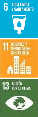 |
| 7) Sustainable construction: Guidelines for the design and construction of sustainable buildings, achieving reductions in energy consumption, which allows reducing GHGs linked to the development of housing and other buildings, through 1) Reduction of the consumption of natural gas and electricity in new housing not including Housing of Social and Priority Interest (VIS and VIP) and 2) Reduction of the consumption of natural gas and energy in new buildings other than housing. |
Gradual implementation until reaching 100% of new buildings nationwide by 2026, maintained until 2030. |
0.09 Mt CO2 eq |
Commercial Residential |
 |
| Ministry of Agriculture and Rural Development |
8) NAMA Sustainable bovine livestock: Reduce GHG emissions generated in livestock production and increase carbon removals from agro-ecosystems dedicated to livestock, through an environmental and productive management at the regional level, intensifying the production of Livestock systems through the implementation of Intensive and Non-intensive Silvopastoral Systems, as well as the sustainable management of the system to increase efficiency, promoting the conservation and / or restoration of natural ecosystems located within livestock farms through the liberation of grazing areas for restoration, conservation and preservation purposes, encouraging the use of the energy contained in the waste generated in livestock auctions and benefit plants related to the management of manure and other waste and guiding the optimization of logistics to commercialize raw milk. |
3,628,959 hectares intervened
- 68,675 ha of areas released for restoration
- 2,169,230 ha in improved grasslands
- 601,187 ha in trees scattered in pastures
- 3,805 ha in mixed forage banks
- 664 ha in living fences
- 61,254 ha in forage hedges
- 61,054 ha in SSPi
|
11.15 Mt CO2 eq
(Only modeling the AFOLU component) |
Forestry Agriculture
Mines and energy
Transport |
 |
| 9) Development and consolidation of the productive chain of forest plantations for commercial purposes: Technical and economic articulation for the production of timber from forest plantations for commercial purposes with the chain's action plan. |
Plantation of 27,282 hectares (300,000 hectares 2015-2030). The increase in ambition is expected for the year 2030 from the annual increase in plantations to 34,165 ha (46,000 ha including reference scenario), which would be equivalent to 368,836 Ha in commercial forest plantations for the mitigation scenario to 2030. |
10.37 Mt CO2 eq
(Modeled with 300,000 ha 2015-2030) |
Agricultural Forestry |
 |
| 10) Strategies to reduce GHG emissions in the life cycle of cocoa production: Increase in the area dedicated to cocoa cultivation under agroforestry systems, as well as its renewal and rehabilitation, to increase the carbon stock. |
- 80,000 hectares under renovation and rehabilitation
- 150,000 hectares in Agroforestry Systems with timber
|
0.16 Mt CO2 eq |
Forestry Agriculture |
|
| 11) Mass adoption of technology (AMTEC 2.0) for rice production: Implementation of a technology transfer model based on sustainability and social responsibility, which tends for the organization, competitiveness and profitability of the producer, implementing technologies in Massive integral way to increase yields and reduce production costs in rice cultivation. Includes weather forecasts - crop modeling, precision agriculture and the MIRI irrigation system. |
- 255,000 hectares of irrigated rice
- 207,046 hectares of dry rice
|
0.08 Mt CO2 eq (only due to the reduction of N2O emissions due to lower consumption of fertilizers) |
Agricultural |
 |
| 12) NAMA Coffee: Strategies for the mitigation of GHG generated in the production, harvest and post-harvest stages of Colombian coffee at the farm level. The NAMA Café defines the measures and actions to mitigate climate change in coffee production, particularly in the processes carried out on the farms (cultivation and post-harvest) until obtaining dry parchment coffee: 1. Implement agroforestry systems on the farms where coffee is grown: restructure established areas with coffee under free sun exposure in marginal areas for cultivation through the implementation of agroforestry systems; 2. Optimize practices in the postharvest process of coffee and change of fuels in mechanical coffee dryers; 3. Increase in the sowing densities of crops with free exposure.4. Efficient use of fertilizers: Encourage best fertilizer application practices |
- Area planted coffee (ha): 936,477 (around 20,000 Ha of coffee nationwide that are currently under free exposure and that could potentially move to a system of cultivation under shade (SAF))
- Traditional production (t): 625,482
- Becolsub Production ( Ecological Benefit of Coffee and its by-products) (t): 205,673
- Ecomill Production (t): 10,825
- Reduction of approx. 4,198 t of urea due to volatilization losses.
|
- 0.28 Mt CO2 eq (AFOLU)
- 0.005 Mt CO2 eq in aggregate with the NAMA Panela (Wastewater)
- 0.08 Mt CO2 eq in aggregate with the Panela NAMA (Energy Efficiency)
|
Agricultural
Mines and energy
Forestry Sanitation |
|
| 13) NAMA Panela: Develop a central strategy for planning, management and institutional and financial articulation for low emission development and the contribution to the sustainable development of panela production in the country. The NAMA seeks to support interventions for the transfer of alternative technology (substitution of diesel engines for electric ones and the more efficient use of energy in the combustion of bagasse in the burners), improve production practices (efficient use of synthetic fertilizers, decrease of burns, lower energy expenditure in soil tillage and wastewater management), restoration of natural systems, capacity building, and the validation of a Monitoring, Reporting and Verification (MRV). |
Technological reconversion of 1,500 sugar mills with 800 hectares of restoration as compensation for historical deforestation. |
- 0.02 Mt CO2 eq (AFOLU)
- 0.005 Mt CO2 eq in aggregate with NAMA Café (Wastewater)
- 0.08 Mt CO2 eq in aggregate with NAMA Café (Energy Efficiency)
|
Agricultural
Mines and energy
Forestry Sanitation |
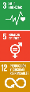
 |
| Ministry of Commerce, Industry and Tourism |
14) Promotion of energy management and energy efficiency projects in the industrial sector: Identification, structuring and implementation of projects on good operating practices and implementation of improvements in energy processes and use of energy with a lower emission factor. |
Up to 15% in the reduction of energy and / or emissions in industrial production, in the corresponding energy demand module (1 A 2). |
1.67 Mt CO2 eq |
Industrial
Mines and energy |
 |
| 15) Management for the integral development of brickyards: Encourage the integral development of productive brick-making units through the strengthening of capacities in carbon footprint, energy management, process improvement and transfer of good operating practices, as well as promote and manage conversion processes and improvements in kilns in brick kilns. |
Increased energy efficiency with a compound annual growth of 1.5% by 2030 |
0.19 Mt CO2 eq |
| 16) Management for the implementation of abatement technologies for N2O emissions in the production of fertilizer raw materials: Incorporation of abatement technologies, through the development of joint strategies for the transfer of technologies, financing mechanisms and maintenance of the reduction of the emissions, and incorporaciónde a Monitoring, Reporting and Verification (MRV). |
Reduction of the nitrous oxide emission factor by up to 80% per unit of product in production plants in the chemical and fertilizers sector . |
0.60 Mt CO2 eq |
Industrial |
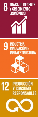 |
| 17) Sustainable production processes in the cement sector: Management in energy efficiency and increase in co-processing to reduce the indicator of intensity of emissions per production unit by optimizing processes related to thermal energy, the use of materials with energy recovery, reuse of some components in the manufacture of the Clinker, and the use of the installed capacity of the plant to raise the level of co-processing. |
Increase in co-processing (with waste, materials and by-products) that allows the replacement of demand for fossil fuels by 15% of the total consumption value of the plants. |
0.71 Mt CO2 eq |
| 18) Project management to improve logistics operations and product management in supply centers: Management of a strategic line of sustainable logistics for diagnosis, technical assistance, identification and structuring of projects and subsequent support for implementation, to promote companies improve logistics operations and processes related to the handling of products with an impact on productivity and environmental sustainability |
Reduce freight transport activity (light vehicles) through logistics optimization strategies , with an impact on reducing emissions and reducing fuel consumption.
For example: 7% reduction in fuel consumption due to load / route optimization. |
1.48 Mt CO2 eq |
Transportation Industry |
 |
| Ministry of Transport |
19) Electric Mobility (MoVE): Creation of a regulatory and financial environment that allows accelerating the transition towards electric mobility, in order to establish regulatory and technical standards for the commercialization and operation of electric vehicles. In addition, implement communication strategies and capacity development, define an electricity tariff scheme for transportation, and establish technology parity in order to generate demand in the market. |
600,000 electric vehicles of the categories: taxi, passenger vehicles, light vehicles, light trucks, official vehicles. |
4.04 Mt CO2 eq |
Transport
Mines and energy |
 |
| 20) Performance Based Navigation - PBN: Promote the necessary conditions for the use of RNAV (Area Navigation) and RNP (Required Navigation Performance) capabilities, applied to aircraft operations, involving Instrument Approaches, Standard Departure Routes (SID), Standard Arrival Routes (STAR) and ATS Routes in Oceanic and Continental areas. |
Achieve the use of the PBN system in 100% of the country's airports and flights . |
0.01 Mt CO2 eq |
Transport |
|
| 21) Program for the Modernization of Automotive Freight Transportation in vehicles of more than 10.5 tons of gross vehicle weight and more than 20 years old. |
57,000 vehicles renewed between 2015 and 2030 |
1.03 Mt CO2 eq |
Transport |
|
| 22) Change to road freight transport mode to Fluvial - Río Magdalena: Dredging activities of the Magdalena River to maintain navigability along the river. |
Transport of 8 million tons of cargo per year |
0.20 Mt CO2 eq |
Transport |
|
| 23) Active Transport NAMA and Demand Management (TAnDem): Increase the modal share of cycling in all cities subject to the NAMA through eight (8) direct mitigation measures based on the Push-Pull Approach (some measures encourage active transport -Pull-, others discourage the use of the individual car -Push-). |
Increase in the modal participation of the bicycle by 5.5% in the participating cities: Bogotá, Cali, Medellín, Barranquilla, Cartagena, Soledad, Bucaramanga, Soacha, Pereira, Santa Marta, Valledupar, Pasto, Montería, Neiva, Armenia, Sincelejo, Popayán. |
0.13 Mt CO2 eq |
Transport |
|
| 24) NAMA Development Oriented to Transport (TOD): Consolidation and conservation of dense cities, with mixes in land uses, high circulation of pedestrians and cyclists, full coverage of mass or collective public transport services and with a strong social fabric based on proximity, the notion of neighborhood and accessibility to urban goods and services at human scale and speed. |
Target adjusted for each city: Pasto, Manizales, Cali, Bogotá |
0.16 Mt CO2 eq |
Transport |
|
| 25) Rehabilitation of the La Dorada - Chiriguaná - Santa Marta railway corridor: rehabilitation of the existing infrastructure to improve its technical, operational, commercial viability and environmental and social sustainability conditions. |
Transport of 4.2 million tons of cargo per year |
0.11 Mt CO2 eq |
Transport |
 |
| Ministry of Environment and Sustainable Development |
26) Ecological restoration: Initiative for the massification of ecological restoration, which seeks to start or accelerate processes of restoration of a degraded, damaged or destroyed forest ecosystem area in relation to its function, structure and composition, in line with the National Plan of Restoration. |
Restoration of 962,615 hectares (2015-2030). |
16.94 Mt CO2 eq |
Forest |
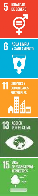 |
| 27) Substitution of traditional firewood stoves for efficient stoves: reduction in the use of firewood in rural homes through the implementation of efficient stoves that use less of this fuel for the same energy demand, to prevent forest degradation. |
1,000,000 efficient wood-burning stoves (2021-2030) |
2.29 Mt CO2 eq |
Residential Forest |


|
28) Reduction of GHG emissions from the use of substitute products for ozone-depleting substances (HFCs): Includes the results of programs / projects / activities associated with the promotion of the replacement of HFCs by substances with lower warming potential global through:
- NAMA for domestic refrigeration,
- Promotion of Thermal Districts
- Promotion of the environmentally sound management of banks of substitute products for substances that deplete the ozone layer (HFC) at the end of their useful life.
- Other additional actions
|
Reduction of GHG emissions of 11% by 2030 compared to a trend scenario. |
0.85 Mt CO2 eq |
Industrial Commercial Residential |
|
| 29) Refrigeration NAMA (energy efficiency): transformation of domestic refrigerator production lines; market introduction of environmentally friendly refrigerators to the market; establishment of a national household refrigerator replacement program; and refrigeration waste management. |
Approximately 16.1 million refrigerators placed on the market by 2030, with R-600a as a refrigerant .
Proper management of 300,000 domestic refrigerators . |
3.14 Mt CO2 eq |
| 30) Promotion of thermal districts for the replacement of cooling systems in cities: (Energy efficiency): Reduction of GHG emissions associated with energy savings resulting from the replacement of old and inefficient air conditioning equipment, centralization of energy generation and distribution thermal (heat / cold), uses of residual energy, renewable or direct available thermal sources , among others. |
Promotion of at least 8 thermal districts in different cities of the country (5 main cities and 3 intermediate cities). |
0.02 MtCO2 eq |
| Intersectoral |
31) Intersectoral Reduction of Deforestation (REDD +)
- Comprehensive Strategy to Control Deforestation and Forest Management
- REDD + Programs: Joint Statement of Intent / Amazon Vision / Low Carbon Sustainable Development for the Orinoquia
- Intersectoral actions and control of deforestation coordinated in the CONALDE F and according to the CONPES document "National Policy for the control of deforestation and forest management" including measures of the respective sector PIGCCS.
- Zero Deforestation Agreements with the Meat, Dairy, Palm Oil and Cocoa Chains; and Intersectoral Pact for Legal Wood in Colombia.
- REDD + projects
- Payment for environmental services
- Articulation with a forest fire goal
|
Reduce the deforestation rate to 50,000 hectares / year by 2030 |
59.18 Mt CO2 eq |
Forest |
 |
| Transversal (led by MinHacienda and MinAmbiente) |
32) Carbon price mechanism: Assignment of a value to the combustion of the ton of CO2, product of the imposition of a tax with which liquid fuels are levied. |
$ 17,211 (COP 2020) per ton of CO2
Although this measure does not have a specific goal, it implies reductions in fuel consumption and, therefore, translates into emission reductions in the Energy Demand and Fugitive sectors. |
0.73 Mt CO2 eq |
Mines and Energy
Transport |
 |
Measures under evaluation
The Ministry of Agriculture and Rural Development has indicated that the following measures do not yet have quantitative targets, but are qualitatively included as GHG mitigation measures in the NDC: 1) Manure management in pig farming, 2) Manure management in poultry farming, 3) Actions in palm plantations; 4) Forest plantations for rubber; 5) Fruit Plantations - avocado and mango.
- Territorial measures
Table 4. Territorial measures to mitigate GHG emissions
| Antioquia |
1. Generation of biomethane in small dairy herds |
Throughout the jurisdiction of Corantioquia. |
Execution scheduled from 2024. 488 biodigesters herds / year. |
Regional Climate Change Plan of Corantioquia (PRCC) |
Agricultural |
| 2. Generation of biomethane in medium-sized dairy herds |
Throughout the jurisdiction of Corantioquia. |
Execution scheduled from 2024. 89 herd biodigesters / year. |
Agricultural |
| 3. Generation of biomethane in large dairy herds |
Throughout the jurisdiction of Corantioquia. |
Execution scheduled from 2024. 49 herd biodigesters / year. |
Agricultural |
| 4. Solar Heaters |
Promote the use of solar energy in homes to reduce the consumption of fossil fuels. Throughout the jurisdiction of Corantioquia. |
Execution scheduled from 2024. 5,000 homes with solar heaters. |
Residential |
| 5. Silvopastoral systems (ssp) to improve beef production. |
Conversion to SSP of areas in accordance with the Antioquia Agricultural Territorial Ordinance Plan in the middle tropics and under the jurisdiction of Corantioquia. |
Execution scheduled for 2024. Conversion of 10,634 ha to silvopastoral systems -SSP. |
Agricultural |
| 6. Silvopastoral systems (ssp) to improve production in bovine production systems in the high tropics (milk). |
Conversion to SSP in the jurisdiction of Corantioquia. |
Execution scheduled from 2024. Conversion of 5,582 ha to silvopastoral systems -SSP. |
Agricultural |
| 7. Separation of solid waste at the source, in municipalities with urban populations of less than 20,000 inhabitants. |
Throughout the jurisdiction of Corantioquia. |
Creation and formalization of 38 recovery organizations. Training and environmental awareness. Strengthening of 25 recovery organizations. Selective route implementation |
Sanitation |
| 8. Efficient Use of Refrigerators |
Creation of collection centers in key municipalities for the collection of old refrigerators for transfer to collection centers. |
Execution planned from 2024. Pilot project for financing 10,000 new refrigerators by public and private entities. |
Industry |
| 9. Use of Biogas in Homes |
In all municipalities with a cattle tradition in the jurisdiction of Corantioquia. |
Execution planned since 2024. 5,000 biogas systems in small productive farms. |
Residential |
| Arauca |
10. Pasture rehabilitation |
Implementation of activities for the rehabilitation of introduced and degraded pastures in Arauquita, Arauca, Saravena, Fortul and Tame. |
13,280 hectares in four (4) municipalities |
Comprehensive Regional Plan for Climate Change for the Orinoquia (PRICCO) 2018-2040 |
Forestry Agriculture |
| 11. Silvopastoral systems |
Intervention in Arauquita, Arauca, Saravena, Fortul and Tame. |
17,571 hectares |
Forestry Agriculture |
| 12. Rational grazing |
Promotion of rational grazing through division of paddocks and forage banks in Arauquita, Arauca, Saravena, Fortul and Tame. |
Rational grazing: 7,821 hectares Forage banks : 188 hectares |
Agricultural |
| 13. Efficient use of fertilizers |
Implementation in corn, rice and cocoa crops in four (4) municipalities (Arauca, Arauquita, Tame and Saravena). |
39,929 hectares: 21,431 hectares of cocoa, 16,748 hectares of rice and 1,750 hectares of corn |
Agricultural |
| 14. Promotion of permanent crop plantations with a high amount of biomass |
Promotion of commercial rubber, cocoa and forestry plantations in two (2) municipalities (Tame and Arauquita). |
6,824 hectares: 3,445 of cocoa and 3,379 of forestry |
Forestry Agriculture |
| Casanare |
15. Rehabilitation of pastures |
Implementation of rehabilitation activities of introduced and degraded pastures in nine (9) municipalities (Trinidad, San Luis de Palenque, Maní, Paz de Ariporo, Hato Corozal, Aguazul, Yopal, Nunchía and Pore). |
23,100 hectares |
Comprehensive Regional Plan for Climate Change for the Orinoquia (PRICCO) 2018-2040 |
Forestry Agriculture |
| 16. Silvopastoral systems |
Intervention in nine (9) municipalities (Yopal, Hato Corozal, Paz de Ariporo, San Luis de Palenque, Trinidad, Maní, Aguazul, Nunchía and Pore). |
31,106 hectares: 1,685 of these destined for the medium intensity modality |
Forestry Agriculture |
| 17. Rational grazing |
Promotion of rational grazing through the division of pastures and forage banks in Yopal, Hato Corozal, Paz de Ariporo, San Luis de Palenque, Trinidad, Maní, Aguazul, Nunchía and Pore. |
18,557 hectares intervened |
Agricultural |
| 18. Efficient use of fertilizers |
Implementation in corn, rice and cocoa crops in four (4) municipalities (Yopal, San Luis de Palenque, Nunchía and Villanueva). |
Implementation of 141,956 hectares: 2,241 hectares of corn, 139,041 hectares of rice, 674 hectares of cocoa |
Agricultural |
| 19. Promotion of permanent crop plantations with a high amount of biomass |
Promotion of plantations of permanent crops with a high amount of biomass (rubber, cocoa and commercial forestry), in seven (7) municipalities (Villanueva, Yopal, Tauramena, San Luis de Palenque, Orocué, Paz de Ariporo, Hato Corozal). |
8,474 hectares |
Forestry Agriculture |
| 20. Sustainable use of automobiles |
Promotion of sustainable patterns in public, private and cargo transport, involving the union of taxi, bus, van and bus drivers, as well as their owners. |
One (1) municipality (Yopal, main city) |
Transport |
| 21. Promotion of bicycles |
Benefit the health and economy of the community in general. |
One (1) municipality (Yopal, main city) |
Transport |
| Cauca |
22. Sustainable public lighting |
Change of luminaires and gradual introduction of technologies from renewable sources. |
15 municipalities |
Cauca Climate Change Plan 2017-2040 |
Mines and energy |
| Cesar |
23. Efficient and low-carbon street lighting |
Replacement of the lights to work with alternative energies. |
40% cumulative replacement |
Cesar Comprehensive Climate Change Management Plan 2016-2032. |
Mines and energy |
| 24. Climate-Smart Coffee Growing Pilot Program |
Climate-smart coffee growing pilot program in the Serranía del Perijá and the Sierra Nevada de Santa Marta. Intersectoral alliance (state, unions and private sector). |
2,000 hectares with agroforestry systems for coffee and GAP.
1,000 wastewater treatment systems |
Agricultural |
| 25. Silvopastoral systems and soil recovery |
Intervention in the Cesar River Valley and the Magdalena Valley |
2,000 hectares with silvopastoral systems and soil restoration practices.
220 hectares of restored protective covers. |
Agricultural |
| Cundinamarca |
26. Regiotram of the West |
Implementation of a railway system that begins its journey in the municipalities of Facatativá and will continue on rails through the municipalities of Bojacá, Madrid, Mosquera and Funza and, finally, the train will arrive in Bogotá. |
Rail interconnection of five (5) municipalities and the capital city.
39.6 km planned for 2024.
A mitigation potential of 0.09 Mt CO2 eq was modeled in 2030. |
Regional Rail Company |
Transport |
| 27. Comprehensive Program for the implementation of livestock practices and pasture management |
Promote the implementation of AgroSilvoPastoriles Systems (SASP) |
9,939 head of cattle 133 producers |
Comprehensive Regional Climate Change Plan of Bogotá - Cundinamarca |
Agricultural |
| Goal |
28. Rehabilitation of pastures |
Implementation of activities for the rehabilitation of introduced and degraded pastures in 14 municipalities (San Martín, Puerto López, Puerto Gaitán, San Juan de Arama, Fuentedeoro, Granada, Castilla La Nueva, Villavicencio, Cumaral, Barranca de Upía, Cabuyaro, Acacías, Restrepo, The Golden) |
Intervention of 23,235 hectares (39% of the total area covered by the measure). |
Orinoquía Comprehensive Regional Climate Change Plan (PRICCO) 2018-2040 |
Forestry Agriculture |
| 29. Silvopastoral systems |
Intervention in 14 municipalities (San Martín, Puerto López, Puerto Gaitán, San Juan de Arama, Fuentedeoro, Granada, Castilla La Nueva, Villavicencio, Cumaral, Barranca de Upía, Cabuyaro, Acacías, Restrepo, El Dorado) |
39,387 hectares |
Forestry Agriculture |
| 30. Rational grazing |
Promotion of rational grazing through division of pastures and forage banks. Intervention in three (3) municipalities of San Martín, Puerto López and Puerto Gaitán. |
28,754 hectares (52% of the target area).
Forage banks: 488 hectares (30% of the total coverage of banks in the region). |
Agricultural |
| 31. Efficient use of fertilizers |
Implementation in corn, rice and cocoa crops in five (5) municipalities (Puerto López, Cabuyaro, Villavicencio, Fuentedeoro and Castilla La Nueva), prioritized according to the importance of each crop at the municipal level. |
Cocoa (6,798 hectares), rice (63,312 hectares) and corn (27,115 hectares). |
Agricultural |
| 32. Promotion of permanent crop plantations with a high amount of biomass |
Promotion of commercial rubber, cocoa and forestry plantations in seven (7) municipalities (Granada, Puerto Lleras, Lejanías, Mesetas, La Macarena, Puerto López and Puerto Gaitán). |
16,398 hectares |
Forestry Agriculture |
| 33. Sustainable use of automobiles |
Promotion of sustainable patterns in public, private and cargo transport, involving the union of taxi, bus, van and bus drivers, as well as their owners. |
One (1) municipality (Villavicencio), main city). |
Transport |
| 34. Promotion of bicycles |
Benefit the health and economy of the community in general. |
One (1) municipality (Villavicencio), main city). |
Transport |
| 35. Green Goal Strategy |
Recovery of the vegetation cover of the department of Meta |
4,650 hectares reforestation and / or restoration.
5 million trees planted. |
Action Plan 2020-2023 "We are Life We are Goal" CORMACARENA |
Forest |
| 36. Eco-efficient stoves |
Within the framework of the implementation of the Comprehensive Regional Plan for Climate Change for Orinoquía (PRICCO) (PAI 2020-2023). |
75 stoves.
10 hectares of wood energy banks. |
Forest Residential |
| Narino |
37. Low carbon municipalities |
Implementation of energy efficiency measures in 6 municipalities of the department, modernization of public lighting, as well as installation of new bicycle infrastructure in 7 municipalities. Among the municipalities are Pasto, San Andrés de Tumaco, Ipiales, Túquerres, La Unión and El Charco. |
Energy efficiency: 100% of public buildings.
Modernization of at least 20% of public lighting Installation of 20 km of new bicycle infrastructure (7 municipalities). |
Comprehensive Plan for the Management of Territorial Climate Change of Nariño 2019-2035. |
Mines and energy Residential Transportation |
| 38. Comprehensive management of solid urban waste |
Triple the rate of use of waste compared to 2015. |
5% reduction in the rate of urban solid waste disposal in landfills. |
Sanitation |
| 39. Sustainable energization of rural areas |
Energy efficiency and self-generation measures. |
4,280 users.
104 educational institutions.
613 families.
25 sugar mills benefiting from the Sustainable Rural Energization Plan (PERS) |
Mines and energy Agricultural Residential |
| 40. Peace-building and low-carbon rural educational infrastructure |
Educational institutions built and / or remodeled with sustainable construction standards . |
Seven municipalities reached.
70% of the schools selected with good practices. |
|
Commercial Residential |
| 41. Agroecological system in the dairy production chain in the dairy basin |
It includes the training of producers in sustainable livestock. |
70% of the selected producers trained in sustainable livestock. |
|
Agricultural |
| Putumayo |
42. Solar energy |
Replacement of electrical energy for public lighting and homes in four (4) municipalities every 10 years (2020-2030, 2030-2040, 2040-2050). |
2020 to 2030: 4 defined municipalities (Guzmán, Leguízamo, Orito, Sibundoy) for a total of 83,711 inhabitants. |
PIGCCT Putumayo department - CORPOAMAZONIA |
Mines and Residential energy |
| 43. Clean transportation systems |
Implementation of clean transport systems: Aerial cable San Francisco - Mocoa SF - Orito, SF Villagarzón. |
1 project formulated and in implementation |
Transport |
| 44. Improvement of livestock production systems |
Implementation of AgroSilvoPastoriles Systems (SASP) in 5 improved livestock production systems in 11,666 hectares of pasture with reconversion to SASP, every 10 years (2020-2030, 2030-2040, 2040-2050). |
2020-2030: 5 livestock production systems improved in 11,666 hectares of pasture with conversion to SASP, 279,140 head of cattle. |
Forestry Agriculture |
| 45. Energy change of firewood consumption |
Expansion of provision of the gas pipeline service, and implementation of eco-efficient stoves and / or solar energy systems for populated areas, in 3,766 homes every 10 years (2020-2030, 2030-2040, 2040-2050). |
2020-2030: 3,766 urban dwellings with energy change from firewood to gas or other (30% of the 12,553 urban dwellings with firewood consumption) |
Mines and Residential energy |
| 46. Forestry sector as a pillar of development |
Encourage community forest management plans to encourage the forestry sector as a development pillar in the Putumayo department |
1,713,502.81 hectares with management plans and forest use in implementation. |
Forest |
| 47. Promotion of Housing of Social and Priority Interest (VIS and VIP) bioclimatic |
Promotion of Biodiversity in the context of Amazonian Cities with reforestation and adequate management of water resources in areas of urban public space |
4 urban projects formulated and in the process of implementation Amazonian cities |
Residential |
| 48. Improvement of basic sanitation systems and adequate use of solid waste and wastewater |
Updating of the Comprehensive Solid Waste Management Plans (PGIRS) according to current needs and in adaptation to flood conditions with lateral scour, mass movements and torrential floods. |
13 PGIRS updated and in the process of execution with timely follow-up |
Sanitation |
| Quindio |
49. Sustainable livestock |
Environmental conversion of traditional livestock systems to sustainable livestock. |
800 hectares in the process of conversion. |
Comprehensive Climate Change Management Plan for Quindío 2017-2030. |
Agricultural |
| 50. Organic production compatible with the climate of the future |
Implementation of organic production techniques. |
200 hectares of different crops |
Agricultural |
| 51. Climate compatible coffee |
Implementation of agroforestry systems, including technical assistance in Good Agricultural Practices (GAP), forestry, home gardening and organic fertilization. |
1,500 hectares |
Agricultural |
| 52. Efficient wood stoves in rural communities |
Construction of efficient wood stoves and planting of wood energy banks. |
Construction of 600 stoves. Planting of 90 hectares of wood energy banks. |
Residential |
| 53. Sustainable tourism (Salento, Filandia and Pijao) |
Reduction of energy consumption in lighting, air conditioning and sanitary hot water. |
Reduction of energy consumption in lighting by 40% (Salento), 30% (Filandia), 80% (Pijao).
Reduction of energy consumption in air conditioning by 40% (Salento) Reduction of energy consumption in domestic hot water by 20% (Salento), 10% (Filandia), 30% (Pijao) |
Commercial Residential |
| 54. Management and / or treatment of domestic wastewater |
Urban domestic wastewater treatment |
Increase urban domestic wastewater treatment to 10%. Construction of two rural collective wastewater treatment systems. |
PDA Quindío (Municipal waste management and sanitation plans PSMV |
Sanitation |
| Santander |
55. Comprehensive management of solid waste |
Construction of bioenergy production centers based on solid waste , construction of a technology and ecotourism park to take advantage of recycling, and capture and burning of methane in sanitary landfills in the Metropolitan Area of Bucaramanga (4 municipalities) and Soto Norte. |
Capture and burn 20% of the methane generated in landfills. |
Santander 2030 Territorial Climate Change Comprehensive Plan |
Sanitation |
| 56. Programs for reducing GHG emissions in the palm oil production sector |
Steam generation from solid waste from beneficiation plants and interconnection to the SIN. |
7,487 tons per year of methane emitted avoided. |
Agricultural Sanitation Mines and energy |
| 57. Recovery of waste in the agricultural subsector |
Implementation of recovery techniques for the decomposition of organic material, such as composting, expanding the coverage of good practices and proper management techniques. |
Use of 84,019 tons of organic waste generated in poultry processes |
Agricultural Sanitation |
| Cauca's Valley |
58. Organizational Carbon Neutral Valley Program |
Carry out coordinated actions between the business sector, the environmental authority and other actors to contribute to the goals of reducing GHG emissions. |
100 companies linked to the Organizational Carbon Neutral Valley Program during the period 2020-2023 |
CVC Action Plan 2020-2023 |
Industry Transport Mines and Energy Commercial Agriculture Sanitation |
| 59. Implementation of non-conventional sources of energy and associated landscape tools in the municipalities of Valle del Cauca |
Implementation of alternative energies (solar, wind, biomass, eco-efficient stoves, promotion actions and technology transfer to reduce deforestation. |
1203 eco-efficient stoves in the period 2020-2023 |
Mines and Forest Energy |
| 60. Intersectoral intervention plan for the Restoration and protection of the ten (10) priority hydrographic basins. |
Watershed Restoration- |
Guabas, Pescador, Bolívar, Riofrío, Coronado-Amaime, Yumbo- Arroyohondo, Calima, Dagua, Guachal and Vijes basins. Planting of eight (8) million trees under the Valle Más Verde program during the 2020-2023 period |
Comprehensive Climate Change Management Plan for Valle del Cauca 2040 |
Forest |
| 61. Valle Cercanías Train |
Inter-municipal Electric Rail Transportation System Project with the participation of the special District of Santiago de Cali, and the Mayor's Offices of Jamundí, Palmira and Yumbo. |
73.4 km of the Yumbo-Cali-Jamundí railway network (37.8 km), Cali-Palmira (30.6 km) and Ramal al Aeropuerto (5 km). |
Governorate of Valle del Cauca |
Transport |
| Vichada |
62. Implementation of activities for the rehabilitation of introduced and degraded pastures |
The measure will not act on areas occupied by native savanna species, but only on those occupied by introduced and improved pastures. |
5,420 hectares |
Comprehensive Regional Plan for Climate Change for the Orinoquia (PRICCO) 2018-2040 |
Agricultural |
| 63. Silvopastoral systems |
Clean pasture cover identified and converted to meadows with scattered trees. |
5,530 hectares |
Forestry Agriculture |
| 64. Rational grazing |
Promotion of rational grazing through division of pastures and forage banks. |
Intervention of 5% of the area in pastures that has already been intervened with improved pastures (27,084 hectares).
Implementation of forage banks in 387 hectares. |
Agricultural |
| 65. Efficient use of fertilizers |
Implementation in corn, rice and cocoa crops in two (2) municipalities (Cumaribo and La Primavera). |
16,661 hectares: 13,246 of corn, 1,976 of rice and 1,439 of cocoa |
Agricultural |
| 66. Promotion of permanent crop plantations with a high amount of biomass |
Promotion of commercial rubber, cocoa and forestry plantations in four (4) municipalities. |
2,137 hectares of commercial forestry 1,109 ha of rubber |
Forestry Agriculture |
| 67. Promotion of sustainable patterns in private transport |
The target population for this measure is the one corresponding to the drivers of private transport vehicles, as well as the owners of the vehicle, who work in the main city of the department. |
One (1) municipality (Puerto Carreño) |
Transport |
| 68. Promotion of cashew cultivation |
Taking advantage of agroclimatic conditions to promote cashew cultivation for small producers in the department of Vichada |
500 hectares |
Vichada Government - Ministry of Agriculture |
Agricultural |
| 69. Solar energy |
Construction of photovoltaic solar energy systems for non-interconnected areas in the two (2) municipalities (Cumaribo and Puerto Carreño). |
247 systems with 900Wp capacity |
Vichada Government- Secretary of Planning and Territorial Development |
Mines and energy Residential Commercial |
| Bogota DC |
70. First Line of the Bogotá Metro |
Construction and start-up of the first line of the Bogotá Metro. |
23.9 km of metro. Implementation to start in 2028.
A mitigation potential of 0.91 Mt CO2 eq was modeled in 2030. |
Bogotá Metro Company |
Transport |
| 71. TransmiCable |
Operation of the TransmiCables planned for Bogotá, in the neighborhoods of Ciudad Bolívar and San Cristóbal. |
Ciudad Bolívar: 3.5 km in operation. San Cristóbal: in structuring. |
TransmiCable |
Transport |
| 72. Half millennium cycle track |
Construction of the Medio Milenio bike path, to serve areas without exclusive infrastructure for cyclists and with a strong potential for bicycle trips. |
25 km of bike path from south to north. |
District Secretary of Mobility |
Transport |
| 73. Technological upgrade of the Transmilenio trunk and zonal fleet |
Inclusion of zero and low emission vehicles in the Transmilenio fleet |
483 standard electric buses, natural gas, or Euro V diesel engine with filter (to be defined). |
Transmilenio SA |
Transportation Mines and energy |
| Cali, Valley of |
74. MIO Cable |
Quantification of the reduction of GHG emissions associated with the implementation and entry into operation of the MIO Cable. |
Operation of the Santiago de Cali cable |
Metro Cali SA |
Transport |
| 75. Electric buses |
Quantification of the reduction of GHG emissions associated with the entry into operation of electric buses to the MIO fleet. |
26 electric buses |
|
Transport |
| 76. Sustainable mobility |
Improvement and provision of cycloinfrastructure for territorial accessibility and intermodality with public transport. |
Implementation of cycle parking at travel attraction points and cycle parking at intermodal points. |
Ministry of Mobility - District Development Plan Cali- Unida por la Vida 2020-2023 |
Transport |
| 77. Solar Farm |
Quantification of the reduction of GHG emissions associated with the generation of photovoltaic electricity |
19.9 MWp of photovoltaic solar energy generation is projected |
EMCALI - California District Development Plan - Unida por la Vida 2020-2023 |
Mines and energy |
| Medellin, Antioquia |
78. Metro of the 80 |
Implementation of Section 1 of the system |
Section 1 (4.8 km) 80% built, 3 interchanges built by 2023 |
Metro de Medellín - Secretariat of Physical Infrastructure Development Plan "Medellín Futuro" 2020-2023 |
Transport |
| 79. Metrocable |
Continuation of the operation of lines H and M. |
Line H: 1.4 km Line M: 1.05 km |
Medellin Metro |
Transport |
| 80. Ayacucho Tram |
Continuation of the operation of the tram, which began operation in 2016. |
4.2 km |
Transport |
| 81. Urban Protected Air Zone (ZUAP) |
Implementation and operation of a protected air zone. |
Implementation of 1 ZUAP by 2023 |
Medellín Mobility Secretariat Development Plan "Medellín Futuro" 2020-2023 |
Transport |
| 82. Densification of the cycling network |
Expansion of the cycling network to 145.4 km by 2023. |
40.4 additional km by 2023 |
|
Transport |
| 83. Electric buses |
Entry into operation of 65 additional electric buses for a total of 130 electric buses. |
65 new electric buses by 2023 |
Secretary of Mobility of Medellín |
Transport |
| 84. Electric taxis |
Expansion of the electric taxi fleet. |
50 additional electric taxis by 2023 |
Transport |
| Montería, Córdoba |
85. Bici Red: Cycloinfrastructure |
Strengthen the city's cycloinfrastructure from the existing 40 km. |
40 additional km by 2023 |
Secretary of Transit and Transportation - Secretary of Planning - Montería Ciudad Amable SAS |
Transport |
| Pereira, Risaralda |
86. Megacable |
Implementation of a public transport system, of the cable car type and of the aerial cable subtype.
The project was scheduled to begin in June 2020 but was rescheduled for 2021 due to the COVID-19 pandemic. |
3.5 km.
4 seasons.
51 cabins. |
Megabus, City Hall of Pereira |
Transport |
| 87. Megabike |
Strengthening of the city's cycle-infrastructure. |
60 bikes in operation |
Mobility Institute, City Hall of Pereira |
Transport |
| 88. Wastewater Treatment Plant - PTAR Pereira y Dosquebradas. |
WWTP that will serve the municipalities of Pereira and Dosquebradas with Activated Sludge technology. The start of construction is projected in 2021. |
Start-up and start-up in 2025. At a 2035 horizon, the WWTP will treat an average flow of 1.42 m3 / sec. |
Waters and Waters, City Hall of Pereira |
Sanitation |
| 89. Smart Public Lighting |
Change of luminaires to remote-manageable LEDs |
Replacement of 3,000 luminaires by 2023 |
Mayor of Pereira |
Energy |
b. Company-led measures
Table 5. Business measures to mitigate GHG emissions
| Bavaria |
Food and drinks |
1. Use of biogas in two (2) brewery wastewater plants: Biogas is used in the heating processes of the brewery in Medellín and Barranquilla. |
Industrial Sanitation |
| 2. Replacement of the use of coal as fuel for natural gas: Modernization of equipment and improvement of energy efficiency in one (1) plant (Tibasosa). |
Industrial |
| 3. Replacement of electrical energy from the national interconnected system by electrical energy by solar panels: Coverage of 25% of in-situ electrical energy consumption, by 2025, inclusion of ex-situ projects to cover 100% of energy needs electrical. |
Industrial Mines and energy |
| 4. Implementation of a sustainable mobility strategy by changing technology or electrifying the fleet by 2025. The initiative covers 5 categories of logistics and transport: primary fleet, secondary fleet, forklifts, sales fleet and solar panels in distribution centers. |
Transportation Mines and energy |
| 5. Replacement of refrigeration equipment and refrigerators with equipment with better energy efficiency. |
Industrial Mines and energy |
| Ecopetrol |
Hydrocarbons |
6. Ecopetrol committed in 2019 to reduce its emissions by 20% by 2030 in line with the country goal defined in 2015. The company expects to increase its ambition to help face the effects of climate change. For this purpose, the company established a Decarbonization Plan based on 4 lines of action: (i) continuous updating of the GHG emissions inventory, (ii) implementation of emission reduction projects, (iii) compensation of emissions through nature- based solutions , and (iv) definition and implementation of a roadmap towards carbon neutrality. Among these projects are:
- Project for the use of Gas in Tea, to generate electricity to Campo Casabe ;
- Ecopetrol's first photovoltaic solar generation umbrella, which covers part of the projects included in the goal proposed by the company to generate 400 MW of renewable energy for self-consumption by 2023.
|
Mines and Forest energy |
| EP M |
Energy |
7. Use of biomethane at the San Fernando WWTP : Award and start of the project for injection into the natural gas network. |
Sanitation Mines and energy |
| 8. Contracts for the sale of photovoltaic solar energy for large customers: 29.6 MW installed with accumulated income of 27.8 million COP, between 2020 and 2030. |
Mines and energy Industrial Commercial |
| 9. Comprehensive solar solution for homes and SMEs: 1.8MW installed with accumulated revenues of 1.3 million between 2020 and 2023. |
Mines and energy Residential Industrial Commercial |
| 10. Entry of two new clients to La Alpujarra Thermal District |
Mines and energy Industrial Commercial |
| TCC |
Logistics and Transportation |
11.Operation of 15% of the local fleet with zero-emission vehicles: 12 of 78 electric vehicles in Medellín and four (4) in Bogotá. |
Transportation Mines and energy |
| 12. Improvement of the performance of the local haulage fleet by 0.3 km / gallon per year. |
Transportation Mines and energy |
| 13. Improvement of the performance of the tractor-trailer fleet by 0.04 km / gallon per year. |
Transportation Mines and energy |
| 14.Plan for the professionalization of urban distribution and national route drivers: Follow-up of good management practices to reduce fuel consumption, emissions and accidents |
Transport |
| 15. 30% increase in the loading capacity of national road vehicles: 30% of 75 m3 vehicles replaced by new 94 m3vehicles. |
Transport |
| Cerromatous |
Mining |
16. Implementation of electric buses to transport employees:
Expected reduction of emissions of 723.6 Ton CO2 eq per year in the operation activity of employee transport buses, for a total of 5,788.8 Ton CO2 eq recorded from the year 2021 to the year 2028.
- 86% replacement of diesel-powered buses
- Reuse of batteries as a load bank, and subsequent recycling of its components
|
Transport |
| Success Group |
Retail trade |
17. Management of refrigerant gases (HFC): Change of 95% by natural refrigerants by 2030, with an expected reduction of emissions of 29,058 Ton of CO2 eq per year. |
Industrial Commercial |
| 18.Reduction of energy intensity and adoption of renewable energies: Goal of reducing 35% of emissions by 2023 in scopes 1 and 2 with respect to the emissions of 2015, and generation of 224,800 kWh / year of energy in solar projects. |
Mines and energy |
| 19. Development of guidelines to increase the use of waste |
Sanitation |
20. Sustainable Mobility: Development of guidelines in relation to
- Customers: 100% of the surfaces, according to availability, with ecosystems to enable sustainable mobility (electrical and / or active).
- Employees: Discounts campaigns and forms of financing for the change of transport to electric and / or active vehicles.
- Logistics: Management of emissions related to logistics and last mile transport.
|
Transportation Mines and energy |
| Auteco |
Automotive |
21. Implementation of 100% of LED lighting in the central administrative building of Itagüí. |
Commercial Mines and energy |
| 22.Implementation of LED lighting at the Itagüí plant. |
Industrial Mines and energy |
| 23. Solar energy project at the Cartagena plant to supply 50% of the total electricity consumption. |
Industrial Mines and energy |
| 24.Change of refrigerants in air conditioners: Audit of compressors (compressed air) to evaluate the efficiency of the system and optimize the process ( Complete audit in one plant, one plant per execution) |
Industrial |
Black carbon policies and measures
The commitment to reduce black carbon emissions is consistent with Colombia's general GHG mitigation effort, with the addition of specific environmental decontamination measures, mainly related to the technological change of mobile sources and off-road machinery, and the reduction of agricultural burns. The goal contemplates the reductions associated with measures that directly address black carbon and other air pollutants, which are in addition to the GHG mitigation measures in the NDC.
Table 6. Specific measurements of black carbon.
| Implementation of Euro IV and Euro VI emission standards for new diesel vehicles |
Land mobile sources with a diesel cycle engine that are manufactured, assembled or imported into the country, with a national operating range, will have to comply with the maximum permissible emission limits for air pollutants corresponding to Euro IV technologies, as of 2015, and Euro VI, from 2023, respectively. |
Transport |
|
| New machinery with Tier 4I emissions standard for construction and industrial sectors |
New regulation indicating that, as of 2023, machinery must meet at least Tier 4 Interim or Stage IIIB standards, regardless of its year of manufacture.
Except for agricultural machinery, with power less than 19 kW and greater than 560 kW. |
Transport |
 |
| Reduction of agricultural burns |
Decrease by 2030 in the burning of rice, sugar cane, corn, wheat crops, among others, one of the main sources of black carbon emitted from the agricultural sector. |
Agricultural |
 |
References
Andrade, GI, & Corzo, GA (2011). What and where to keep? Obtained from IDEAM: http://documentacion.ideam.gov.co/cgi-bin/koha/opac-detail.pl?biblionumber=3
Barbier, EB (2015). Nature and Wealth. Palgrave Macmillan UK.
UNFCCC. (2015). Paris Agreement. Retrieved from https://unfccc.int/files/essential_background/convention/application/pdf/spanish_paris_agreement.pdf
UNFCCC. (2015). Decision 1 / CP.21. Obtained from Adoption of the Paris Agreement: https://unfccc.int/sites/default/files/resource/docs/2015/cop21/spa/10a01s.pdf
UNFCCC. (2018). Decision 4 / CMA.1. Obtained from Additional Guidance in relation to the section of decision 1 / CP.21 that refers to mitigation: https://unfccc.int/en/decisions
UNFCCC. (2018). Decision 9 / CMA.1. Obtained from Additional Guidance regarding communication on adaptation: https://unfccc.int/en/decisions
DANE. (November 25, 2019). Ethnic groups - Technical information . Obtained from https://www.dane.gov.co/index.php/estadisticas-por-tema/demografia-y-poblacion/groups-etnicos/informacion-tecnica
DNP. (2020). Methodologies for the costing of adaptation measures (NDC). Bogota: Directorate of Environment and Sustainable Development of the National Planning Department.
Global Environment Facility (GEF), UNDP. (2020). Sustainable Amazon for Peace .
Obtained from UNDP: https://www.co.undp.org/content/colombia/es/home/projects/amazonia-sostenible-para-la-paz.html
Government of Colombia. (2015). “Expected Contribution Determined at the National Level. Retrieved from https://www4.unfccc.int/sites/ndcstaging/PublishedDocuments/Colombia%20First/INDC%20Colombia.pdf
Guerra-Vargas, LA, & López R., KJ (2020). Considerations for the inclusion of adaptation initiatives in marine-coastal ecosystems in the nationally determined contribution NDC of Colombia in Update. . Bogotá: Directorate of Climate Change and Risk Management, Ministry of Environment and Sustainable Development.
IDEAM, MinAmbiente, Climate and Clean Air Coalition. (2019). National Indicative Inventory of Criterion Pollutant Emissions and Black Carbon. Obtained from http://documentacion.ideam.gov.co/openbiblio/bvirtual/023893/1InventarioBLACK.pdf
IDEAM, UNDP. (2018). Report on the National GHG Inventory of Colombia. Obtained from NIR - BUR2: https://unfccc.int/sites/default/files/resource/NIR_BUR2_Colombia.pdf
IDEAM, PNUD, MADS, DNP, CHANCELLOR'S OFFICE. (2016). National and departmental GHG Inventory - TCNCC.
Bogota: IDEAM, PNUD, MADS, DNP, MINISTRY OFFICE.
IDEAM, PNUD, MinAmbiente, DNP, MINISTRY OFFICE. (2017). Third National Communication to the United Nations Convention on Climate Change. Bogota
IDEAM, PNUD, MinAmbiente, DNP, MINISTRY OFFICE. (2018). Second Biennial Update Report of Colombia to the UNFCCC. Bogota: IDEAM, PNUD, MinAmbiente, DNP,.
IDMC. (November 2020). Colombia Country Information. Retrieved from http://internal-displacement.org/countries/colombia
National Institute of Health, National Health Observatory. (2018). Burden of Environmental Disease, Tenth Special Technical Report. Bogota: INS.
IPCC. (2006). 2006 IPCC Guidelines for National Greenhouse Gas Inventories.
Retrieved from IPCC: https://www.ipcc-nggip.iges.or.jp/public/2006gl/spanish/
IPCC. (2019). Intergovernmental Panel on Climate Change. Obtained from Global Warming of 1.5°C: www.ipcc.ch/site/assets/uploads/sites/2/2019/09/IPCC-Special-Report-1.5-SPM_es.pdf
IPCC, WG1. (2013). Chapter 8. Anthropogenic and Natural Radiative Forcing. Retrieved from Working Group 1 Report (Assessment Report 5): https://www.ipcc.ch/site/assets/uploads/2018/02/WG1AR5_Chapter08_FINAL.pdf
Lipschitz, L., & Schadler, S. (2019). Macroeconomics for Professionals. Cambridge, UK: Cambridge University Press.
MinAgricultura. (December 26, 2018). Agronet . Retrieved from https://www.agronet.gov.co/agroclima/Paginas/default.aspx
Min Environment. (2019). CCVC. Obtained from Short- lived Climate Pollutants: https://www.MinAmbiente.gov.co/images/cambioclimatico/pdf/CCVC/Subproducto_1.pdf
Min Environment. (June 2020). National strategy for the mitigation of short-lived climate pollutants. Retrieved from https://www.MinAmbiente.gov.co/images/AsuntosambientalesySectorialyUrbana/pdf/emisiones_atmosfericas_contaminantes/documentos_relatados/ESTRATEGIA_MITIGACIO%CC%81N_ CONTAMINANTES_VIDA_CORTA.pdf
Min Environment. (sf). International day of tropical forests . Obtained at https://www.MinAmbiente.gov.co/index.php/component/content/article/2-noticias/1107-el-uso-sostenible-de-los-bosques-prioridad-de-MinAmbiente-429
MinAmbiente, IDEAM. (2018). Comprehensive Strategy to Control Deforestation and Forest Management.
Bogota Retrieved from https://redd.unfccc.int/files/eicdgb_bosques_territorios_de_vida_web.pdf
MinAmbiente, IDEAM. (2019). Proposed reference level of forest emissions from deforestation in Colombia for payment for REDD + results under the UNFCCC. Bogota. Retrieved from https://redd.unfccc.int/files/02012019_nref_colombia_v8.pdf / https://redd.unfccc.int/files/31122019_anex_circunstancias_nref_nal_v7.pdf
MinAmbiente, MinEducation, EAN University, Sergio Arboleda University, UDCA, Los Libertadores University Foundation. (2020). EDUCATION, TRAINING AND AWARENESS ON CLIMATE CHANGE IN COLOMBIA VISION TO 2050 AND NDC GOALS TO 2030. Bogotá: Ministry of Environment and Sustainable Development, Ministry of National Education, EAN University, Sergio Arboleda University, University of Applied and Environmental Sciences, University Foundation Los Liberators.
MinAmbiente; MinCIT. (2019). National circular economy strategy: Closing of material cycles, technological innovation, collaboration and new business models. Obtained from the Ministry of the Environment and Sustainable Development; Ministry of Commerce, Industry and Tourism: http://www.andi.com.co/Uploads/Estrategia%20Nacional%20de%20EconA%CC%83%C2%B3mia%20Circular-2019%20Final.pdf_637176135049017259.pdf
MinAmbiente-DCCGR. (2020). Update of Homologation of sectoral emissions within the framework of the NDC. Bogota
MinAmbiente-DCCGR2. (2020). Proposal of accounting rules within the framework of the NDC.
IDB Mission - Cepal. (2012). Damage and loss valuation: Winter wave in Colombia 2010-2011. Bogotá: Economic Commission for Latin America and the Caribbean (Cepal).
OECD. (2019). Economic Surveys: Colombia. Retrieved from https://www.oecd-ilibrary.org/sites/e4c64889-en/index.html?itemId=/content/publication/e4c64889-en
Republic of Colombia, the Kingdom of Norway, Federal Republic of Germany, United Kingdom of Great Britain and Northern Ireland. (2019). Joint Declaration of Intent (JDI) on the Cooperation on reducing greenhouse gas emissions from deforestation and forest degradation. Retrieved from https://www.regjeringen.no/contentassets/c8ce0675a70744a2a96314adbea0a971/joint-ceclaration-of-intent-colombia-gnu-2019.pdf
VITO, Universidad de los Andes, CIAT, University of Wageningen, SEI, ESMIA. (2020). Report on the development and the assumptions for the realization of reference scenarios. Bogotá: World Bank under the Colombia Partnership for Market Readiness (PMR-Colombia) program.
VITO, Universidad de los Andes, CIAT, Unviersidad de Wageningen, SEI, ESMIA. (2020). Report on the development and assumptions of the mitigation scenario. Bogotá: World Bank under the Colombia Partnership for Market Readiness (PMR-Colombia) program.